生成时间：2026-08-18T11:23:35+08:00
今日保留论文数：8
内容构成：今日新文 8 篇；补充推荐 0 篇；经典旧文精读 0 篇
数据源警告
- 本次有 1 个数据源访问异常；完整错误已保留在运行日志中，日报只显示摘要。
- arXiv API：1 个分类访问异常，候选池可能不完整；程序会基于已成功获取的数据继续兜底。
- 主要错误类型：SSL 连接中断 1 次。
高能天体物理重点
1. Cosmogenic neutrinos from FRII galaxies as potential origin of the ultra-high-energy KM3-230213A event
- 来源：arXiv / astro-ph.HE
- 链接：https://arxiv.org/abs/2608.16540v1
- 作者：Denis Allard, Bruny Baret, Noémie Globus, Etienne Parizot
- 评分：novelty 8/10，importance 9/10，relevance 10/10，final 10.00/10
- 推荐理由：围绕KM3-230213A超高能中微子事件，建立FRII射电星系产生UHECR及宇宙成因中微子的多信使模型，并检验UHECR/伽马约束；高度相关且重要。
中文题目：FRII 射电星系的宇宙源中微子能否解释超高能事件 KM3-230213A
做了什么：这篇文章问的是：KM3NeT 报道的超高能中微子事件 KM3-230213A，是否可以不是来自某个单独爆发源，而是来自 FRII 射电星系加速的超高能宇宙线在传播中产生的“宇宙源中微子”。作者用 FRII 射电星系的射电光度函数、光度依赖的宇宙演化、射电光度到喷流动能功率的经验关系，建立一个从源族群到超高能宇宙线、中微子和伽马射线背景的自洽模型。结论是：在合理的 FRII 加速和成分假设下，弥散宇宙源中微子通量可以达到 KM3-230213A 暗示的量级，同时不明显违反现有超高能宇宙线和伽马射线约束；未来 GRAND 完整阵列十年内可能探测到几十到一百多个 \(10^{17}\\,\mathrm{eV}\) 以上事件。
为什么重要：KM3-230213A 的能量处在目前中微子天文学最稀疏、最难解释的区间：太高，不能简单外推 TeV–PeV 天体中微子谱；又太少，无法靠事件方向直接锁定源。这篇文章的重要性在于，它把事件解释放进一个可检验的源族群框架，而不是只调一个任意归一化的中微子谱。FRII 射电星系本来就是少数有能力满足 Hillas 条件、可能加速到 \(10^{20}\\,\mathrm{eV}\) 附近的天体环境，因此若其宇宙线输出能同时解释超高能中微子、超高能宇宙线谱和伽马背景，就会成为多信使高能天体物理中的关键候选。
理论 / 观测 / 仪器方法价值：对理论的价值在于把 FRII 星系的喷流功率、光度函数、源演化和传播级联连成一条闭合链条，减少了“把宇宙线注入率当自由旋钮”的做法。对观测的价值在于给出 GRAND 等未来超高能中微子探测器可检验的事件率范围，并指出单源关联可能很难，但弥散谱形、能区分布、宇宙线成分和各向异性会是更现实的测试。对方法的价值在于强调源族群模型必须同时过三道关：超高能宇宙线谱与成分、宇宙源中微子通量、级联伽马射线背景。
为什么应该关注：你应该关注它，因为这类工作决定了 KM3-230213A 是不是一个孤立“奇怪事件”，还是超高能中微子天空即将打开的第一条线索。如果 FRII 方案成立，未来看到的不会是某个明亮点源迅速跳出来，而更可能是弥散通量、能谱形状、附近强源如 Cygnus A 附近的超高能宇宙线各向异性，以及中微子—宇宙线—伽马射线联合约束逐步收紧。它也提醒我们：单个超高能中微子事件的解释必须经受源族群统计和传播物理的检验。
展开详细解读：文章讲解、背景、理论、重点章节、图表与相关工作
文章详细讲解
科学问题：KM3-230213A 代表一个非常高能的中微子候选事件，其能量尺度已进入 \(10^{17}\\,\mathrm{eV}\) 量级附近的超高能区间。在这个能区，传统的 TeV–PeV 天体中微子源模型不能直接外推，因为源内吸收、最大加速能量、宇宙线成分和宇宙传播都会显著改变谱形。作者关注的问题不是“能否随便画一条中微子谱穿过这个点”，而是更具体地问：如果 FRII 射电星系瓣真的加速超高能宇宙线，这些宇宙线在宇宙背景辐射中传播时产生的宇宙源中微子，是否自然达到 KM3-230213A 所暗示的通量水平。
作者怎么做：论文从 FRII 射电星系族群出发，而不是从事后归一化的宇宙线注入率出发。它采用近期的、依赖射电光度的射电星系数密度演化，把射电光度函数转换为不同红移和不同光度的源数密度；再用射电光度与喷流动能功率之间的经验关系估计可用于非热粒子加速的功率。随后，在标准的 FRII 星系瓣加速假设下构造超高能宇宙线注入谱，包括最大刚度、谱指数和成分等参数，并用成熟的传播工具计算宇宙线在宇宙微波背景和红外—光学背景上的光致介子产生、光致碎裂、Bethe–Heitler 对产生，以及由此生成的中微子和电磁级联光子。
关键结果：作者发现，一组合理的 FRII 模型可以给出与 KM3-230213A 暗示通量相容的宇宙源中微子强度，同时仍不明显违反现有超高能宇宙线谱、成分和弥散伽马射线背景约束。这一点很关键，因为宇宙源中微子模型很容易通过提高宇宙线注入功率来提高中微子通量，但这样通常会过量产生宇宙线或级联伽马射线。论文还给出未来探测预期：完整 \(200{}000\\,\mathrm{km^2}\) GRAND 阵列十年内在 \(10^{17}\\,\mathrm{eV}\) 以上可能探测到约 \(50\) 到 \(135\) 个中微子事件，足以测量弥散谱，而不仅是继续等待零星事件。
局限和下一步：这不是一个对单个事件的方向关联证明。作者明确指出，单个 FRII 星系的中微子点源探测或与 FRII 星系表的统计显著相关仍然困难，原因包括宇宙源中微子在传播中产生、方向信息相对模糊、事件率低，以及源族群分布宽。模型仍依赖射电光度—喷流功率关系、FRII 加速效率、最大刚度、注入成分、红移演化和背景光模型。下一步最有价值的检验不是单一方向巧合，而是 GRAND、IceCube-Gen2 radio、RNO-G 等阵列给出的弥散超高能中微子谱，加上 Auger/TA 对最高能宇宙线成分和各向异性的约束，特别是类似 Cygnus A 的近邻强 FRII 源能否在最高能宇宙线天空留下痕迹。
关键结果是怎么做出来的
证据链的第一步是样本和源族群建模。作者没有把 FRII 的总宇宙线功率设成一个完全自由的常数，而是从 FRII 射电光度函数出发，按射电光度和红移积分得到源数密度。关键选择是采用光度依赖的密度演化：低光度和高光度射电星系的红移演化不同，这会直接影响宇宙源中微子通量，因为高红移源对中微子贡献大，但对到达地球的最高能宇宙线贡献被能量损失压低。这个选择比简单的纯密度演化或纯光度演化更接近射电巡天给出的族群信息。
第二步是把射电观测量转换成非热粒子注入。论文使用射电光度与喷流动能功率的经验标定，并假设 FRII 星系瓣能把一定比例的喷流功率转入超高能宇宙线。这里的“事件数”不是从 FRII 星系逐个计数得来的，而是源族群积分给出的弥散注入率。模型的有效样本量来自整个 FRII 光度函数和红移体积；不确定性主要来自经验关系的散布、源演化模型、加速效率和注入成分，而不是单个源的光度测量误差。
第三步是传播计算和多信使约束。作者用数值传播工具计算超高能宇宙线从源到地球的能量损失和核种变化，并同时输出二级中微子与光子。模型必须与观测到的超高能宇宙线能谱和成分相容，且不能超过 Fermi-LAT 等测得的弥散伽马射线背景中可留给电磁级联的余量。支撑结论的图表应包括：源族群给出的宇宙线注入功率密度随红移变化、地球处超高能宇宙线谱与数据比较、中微子弥散谱与 KM3-230213A 推断通量以及现有上限比较、伽马射线级联背景与观测背景比较。
第四步是 KM3-230213A 的统计解释。单个事件不能给出精确的谱形，只能在给定探测器有效面积、曝光、能量响应和背景假设下转化为一个宽的通量区间或允许带。作者的核心说法是 FRII 宇宙源中微子预测落在这个允许区域内，而非显著低于或高于它。这里不应把“相容”理解成“已证明来源”；它意味着在当前单事件统计下，该模型通过了归一化和多信使一致性的第一关。
第五步是未来事件率预测。作者把模型中微子通量折叠 GRAND 的有效接受度，得到完整 \(200{}000\\,\mathrm{km^2}\) 阵列十年约 \(50\) 到 \(135\) 个 \(10^{17}\\,\mathrm{eV}\) 以上事件。这个范围应理解为模型族的输出，而不是严格的泊松误差条；真正的置信区间还会包含探测器阈值、地形、射电背景、\(\nu_\tau\) 出地概率和空气簇射重建效率等仪器系统误差。稳健性检验的重点是：在调节最大刚度、成分和源演化后，是否仍能同时满足宇宙线、伽马和中微子三类数据。
展开背景、理论、公式、模型、章节和图表导读
背景知识
FRII 射电星系是 Fanaroff–Riley II 型强射电活动星系核，典型形态是明亮热点位于射电瓣外缘，喷流把能量输运到星系际介质中，在大尺度瓣和终端激波附近形成强非热辐射区。与 FRI 源相比，FRII 通常喷流功率更高、环境尺度更大，因此很早就被视为可能加速超高能宇宙线的候选源。
超高能宇宙线问题的历史核心是：地球上观测到超过 \(10^{18}\\,\mathrm{eV}\) 甚至接近 \(10^{20}\\,\mathrm{eV}\) 的带电粒子，但其来源难以定位。带电粒子在银河和河外磁场中偏转，最高能端又受到与宇宙微波背景和红外背景相互作用造成的能量损失限制。中微子则几乎不偏转、不吸收，理论上是寻找超高能宇宙线源的理想信使；但宇宙源中微子通量低，探测有效体积极其关键。
KM3-230213A 这类超高能中微子事件让问题变得紧迫。单个事件本身不能定义一个完整天体物理种群，但它把允许模型空间压缩到一个很有意思的区域：源必须能把粒子加速到极高能量，并且在源内或传播中产生足够中微子，同时不能在宇宙线谱或伽马背景上过量。FRII 源的优势是能量预算大、尺度大、演化强；劣势是源族群参数、喷流成分和加速效率仍有很大不确定性。
为什么现在值得重新看，主要有三点。第一，射电巡天和活动星系核族群研究改进了射电光度函数和红移演化，使源族群模型比早期的粗略估计更可信。第二，Auger、Telescope Array、IceCube、KM3NeT 和 Fermi-LAT 等多信使数据已经足够强，能排除许多“只看中微子”的模型。第三，GRAND、IceCube-Gen2 radio、RNO-G 等射电探测方案即将把 \(10^{17}\\,\mathrm{eV}\) 以上中微子从单事件时代推向统计时代。
该领域常见误区之一是把“满足 Hillas 条件”误认为“必然能产生观测到的超高能宇宙线”。Hillas 条件只是刚度和尺度的必要条件，还需要加速时间短于逃逸和损失时间、源有足够功率、成分能存活。另一个误区是把单个中微子方向附近的明亮源当作直接证据；对于宇宙源中微子，产生位置可能在传播路径上而非源内，带电宇宙线方向也已被磁场扰乱。第三个误区是忽略伽马射线级联约束；高能中微子的产生通常伴随电磁二级粒子，不能只提高强子注入而不付出伽马背景代价。
基础理论 / 方法脉络
基础物理图像是：FRII 喷流把黑洞吸积释放的能量输送到大尺度射电瓣，终端激波、湍流再加速或剪切层可能把质子和原子核加速到超高能。带电粒子的最大能量通常用刚度描述，即能量与电荷数之比；同一磁场和尺度下，铁核可达到的总能量比质子高约 \(Z\) 倍，但传播中也更容易发生光致碎裂。
宇宙源中微子不是源内中微子的同义词。在这篇文章语境中，重点是超高能宇宙线离开 FRII 源后，在宇宙传播过程中与宇宙微波背景和河外背景光相互作用。质子可通过光致介子过程产生带电 pion，随后衰变为中微子；原子核则先经历光致碎裂，释放核子，再参与类似过程。中微子谱因此对注入成分、最大刚度和红移演化极为敏感。
本文模型的关键量包括 FRII 射电光度 \(L_{\rm radio}\)、喷流动能功率 \(Q_{\rm jet}\)、宇宙线加速效率 \(\eta_{\rm CR}\)、注入谱指数 \(s\)、最大刚度 \(R_{\max}\)、源数密度演化 \(\Phi(L,z)\)，以及地球处的超高能宇宙线、中微子和光子通量。射电光度函数给出不同红移和光度的 FRII 数量；经验标定把可观测的射电光度映射为喷流功率；再由加速效率得到宇宙线注入功率。
观测和统计逻辑上，单个 KM3-230213A 事件提供的是一个对弥散中微子通量的宽约束，而不是精确测量。把模型通量与事件联系起来时，需要探测器有效面积或有效接受度 \(A_{\rm eff}(E,\Omega)\)、曝光时间 \(T\)、能量响应和背景率。未来 GRAND 的事件率预测也是同一逻辑：将模型弥散通量与探测器接受度折叠，得到期望事件数。
主要退化关系包括：更强的源红移演化可提高中微子通量但不同比例地影响本地宇宙线；更高的最大刚度可增强最高能中微子但也改变宇宙线谱端点；更重的注入成分可帮助解释 Auger 成分趋势，却可能压低光致介子中微子产额或改变能谱峰位；提高宇宙线效率可提升所有二级信号，但容易碰到伽马背景和宇宙线功率预算约束。
公式与推导
第一步是加速的尺度条件。带电粒子在磁场 \(B\) 中的拉莫尔半径为
其中 \(E\) 是粒子能量，\(Z\) 是电荷数，\(e\) 是元电荷，\(c\) 是光速。若加速区尺度为 \(R\)，必要条件是 \(r_{\rm L}\lesssim R\)，因此最大能量近似满足
其中 \(\beta c\) 表示散射中心或激波的特征速度。FRII 射电瓣因 \(B\) 和 \(R\) 的组合较大而成为候选超高能宇宙线源。
第二步是把射电源族群转为宇宙线能量注入。设 FRII 射电光度函数为 \(\Phi(L,z)=dN/(dV\\,d\log L)\)，射电光度与喷流功率经验关系可写成
其中 \(Q_0\)、\(L_0\) 和 \(a\) 来自观测标定。若宇宙线加速效率为 \(\eta_{\rm CR}\)，则共动宇宙线功率密度为
这一步体现本文的关键方法：归一化由 FRII 光度函数和喷流功率关系导出，而不是任意指定。
第三步是注入谱。对核种 \(i\)，常用刚度截断幂律表示为
其中 \(s\) 是注入谱指数，\(Z_i\) 是核电荷数，\(R_{\max}\) 是最大刚度。归一化 \(\mathcal{N}_i\) 由能量守恒确定：
这里的成分权重和 \(R_{\max}\) 控制最高能宇宙线谱形以及二级中微子产额。
第四步是传播能量损失。对单个宇宙线粒子，可把连续损失写成
其中第一项是宇宙膨胀红移损失，\(b_{e^+e^-}\) 是 Bethe–Heitler 对产生损失，\(b_{\pi}\) 是光致介子损失，\(b_{\rm dis}\) 表示原子核光致碎裂造成的有效能量和质量数变化。中微子主要来自 \(b_{\pi}\) 相关通道。
第五步是宇宙源中微子通量。若单个红移处每单位共动体积的中微子产生率为 \(Q_\\)
u(E_\
u,z))，地球处各向同性微分通量为
其中 \((1+z)E_\nu\) 是产生时能量，分母中的 \((1+z)\) 来自时间膨胀和能量区间变换。强红移演化会显著抬高中微子通量。
第六步是电磁级联约束。强子相互作用伴随产生光子和电子正电子，其注入 \(Q_\gamma\) 经级联后形成可观测背景，近似可写成
其中 \(\tau_\gamma\) 是高能光子与背景光相互作用的光深，\(I_{\rm cas}\) 是级联再分布后的低能伽马成分。模型必须满足 \(I_\gamma(E)\) 不超过观测弥散背景允许的余量。
第七步是把通量转为探测事件数。对探测器有效面积 \(A_{\rm eff}(E,\Omega)\) 和观测时间 \(T\)，期望事件数为
若弥散通量近似各向同性，角向积分可并入曝光函数。论文对 GRAND 的预测本质上就是把 FRII 模型的 \(\phi_\nu\) 与 GRAND 接受度折叠。
第八步是单事件相容性的统计表述。若背景期望为 \(b\)，信号期望为 \(s\)，观测到 \(n\) 个事件的泊松概率为
对 KM3-230213A 这类单事件情形，\(n=1\) 给出的 \(s\) 约束很宽，因此模型判断主要是“是否落入允许通量带并满足其他多信使约束”，而不是精确拟合一个谱。
模型拟合 / 应用方法
这类模型拟合首先不是传统意义上的只拟合一条中微子谱，而是联合调节源族群和传播参数，使地球处的超高能宇宙线、中微子和伽马射线同时合理。主要拟合或扫描的物理量包括宇宙线加速效率 \(\eta_{\rm CR}\)、注入谱指数 \(s\)、最大刚度 \(R_{\max}\)、注入核种混合、FRII 光度函数演化参数，以及射电光度—喷流功率转换的标定和散布。
似然或评分函数通常可以拆成几部分：超高能宇宙线能谱的 \(\chi^2\) 或泊松似然，成分观测如 \(X_{\max}\) 分布的似然，中微子事件数或上限的泊松项，以及伽马射线背景的上限惩罚项。对 KM3-230213A，单事件本身不会给出强烈的参数约束，但会排除那些通量远低于事件暗示水平的模型；现有非探测上限又会排除通量过高的模型。
残差诊断应重点看三个地方。第一，模型宇宙线谱在 ankle 以上和最高能抑制区是否同时贴合数据，不能只在一个能点上好看。第二，成分趋势是否合理，尤其是模型是否预测过轻或过重的最高能成分。第三，中微子通量是否在 KM3-230213A 推断范围附近，同时不超过 IceCube、Auger、ANITA、RNO-G 原型或其他超高能中微子上限。伽马背景残差则要看级联成分是否吃掉了 Fermi-LAT 弥散背景的可用余量。
参数退化很强。提高 \(\eta_{\rm CR}\) 与增强源演化都能提高中微子通量，但前者也提高本地宇宙线和伽马级联，后者更偏向增强高红移中微子贡献。提高 \(R_{\max}\) 可让光致介子过程更有效，但也改变最高能宇宙线端点。重成分注入可帮助匹配 Auger 的较重成分趋势，但会通过光致碎裂改变中微子峰位和强度。射电—喷流功率关系的散布会把这些物理参数的不确定性进一步放大。
模型可能失败的方式也很明确：如果未来 GRAND 或 IceCube-Gen2 radio 的上限大幅低于本文预测区间，FRII 宇宙源中微子解释会受压；如果未来测得的超高能中微子谱峰位或斜率与 FRII 传播模型明显不符，也会削弱该方案；如果最高能宇宙线成分和各向异性显示出与强 FRII 源完全不相容的特征，则需要降低 FRII 对超高能宇宙线总量的贡献。反之，若未来看到 \(10^{17}\\,\mathrm{eV}\) 以上弥散中微子谱、伽马背景不超标、且最高能宇宙线方向与近邻强射电星系存在弱相关，FRII 方案会显著增强。
重点章节 / 结果段落怎么读
数据/样本部分应先看 FRII 光度函数和红移演化的选取。读者要确认作者使用的是哪类射电星系样本、如何区分 FRII 或强射电源、光度依赖密度演化相对传统演化模型改变了什么。这一部分决定了高红移强源的权重，而高红移权重直接影响宇宙源中微子强度。
方法部分应重点看射电光度到喷流功率、再到宇宙线功率的转换。这里包含最重要的经验假设：\(Q_{\rm jet}(L)\) 的斜率和归一化、宇宙线效率、FRII 星系瓣是否能达到所需最大刚度。建议读者把这些假设与常见 FRII 能量预算估计进行比较，而不是只看最终通量图。
传播计算部分是多信使一致性的核心。应检查作者采用的宇宙背景光、光致碎裂截面、光致介子过程、核种处理和数值传播工具。对专业读者来说，最有用的问题是：如果改变背景光模型或核相互作用模型，中微子通量峰值和宇宙线成分会移动多少。
结果部分应按三类图一起读：超高能宇宙线谱和成分、中微子弥散通量、级联伽马射线背景。只有三者同时合格，FRII 解释才有意义。特别要注意模型是否只是通过牺牲宇宙线拟合来抬高中微子，或是否隐藏了过高的电磁级联。
讨论和展望部分应关注两点：为什么单源关联困难，以及未来 GRAND 的事件率预测如何依赖模型。作者认为完整 GRAND 十年可见约 \(50\) 到 \(135\) 个 \(10^{17}\\,\mathrm{eV}\) 以上事件，这部分应与 GRAND 的有效面积、阈值和曝光假设一起阅读，而不要把事件率当成纯理论常数。
建议重点查看的图表
-
FRII 光度函数与红移演化图：看不同射电光度源的数密度峰值红移和演化强度，高光度端是否主导中微子产额。
-
射电光度—喷流功率转换或宇宙线功率密度图：看经验关系的散布是否被传播到模型不确定性中，以及总宇宙线功率是否合理。
-
地球处超高能宇宙线能谱图：看模型线是否同时匹配 ankle 以上谱形和最高能抑制，不要只看归一化。
-
宇宙线成分或 \(X_{\max}\) 诊断图：看模型是否与 Auger/TA 的成分趋势相容，尤其最高能端是否过轻或过重。
-
宇宙源中微子弥散通量图：看预测谱与 KM3-230213A 推断通量带、IceCube/KM3NeT/Auger 等上限的相对位置，以及峰值能量是否在 \(10^{17}\\,\mathrm{eV}\) 附近。
-
伽马射线级联背景图：看模型电磁级联是否超过 Fermi-LAT 弥散背景或非耀变体余量，这是强子模型常被卡住的地方。
-
GRAND 事件率或曝光折叠图表：看 \(50\) 到 \(135\) 个十年事件的能量阈值、阵列规模和模型依赖。
-
各向异性或 Cygnus A 相关诊断：若有图表，应看最高能宇宙线是否可能由近邻强 FRII 源贡献，以及磁场偏转假设如何影响结论。
关键图表逐图导读
图 1：通常应是 FRII 源族群输入图，横轴可能为红移 \(z\) 或射电光度 \(L_{\rm radio}\)，纵轴为数密度、光度函数或功率密度。数据点或阴影区代表射电巡天约束，模型线代表不同光度依赖演化方案。读图时要看高光度端在 \(z\sim1\) 到 \(z\sim2\) 是否显著增强，因为这会抬高中微子而不等比例增加本地最高能宇宙线。陷阱是低光度源数量多不等于能量预算主导，高光度少数源可能贡献主要喷流功率。
图 2：应关注超高能宇宙线谱拟合。横轴为能量 \(E\)，纵轴常为 \(E^3J(E)\) 或类似加权通量；观测点来自 Auger 或 Telescope Array，模型线为 FRII 贡献及可能的总通量。关键是模型在 ankle 以上是否合理，并在最高能端自然下弯。读图陷阱是 \(E^3\) 加权会视觉放大高能端差异，且不同实验能标系统误差可水平移动数据点。
图 3：若包含成分或 \(X_{\max}\)，横轴为 \(E\)，纵轴为平均 \(X_{\max}\)、\(\sigma(X_{\max})\) 或推断的核种分数。模型线需要与观测趋势同向，而不仅是能谱吻合。陷阱是 hadronic interaction model 的选择会改变 \(X_{\max}\) 到成分的映射，因此不要把某条成分曲线看成唯一解。
图 4：中微子弥散通量图是本文核心。横轴为 \(E_\nu\)，纵轴多为 (E_\
\(u^2\phi_\nu\))，模型带显示不同 FRII 参数组合；KM3-230213A 对应的是宽的通量提示区或点状估计，其他实验给出上限曲线。主要结论应是 FRII 预测能落在 KM3-230213A 暗示范围附近且未越过上限。陷阱是单事件通量点不是常规高信噪比测量，其竖向和横向不确定性都很大。
图 5：伽马射线背景或电磁级联图。横轴为伽马射线能量，纵轴为弥散强度；模型级联线应低于 Fermi-LAT 各向同性伽马背景或可用余量。读图时要关注模型是否在 GeV–TeV 区间贴近上限，因为这里常是高宇宙线功率模型的瓶颈。陷阱是总 IGRB 并不全留给宇宙线级联，耀变体和星系形成等源族群已占一部分。
图 6：GRAND 事件率预测图或表。横轴可能为阈值能量、观测时间或模型编号，纵轴为累计事件数 \(N(>E)\)。关键读数是完整 \(200{}000\\,\mathrm{km^2}\) 十年 (E_\
u>10^{17}\,\(\mathrm{eV}\)) 事件数约 \(50\) 到 \(135\)。陷阱是这是模型通量与理想或设计接受度折叠后的预测，真实早期阵列、地形选择、触发效率和重建质量会改变数值。
论文原图 / 可嵌入图片
Fig04
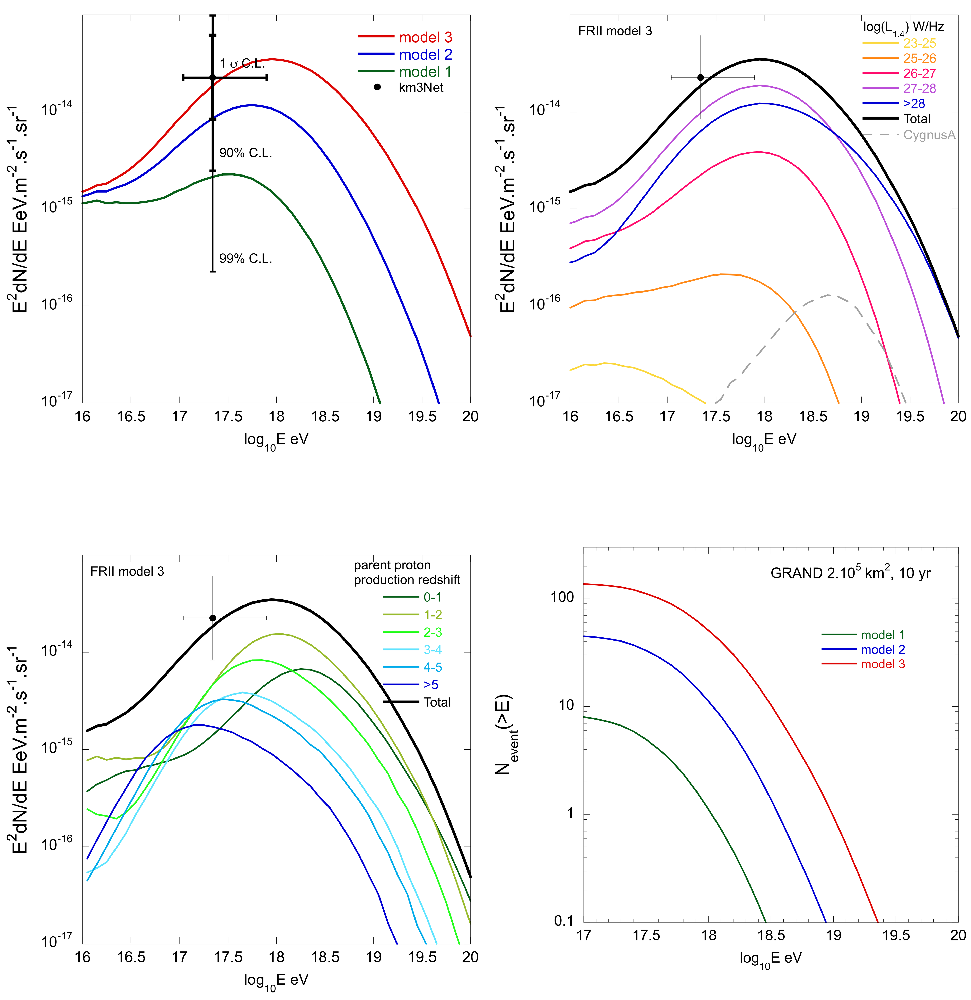
图注：Diffuse neutrino flux predictions for our models. Top left: diffuse neutrino fluxes predicted for models 1, 2 and 3 and compared to the flux deduced from the KM3-230213A event \(\citep{KM3NeTCorrected2025}.\) Top right: Contribution of various $L_{1.4}$ bins to the diffuse neutrino flux predicted for model 3, the contribution of Cygnus A is also shown. Bottom left: Contribution of various redshift bins to the diffuse neutrino flux predicted for model 3. Bottom right: Number of events expected after 10 years of observations by GRAND assuming a total array area of $2\,10^5\rm\,km^2$ as implied by the diffuse fluxes predicted for models 1, 2 and 3.
对应解读：对应“建议重点查看的图表”第5项宇宙源中微子弥散通量图和第7项GRAND事件率；也对应“关键图表逐图导读”图4与图6。
入选理由：这是本文核心结果图：同时给出模型1、2、3的弥散中微子通量、与KM3-230213A推断通量的比较、不同射电光度和红移区间的贡献，以及GRAND十年事件数预测。它直接支撑“FRII宇宙源中微子可解释KM3-230213A且GRAND可检验”的主结论，科学信息密度最高。
来源与置信度：\(arxiv_source\)；high；\(arxiv_source\) / \(FRII_neutrinos.tex\):figure[4]
Fig03
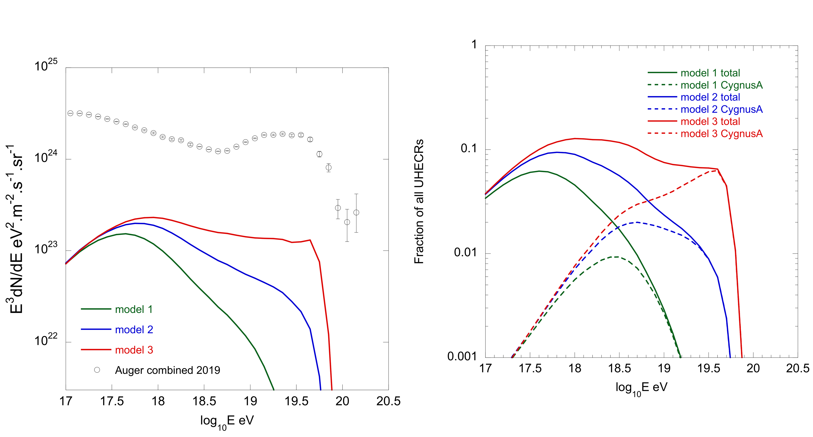
图注：Left : UHECR diffuse spectra predicted for Models~1, 2, 3 compared with Auger data \(\citep{Verzi2019}.\) Right : Fraction of the total UHECR flux contributed by Models~1, 2 and 3. The combined contribution of all FRII galaxies is shown by solid lines, while that of Cygnus~A is shown by dashed lines.
对应解读：对应“建议重点查看的图表”第3项地球处超高能宇宙线能谱图，并部分对应第8项Cygnus A贡献诊断；也对应“关键图表逐图导读”图2。
入选理由：该图检验FRII模型是否能在Auger超高能宇宙线谱约束下成立，并展示总FRII与Cygnus A对UHECR通量的相对贡献。它是判断中微子解释是否自洽的关键配套图，因为不能只提高中微子通量而破坏UHECR能谱。
来源与置信度：\(arxiv_source\)；high；\(arxiv_source\) / \(FRII_neutrinos.tex\):figure[3]
Fig05
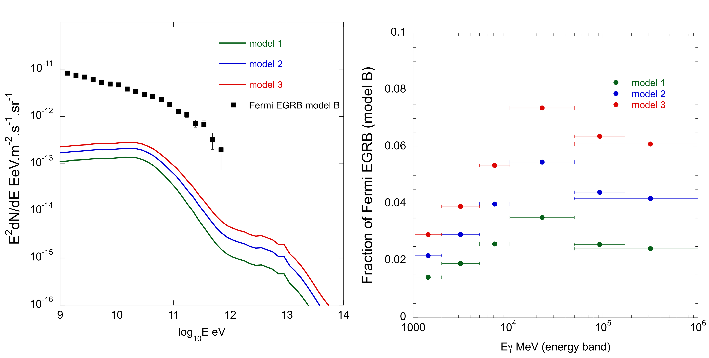
图注：Left : diffuse photon fluxes predicted for models 1, 2 and 3 compared to EGRB (model B) estimated from Fermi-LAT data \(\citep{Ackermann2015}.\) Right : fractional contribution to the EGRB (model B) of the photon fluxes predicted for models 1, 2 and 3.
对应解读：对应“建议重点查看的图表”第6项伽马射线级联背景图，以及“关键图表逐图导读”图5和模型拟合段落中的伽马背景上限惩罚。
入选理由：该图直接显示模型1、2、3产生的弥散光子通量与Fermi-LAT EGRB约束的关系，并给出占EGRB的比例。它用于判断强子模型是否因电磁级联过量而被排除，是中微子解释能否成立的硬约束。
来源与置信度：\(arxiv_source\)；high；\(arxiv_source\) / \(FRII_neutrinos.tex\):figure[5]
Fig01
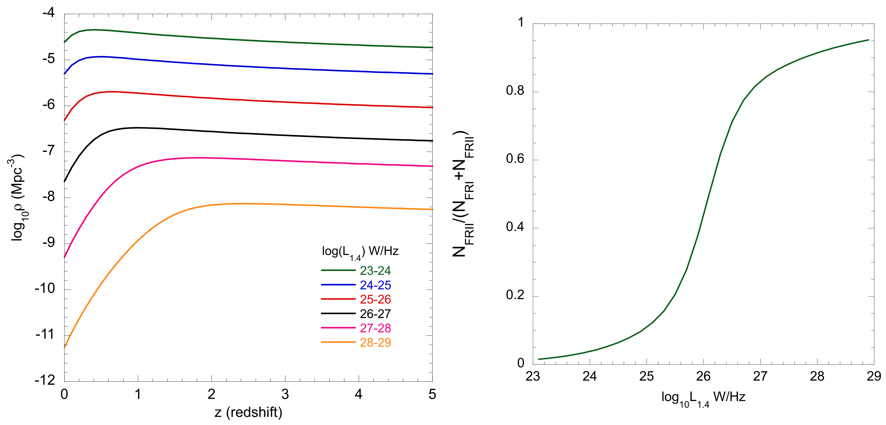
图注：Left : Evolution of the comoving density of RGs as a function of the redshift for various $L_{1.4}$ luminosity bins as predicted by the LDDE of \(\citet{Slaus2024}.\) Right : Luminosity evolution of the fraction of FRII galaxies among all the RGs deduced from \(\cite{deJong2024}.\)
对应解读：对应“建议重点查看的图表”第1项FRII光度函数与红移演化图，以及“关键图表逐图导读”图1。
入选理由：该图展示射电星系随红移的共动数密度演化和FRII占比随射电光度的变化，是论文从观测射电族群自洽推导宇宙线和中微子注入率的基础。它能解释为什么高光度、高红移FRII会显著影响中微子产额。
来源与置信度：\(arxiv_source\)；high；\(arxiv_source\) / \(FRII_neutrinos.tex\):figure[1]
Fig02
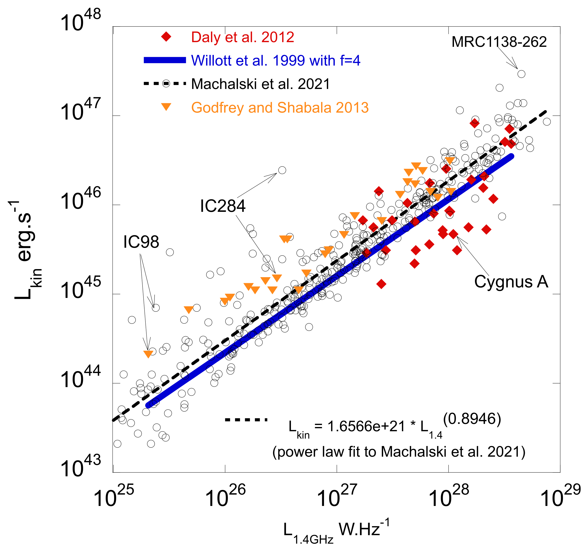
图注：Relation between $L_{1.4}$ and $L_{\rm kin}$ using the data of \(\citet{Machalski2021, Daly2012, Godfrey2013}.\) The \(\citet{Willott1999}\) relation with $f=4$ is shown with a blue line, and the power law fit to \(\citet{Machalski2021}\) with a black dashed line. Some individual galaxies mentioned in the text (for which there might be several estimates) are shown with arrows.
对应解读：对应“建议重点查看的图表”第2项射电光度—喷流功率转换或宇宙线功率密度图，以及模型拟合段落中射电—喷流功率关系的标定和散布。
入选理由：该图给出L1.4与喷流动能功率Lkin的经验关系、数据散布和不同拟合线，是把射电光度函数转换为非热粒子能量预算的关键环节。它支撑日报中关于喷流功率标定不确定性会放大模型不确定性的讨论。
来源与置信度：\(arxiv_source\)；high；\(arxiv_source\) / \(FRII_neutrinos.tex\):figure[2]
Fig09
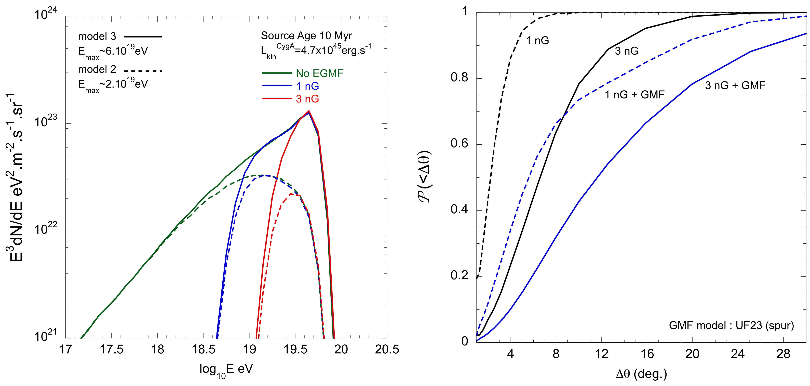
图注：Left : Spectrum at the Earth of UHECRs emitted by Cygnus A for models 2 and 3 for 3 different assumptions for the EGMF value, no EGMF, 1 nG and 3 nG (see legend). A 10 Myr, source age is assumed. Right : Cumulative function of the angular Deflections suffered by UHECR arriving at the earth from Cygnus A with $E>32$~EeV. Different EGMF values are considered with and without the contribution of the Galactic magnetic field (see labels).
对应解读：对应“建议重点查看的图表”第8项各向异性或Cygnus A相关诊断，以及详细解读中关于近邻强FRII源和磁场偏转的检验。
入选理由：该图专门展示Cygnus A在不同河外磁场假设下到达地球的UHECR谱和角偏转累积分布，可用于评估最高能宇宙线方向相关是否可观测。相比Fig06只改变Cygnus A的Lkin假设，Fig09更直接连接各向异性、磁场偏转和未来观测检验。
来源与置信度：\(arxiv_source\)；high；\(arxiv_source\) / \(FRII_neutrinos.tex\):figure[9]
强相关工作
同一事件背景应从 KM3NeT 对 KM3-230213A 的发现论文或官方材料读起，关键词可用 “KM3-230213A ultra-high-energy neutrino KM3NeT Nature” 和 “KM3NeT 230213A cosmogenic neutrino”。这些工作提供事件能量重建、方向、背景估计和通量换算，是判断本文 FRII 模型是否真正相容的前提。需要特别区分“事件观测论文”和“来源解释论文”：前者给出探测证据，后者在天体物理模型空间中寻找可行解释。
同类模型包括 cosmogenic neutrino from UHECR sources、radio galaxies as UHECR accelerators、AGN jets and lobes UHECR acceleration、FRII luminosity function evolution 等方向。相近或竞争解释可能包括瞬变源内强子过程、低光度伽马暴、潮汐瓦解事件、耀变体、星暴星系群体，或更传统的全体 UHECR 源族群传播模型。检索关键词建议包括 “FRII radio galaxies UHECR cosmogenic neutrinos”、“Cygnus A ultra high energy cosmic rays”、“GRAND cosmogenic neutrino sensitivity”、“UHECR composition cosmogenic neutrino constraints”。
与已有张力的关系在于，许多能产生较高中微子通量的强演化质子模型已被 IceCube/Auger 上限和 Fermi-LAT 级联背景显著限制；而较重成分模型虽然更容易匹配 Auger 成分趋势，却通常降低 \(10^{17}\\,\mathrm{eV}\) 以上宇宙源中微子通量。本文的看点正是在 FRII 光度函数和喷流功率约束下寻找这个窄窗口：通量高到可解释 KM3-230213A，但不高到被多信使数据排除。
同一事件 / 同类源线索：
相似工作：
基础理论 / 方法工作：
相反观点 / 张力线索：
（未提供）
2. An ALMA view of the Jet-Arc CO clouds toward the TeV $γ$-ray source HESS J1023-575 and Westerlund 2; Evidence for the footprints of microquasar jets, the very powerful cosmic-ray accelerator in the Galactic disk
- 来源：arXiv / astro-ph.HE
- 链接：https://arxiv.org/abs/2608.14988v1
- 作者：Yasuo Fukui, Kisetsu Tsuge, Hidetoshi Sano, G. R. Bhuvana, Rin I. Yamada, Ryoji Matsumoto, Yuta Asahina, Tsuyoshi Inoue
- 评分：novelty 8/10，importance 9/10，relevance 10/10，final 10.00/10
- 推荐理由：直接针对明亮TeV源HESS J1023-575，结合ALMA分子云结构提出微类星体喷流足迹和强强子宇宙线加速器解释；涉及H.E.S.S.、TeV伽马射线、宇宙线和潜在Galactic PeVatron级问题，优先阅读。
中文题目：用 ALMA 看 HESS J1023-575 与 Westerlund 2 方向的 Jet-Arc CO 云：银河系盘内强宇宙线加速器的微类星体喷流足迹证据
做了什么：这篇论文用 ALMA 对 TeV 伽马射线源 HESS J1023-575 附近、与 Westerlund 2 同方向的 Jet 和 Arc 分子云做亚秒差距尺度 CO 观测，发现这些云并不是平滑的大尺度结构，而是由宽约 \(0.5\,\mathrm{pc}\)、长约 \(10\)--\(20\,\mathrm{pc}\) 的细长丝状结构组成，并且整体沿着横跨约 \(170\,\mathrm{pc}\) 的 Jet-Arc 轴排列。作者将这种形态与微类星体喷流打入周围 H I 气体后的磁流体动力学模型联系起来，认为这些 CO 丝可能是古老致密天体喷流在星际介质中留下的“足迹”。在强子伽马射线解释下，他们估算所需宇宙线质子能量约为 \(W_{\rm p}\simeq 7\times 10^{48}\,\mathrm{erg}\)，并强调如果该源持续活动 \(1\)--\(10\,\mathrm{Myr}\)，累计宇宙线输出可非常可观，甚至可与大量超新星遗迹相提并论。
为什么重要：HESS J1023-575 是 H.E.S.S. 在银河系内看到的明亮 TeV 源之一，但它到底由年轻星团风、超新星遗迹、脉冲星风云，还是隐藏的致密天体驱动，一直不够清楚。本文的重要性在于，它不是只从伽马射线形态或能谱推断源类别，而是把亚秒差距分子气体形态、百秒差距尺度的云-伽马射线对齐关系、以及喷流-星际介质相互作用模型放在一起，提出一个可检验的微类星体喷流方案。若成立，这意味着银河盘内除了超新星遗迹和大质量星团外，长期活动的致密双星也可能是高效率、长寿命的宇宙线加速器。
理论 / 观测 / 仪器方法价值：对观测而言，本文给出了一种利用高分辨率 CO 丝状结构追踪过去喷流活动的办法，尤其适合寻找已被尘埃遮蔽、在光学和软 X 射线中不显眼的老年微类星体或致密天体。对理论而言，它把喷流动力学、分子云形成、H I 密度不对称和强子伽马射线辐射联系起来，为解释 Jet 与 Arc 两侧形态差异提供了具体物理图像。对方法而言，关键价值在于用气体分布估算靶物质密度，再由伽马射线光度反推 \(W_{\rm p}\)，从而把分子云观测转化为宇宙线能量预算约束。
为什么应该关注：如果你关心银河系宇宙线起源，这篇文章值得看，因为它挑战了“银河盘宇宙线主要由超新星遗迹瞬时注入”的简单图像，强调长寿命喷流源的累计贡献。如果你关心 TeV 未认证源，它提供了一个从分子气体形态反推隐藏加速器的案例。如果你做 ALMA、H I、CO 或伽马射线多波段研究，它也提醒我们：TeV 源周围的分子云不只是被动靶子，其细结构可能保留了加速器动力学历史。
展开详细解读：文章讲解、背景、理论、重点章节、图表与相关工作
文章详细讲解
科学问题：HESS J1023-575 位于年轻大质量星团 Westerlund 2 附近，是银河系内非常亮的 TeV 伽马射线源之一。过去对它的解释包括星团风碰撞、超新星遗迹、脉冲星风云、以及更隐蔽的致密天体活动。本文抓住的核心问题是：为什么 HESS J1023-575 的 TeV 辐射在天空上与东西两侧的 Jet 与 Arc CO 云有如此长尺度的轴向对齐？这种对齐是投影巧合、被星团反馈塑造的普通分子云，还是一个古老喷流系统在星际介质中留下的动力学痕迹？
作者怎么做：论文用 ALMA 对 Jet-Arc CO 云进行亚秒差距尺度观测，空间分辨率足以把原先单碟或低分辨率 CO 图中的大块云分解成细丝。作者采用约 \(7.5\,\mathrm{kpc}\) 的距离，把角尺度转换为物理尺度，并将 ALMA 的 CO 形态与更大尺度的 CO、H I 和 TeV 伽马射线分布比较。重点不是简单测云质量，而是看细丝的宽度、长度、方向一致性、速度结构，以及它们是否沿着从 HESS J1023-575 中心向两侧延伸的 Jet-Arc 轴排列。
关键结果：ALMA 图像显示，Jet 和 Arc 云由大量宽约 \(0.5\,\mathrm{pc}\)、长约 \(10\)--\(20\,\mathrm{pc}\) 的细长 CO 丝组成，这些丝状结构在方位角上与 Jet-Arc 大尺度轴高度一致。作者用微类星体喷流与 H I 气体相互作用的磁流体动力学图像解释这些丝：喷流推动、压缩并扰动中性气体，随后在冷却和磁场约束下形成 CO 细丝。东西两侧云形态不同，则被归因于两侧 H I 环境密度不同，而不是喷流本身必须高度不对称。
宇宙线能量方面，作者在强子情景下将 TeV 伽马射线光度与 CO、H I 推得的靶气体密度结合，估计产生观测伽马射线所需的宇宙线质子总能量为 \(W_{\rm p}\simeq 7\times 10^{48}\,\mathrm{erg}\)。他们指出，这一能量大约比一些经典 TeV 伽马射线超新星遗迹中推得的值高一个量级；更重要的是，若 HESS J1023-575 的活动时间达到 \(1\)--\(10\,\mathrm{Myr}\)，其累计宇宙线输出将远超一个典型年轻超新星遗迹的当前 TeV 加速阶段。
局限和下一步：这篇文章的论证链依赖几个强假设。第一，Jet-Arc CO 云与 HESS J1023-575 必须在三维空间中真实相关，而不仅是视线叠加；第二，CO 丝状结构必须主要由喷流塑造，而不是由星团风、壳层膨胀、云-云碰撞或大尺度磁场自然排列造成；第三，强子伽马射线解释需要靶气体与宇宙线空间重合。下一步最关键的是寻找中心致密源的直接证据，例如硬 X 射线、射电核心、喷流非热辐射、或高分辨率 H I 与 CO 速度场中可与喷流动力学匹配的扰动。
关键结果是怎么做出来的
本文最重要的证据链从样本选择开始：作者没有对整个 Westerlund 2 区域做泛泛的分子云普查，而是针对与 HESS J1023-575 在天空上呈长轴对齐的 Jet 与 Arc CO 云做 ALMA 观测。这一选择很关键，因为原有大尺度 CO 数据已经显示东西两侧云与 TeV 源中心存在近似线性结构；ALMA 的作用是检验这种结构在亚秒差距尺度上是否仍然保持有组织形态，还是会被分解成随机团块。
事件数或样本量在这里不是瞬变事件计数，而是空间结构样本：多个 CO 细丝的宽度、长度、方位角和速度通道分布。作者报告这些丝的典型宽度约为 \(0.5\,\mathrm{pc}\)，长度约为 \(10\)--\(20\,\mathrm{pc}\)，在约 \(170\,\mathrm{pc}\) 的 Jet-Arc 轴上成组出现。读者应注意，本文的显著性更多来自形态一致性和物理可解释性，而非单一的 \(p\) 值检测；因此关键是看细丝方向分布是否真的窄、是否与人为选取的轴有关、以及是否存在同样强的替代轴向排列。
统计和模型比较方面，论文更接近物理判别而非盲搜似然分析：一方面用 CO 和 H I 给出气体密度、质量和空间位置约束，另一方面用 TeV 伽马射线光度在强子情景下反推 \(W_{\rm p}\)。微类星体喷流模型需要同时解释三个观测事实：东西两侧均有与中心源对齐的云结构、ALMA 看到窄而长的丝、Jet 与 Arc 两侧形态不完全相同。作者认为 H I 密度不对称可自然导致两侧喷流足迹差异。
支撑结论的图表应包括：ALMA CO 积分强度图，用于证明细丝存在；CO 速度通道图或位置-速度图，用于判断丝是否为相干结构；CO 与 HESS TeV 轮廓叠加图，用于展示空间关联；H I 或总气体柱密度图，用于讨论靶物质和两侧环境差异；以及喷流模拟或示意图，用于说明微类星体喷流如何压缩 H I 并形成 CO 丝。若这些图中只有投影对齐而没有速度相干性，论证会明显变弱。
系统误差主要来自距离、CO 到 \(\mathrm{H_2}\) 转换因子、H I 光学深度、云与 TeV 源的三维重合程度、以及伽马射线强子成分比例。\(W_{\rm p}\) 与靶气体平均密度近似成反比，因此气体密度估计偏低会导致宇宙线能量被高估，反之亦然。TeV 光度还依赖源距离的平方；如果距离不是 \(7.5\,\mathrm{kpc}\)，则能量预算会系统改变。
稳健性方面，本文最值得关注的是作者是否检查了不同速度积分范围、不同 CO 阈值、不同背景扣除方式下细丝方位是否稳定；是否比较了无喷流情景下星团风壳层或大尺度磁场造成类似丝状云的可能性；以及是否用 H I 密度差定量再现 Jet 与 Arc 两侧差异。对于“等效至少 \(1000\) 个超新星遗迹”这类强表述，读者应区分瞬时宇宙线能量、长期累计注入能量和当前 TeV 可见能量三者。
展开背景、理论、公式、模型、章节和图表导读
背景知识
HESS J1023-575 是 H.E.S.S. 在 Westerlund 2 方向发现的明亮 TeV 源。Westerlund 2 是一个年轻大质量星团，包含大量早型星和强烈恒星风，因此这个区域天然会让人想到集体星风、泡壳、超新星遗迹或脉冲星风云等高能辐射机制。问题在于，这些机制在空间形态、能量预算和时间尺度上给出的预期并不完全相同，而 HESS J1023-575 的扩展形态和周围气体分布又比较复杂。
银河系 TeV 源的一个长期难题是“未认证源”很多。伽马射线图像角分辨率有限，银河盘上又有大量分子云、H II 区、星团和脉冲星沿视线重叠，仅靠 TeV 形态常常无法唯一判定加速器。分子气体在这里有双重作用：它既可能是宇宙线质子产生 \(\pi^0\) 衰变伽马射线的靶物质，也可能记录了加速器对星际介质的机械反馈。
Jet 与 Arc CO 云之所以引人注意，是因为它们不是孤立分子云，而是在 HESS J1023-575 两侧形成很长的轴向结构。若这种结构由一个中心发动机驱动，最自然的候选之一是微类星体喷流：黑洞或中子星吸积系统可以发射准直相对论喷流，喷流穿过周围 H I 和分子气体时会产生冲击、压缩、湍流和磁场放大。与短寿命超新星冲击不同，微类星体可在更长时间尺度上反复或持续注入能量。
现在值得重新看这个问题，是因为 ALMA 能在几千秒差距距离上分辨亚秒差距结构。过去低分辨率 CO 图像看到的“云”可能混合了许多物理上不同的子结构，而 ALMA 可检查这些子结构是否具有共同方向和相干速度。对喷流足迹假说来说，细丝的方向、宽度和长度比总云质量更有诊断力。
该领域常见误区之一是把 CO 与 TeV 轮廓重合直接等同于强子起源。事实上，空间重合只是必要条件之一，还要看气体是否在正确距离、宇宙线是否能扩散到那里、能谱是否支持质子相互作用、以及电子逆康普顿或轫致辐射是否能被排除。另一个误区是把任何细丝状分子云都解释成喷流结果；大尺度磁场、剪切、壳层压缩和云-云碰撞也能产生丝状结构，因此速度场和环境对照非常重要。
基础理论 / 方法脉络
基本物理图像是：如果一个致密天体系统发射双极喷流，喷流携带动量、能量和磁场进入周围星际介质。喷流头部驱动弓形冲击，侧向膨胀形成 cocoon，压缩 H I 气体并促进冷却；在适当密度、温度和屏蔽条件下，部分中性气体可转化为 CO 可见的分子结构。若环境中存在有序磁场或喷流剪切层，压缩后的冷气体容易形成长而窄的丝状形态。
对 HESS J1023-575 而言，论文的关键假设是 Jet 与 Arc CO 云位于同一物理距离附近，且与 TeV 源中心存在因果联系。采用约 \(7.5\,\mathrm{kpc}\) 的距离后，ALMA 看到的角尺度可转化为 \(0.5\,\mathrm{pc}\) 级宽度和 \(10\)--\(20\,\mathrm{pc}\) 级长度。这个尺度对星际湍流而言不罕见，但若大量丝都沿同一中心轴排列，就更像一个定向能量注入过程。
强子伽马射线模型的核心是高能质子与气体质子碰撞，产生 \(\pi^0\)，随后 \(\pi^0\rightarrow 2\gamma\)。因此 TeV 伽马射线光度与宇宙线质子能量密度和靶气体密度都有关。若气体密度由 CO 和 H I 推得，TeV 光度由 H.E.S.S. 测得，就可反推产生观测辐射所需的 \(W_{\rm p}\)。这个反推不是唯一的，因为宇宙线谱形、低能截止、空间填充因子和距离都会进入系统误差。
观测方法上，CO 谱线给出分子气体的亮温积分、速度结构和柱密度估计。H I 数据提供原子气体环境，尤其用于解释东西两侧 Jet 与 Arc 形态差异。TeV 数据提供高能辐射位置和总光度。三者结合的难点在于角分辨率和视线混叠不同：ALMA 看到的是很细的分子结构，H I 往往分辨率较低且受光学深度影响，TeV 图像角分辨率也不能直接对应单根 CO 丝。
主要退化关系包括：\(W_{\rm p}\) 与平均气体密度 \(n\) 的退化、距离 \(d\) 与光度 \(L_\gamma\) 的退化、CO 转换因子 \(X_{\rm CO}\) 与分子质量的退化、以及喷流年龄与喷流功率的退化。同样的 TeV 光度可由高功率短时喷流或低功率长时喷流产生；同样的 CO 形态也可能由喷流、星团风或云-云碰撞产生。因此本文的说服力来自多条证据的相互一致，而不是某一个量的精确拟合。
公式与推导
第一步是把观测到的伽马射线通量变成源光度。若观测能量通量为 \(F_\gamma\)，距离为 \(d\)，则各向同性等效光度为
这里 \(L_\gamma\) 是指定能段内的伽马射线光度，\(d\) 是源距，\(F_\gamma\) 是能量通量。该式说明距离误差会以 \(d^2\) 放大到能量预算中。
第二步是由 CO 亮度估算分子氢柱密度。常用近似为
其中 \(W_{\rm CO}=\int T_{\rm mb}(v)\,dv\) 是 CO 积分强度，\(T_{\rm mb}\) 是主波束亮温，\(v\) 是视向速度，\(X_{\rm CO}\) 是 CO 到 \(\mathrm{H_2}\) 的转换因子。该关系隐含 CO 光学厚、云处于经验校准适用环境等假设。
第三步是把柱密度转为气体质量。对覆盖立体角区域 \(\Omega\)，分子气体质量可写为
其中 \(\mu\) 包含氦和重元素修正，\(m_{\rm H}\) 是氢原子质量，因子 \(2\) 表示每个 \(\mathrm{H_2}\) 分子含两个氢核。若再加入 H I，则总靶质量需叠加原子气体贡献。
第四步是估算平均靶气体密度。若相互作用体积为 \(V\)，总气体质量为 \(M_{\rm gas}\)，则
这里的 \(n\) 是宇宙线质子实际遇到的平均氢核数密度。注意它不一定等于单根 CO 丝内部密度，因为 TeV 辐射平均了更大体积。
第五步是写出强子相互作用的特征损失时间。高能质子与气体碰撞的近似冷却时间为
其中 \(\sigma_{pp}\) 是质子-质子非弹性截面，\(\kappa\) 是非弹性能量损失比例，\(c\) 是光速。密度越高，质子越快把能量转化为次级粒子和伽马射线。
第六步是把质子能量与伽马射线光度联系起来。若 \(\eta_\gamma\) 表示质子损失功率中进入指定伽马射线能段的有效比例，则
因此可反推
这就是本文能量预算的核心缩放：距离越远、通量越大或靶密度越低，所需 \(W_{\rm p}\) 越高。
第七步是考虑宇宙线谱。若质子谱为
则 \(A\) 是归一化，\(s\) 是谱指数，\(E_{\rm cut}\) 是截止能量。总质子能量为
不同的 \(s\)、\(E_{\rm min}\) 和 \(E_{\rm cut}\) 会改变从 TeV 光度外推到总 \(W_{\rm p}\) 的结果。
第八步是把长期活动源与瞬时能量联系起来。若平均喷流功率为 \(P_{\rm jet}\)，宇宙线加速效率为 \(\epsilon_{\rm CR}\)，活动时间为 \(t_{\rm age}\)，则
这说明同样的 \(W_{\rm p}\) 可由高功率短寿命或低功率长寿命喷流实现；本文强调 \(t_{\rm age}\sim 1\)--\(10\,\mathrm{Myr}\) 时，累计贡献可能非常大。
第九步是形态拟合或对齐诊断的基本量。若第 \(i\) 根丝的方向角为 \(\theta_i\)，Jet-Arc 轴方向为 \(\theta_0\)，可定义方向离散度
当 \(S_\theta\) 接近 \(1\) 时，丝状结构与轴高度平行；当 \(S_\theta\) 接近 \(0\) 时，方向近似随机。即使论文未必采用这个统计量，它也是读者检验“对齐”说法是否定量化的有用诊断。
模型拟合 / 应用方法
这类工作的拟合对象可分成三层。第一层是气体观测拟合，包括 CO 谱线的积分强度、速度分量分解、丝状结构识别、宽度和长度测量。这里常用高斯速度成分、阈值连通区域、骨架提取或二维强度剖面拟合。拟合量包括中心速度、线宽、峰值亮温、积分强度、丝宽、长宽比和方向角。
第二层是气体到质量和密度的推断。参数包括距离 \(d\)、\(X_{\rm CO}\)、H I 光学深度修正、云的视线深度和填充因子。似然函数可基于谱线噪声和强度残差，但系统误差往往大于统计误差。若采用不同 \(X_{\rm CO}\) 或不同速度积分窗口，分子质量和平均密度会系统移动，从而影响 \(W_{\rm p}\)。
第三层是伽马射线辐射模型。强子模型拟合通常需要质子谱归一化、谱指数、截止能量和靶密度；轻子模型则需要电子谱、磁场、辐射场能量密度和冷却历史。本文侧重强子解释，因此最关键的拟合或估算量是 \(W_{\rm p}\)。读残差时应看模型是否能同时匹配 TeV 光度、空间分布和谱形；只匹配总光度不足以排除逆康普顿情景。
喷流-云相互作用模型的退化更强。喷流功率、喷流年龄、环境密度、磁场方向、喷流进动、视角和间歇性都会影响最终 CO 形态。Jet 与 Arc 两侧的差异可由环境密度不对称解释，但也可能由喷流本身不对称或投影效应造成。因此模型的价值主要是提供物理可行性和可检验预言，而不是给出唯一解。
实际应用中，读者应把这篇论文看成“多波段形态证据加能量预算”的案例。若未来在中心找到硬 X 射线点源、射电核心、双极非热喷流或与 CO 丝同轴的同步辐射结构，微类星体解释会显著增强。若更高质量的 TeV 图像显示伽马射线与气体靶物质不相关，或 CO 速度场更像普通壳层膨胀，则强子喷流解释会被削弱。
重点章节 / 结果段落怎么读
数据与样本部分应首先看作者如何定义 Jet 与 Arc CO 云、采用什么距离、选择哪些速度范围，以及 ALMA 与已有单碟 CO、H I、H.E.S.S. 数据如何配准。这里决定了后面所有长度、质量和能量估计的零点。
ALMA 结果部分是全文核心。读者应重点检查 CO 积分强度图、速度通道图、位置-速度图和丝状结构参数表。关键问题是：所谓 \(0.5\,\mathrm{pc}\) 宽、\(10\)--\(20\,\mathrm{pc}\) 长的细丝是否在多个速度通道中连续存在，还是由积分投影造成。
喷流解释部分要看作者如何把 MHD 模型与观测形态对应起来。重点不是示意图是否漂亮，而是模型是否自然解释长轴对齐、东西两侧差异、丝宽尺度和气体速度扰动。如果模型只解释其中一项，论证就不够强。
伽马射线与宇宙线能量预算部分应检查 \(L_\gamma\)、靶气体密度和 \(W_{\rm p}\) 的计算假设。尤其要看作者采用的 TeV 能段、距离、气体质量、平均密度和强子辐射效率；这些参数决定 \(7\times10^{48}\,\mathrm{erg}\) 是否稳健。
讨论和结论部分需要带着警惕阅读。关于“银河盘最强宇宙线加速器”或“等效至少 \(1000\) 个超新星遗迹”的说法，应区分当前 TeV 辐射所需能量、源生命周期累计能量和银河系宇宙线稳态贡献。读者还应找作者是否认真讨论星团风、超新星遗迹、脉冲星风云和投影巧合等替代解释。
建议重点查看的图表
-
ALMA CO 积分强度图：看 Jet 与 Arc 云是否被清楚分解成多根细丝，细丝是否沿同一轴排列，图中是否标出束斑、噪声阈值和速度积分范围。
-
CO 速度通道图：看每根细丝在相邻速度通道中是否连续，是否存在多个无关速度成分沿视线叠加造成假丝的风险。
-
位置-速度图：看 Jet-Arc 轴方向上是否有相干速度梯度、局部展宽或冲击迹象，这比单张积分图更能支持动力学联系。
-
CO、H I 与 TeV 伽马射线轮廓叠加图：看气体与 TeV 峰值或扩展轮廓的相对位置，尤其要检查 TeV 辐射是否真的覆盖高柱密度靶气体。
-
H I 柱密度或密度环境图：看东西两侧环境密度差是否足以解释 Jet 与 Arc 的不同形态，是否存在独立于 CO 的原子气体证据。
-
喷流 MHD 模型或示意图：看模型输出的丝状尺度、方向和两侧非对称性是否与观测量级一致，而不是只做定性类比。
-
能量预算表：看 \(d\)、\(n\)、\(L_\gamma\)、\(W_{\rm p}\)、活动时间和比较对象的取值。尤其要检查与 RX J1713.7-3946、RX J0852.0-4622 等超新星遗迹的比较是否采用同一能段和同一假设。
关键图表逐图导读
图 1：应是大尺度环境图或多波段叠加图。横纵轴通常为银河坐标或赤经赤纬，背景可能是 CO 或 H I 积分强度，叠加 H.E.S.S. TeV 等值线和 Westerlund 2 位置。读图重点是 HESS J1023-575 是否位于 Jet 与 Arc 轴的几何中心附近，以及东西两侧结构是否真能形成约 \(170\,\mathrm{pc}\) 的连续轴向系统。陷阱是二维投影很容易夸大关联，必须结合速度信息。
图 2：应重点展示 ALMA CO 积分强度。坐标轴为天球位置，颜色为 CO 亮温积分或通量密度积分，可能标出若干细丝。主要结论是大云被分解为宽约 \(0.5\,\mathrm{pc}\) 的细长结构。读图陷阱是动态范围和阈值选择：如果只显示高信噪区域，低亮度连接结构可能被人为截断；如果过度平滑，又可能把独立团块连成假丝。
图 3：速度通道图或位置-速度图最关键。坐标轴可能是位置与速度，或一系列速度切片中的空间分布。数据点或色块代表 CO 强度。读者应看细丝是否在速度上相干，是否有冲击导致的线宽增大或局部速度偏移。若不同细丝位于相差很大的速度分量，喷流统一塑造的解释会更难成立。
图 4：H I 环境图或 CO-H I 对比图。横纵轴仍为空间坐标，颜色表示 H I 柱密度或速度积分强度，CO 轮廓叠加其上。主要结论应是 Jet 与 Arc 两侧处在不同 H I 密度环境中，从而解释两侧云形态差异。读图陷阱是 H I 受自吸收和光学深度影响，低亮度不一定代表低柱密度。
图 5：喷流模型对比图或数值模拟快照。坐标轴可能是物理尺度，颜色表示密度、温度或磁场相关量，箭头表示速度场。读者应检查模拟是否产生与观测同量级的丝宽、长度和轴向排列，而不仅是产生“看起来像”的结构。还要注意模拟初始条件是否为观察结果量身定制。
图 6：能量预算或辐射模型图。坐标轴可能是能量与 \(E^2 dN/dE\)，或表格列出 \(L_\gamma\)、\(n\)、\(W_{\rm p}\)。主要结论是强子情景下需要 \(W_{\rm p}\simeq 7\times10^{48}\,\mathrm{erg}\)。读图陷阱是该值通常依赖所取能段和谱外推，不能简单等同于所有能量范围内的总宇宙线预算。
论文原图 / 可嵌入图片
（未提供 verified figure；为避免编造图片链接，本节只在能确认官方图片 URL 或成功提取论文原图时嵌入图片。）
强相关工作
这篇工作与 HESS J1023-575 和 Westerlund 2 的既有 TeV 研究直接相关，属于同一源和同一区域的后续多波段解释。读者应检索关键词 “HESS J1023-575 Westerlund 2 H.E.S.S.”、“Westerlund 2 gamma rays molecular clouds”、“HESS J1023 hadronic leptonic”。这些文献通常讨论 TeV 扩展源是否由星团风、脉冲星风云或超新星遗迹驱动，是理解本文微类星体方案为何有争议的必要背景。
它也应放在银河系强子 TeV 源和分子云照亮问题中比较。经典相似对象包括 RX J1713.7-3946 和 RX J0852.0-4622 这类 TeV 壳状超新星遗迹，以及 W28 等宇宙线逃逸照亮分子云的系统。与这些对象相比，本文强调的不是年轻冲击波壳层，而是可能持续 \(1\)--\(10\,\mathrm{Myr}\) 的隐藏喷流源。可检索关键词包括 “cosmic ray acceleration molecular clouds hadronic gamma rays”、“microquasar jets interstellar medium molecular filaments”、“ALMA CO filaments TeV gamma ray source”。
潜在相反观点主要来自星团风和轻子模型。Westerlund 2 的大质量星反馈足以搅动周围气体，集体风泡也可产生非热粒子；此外，高能电子逆康普顿散射星光和红外辐射场也可能产生 TeV 辐射。因而，本文微类星体解释需要面对的竞争模型包括大质量星团加速、脉冲星风云、普通超新星遗迹残留以及视线投影的分子云关联。
同一事件 / 同类源线索：
相似工作：
（未提供）
基础理论 / 方法工作：
（未提供）
相反观点 / 张力线索：
（未提供）
3. Exact spherical-wave forward model for radio reflection from stratified media
- 来源：arXiv / astro-ph.HE
- 链接：https://arxiv.org/abs/2608.15989v1
- 作者：Paramita Dasgupta
- 评分：novelty 8/10，importance 8/10，relevance 9/10，final 9.35/10
- 推荐理由：给出分层介质中球面波射电反射的精确前向模型，直接服务ANITA、冰/风化层射电探测UHE粒子和异常极性事件解释，是可复用的高能粒子探测方法论文。
中文题目：分层介质中无线电反射的精确球面波正演模型
做了什么：这篇文章为超高能粒子无线电探测中的“宽带脉冲如何从冰、雪粒、月壤或导电介质边界反射”问题建立了一个球面波正演模型。作者把单一界面的 Sommerfeld--Weyl 球面波展开推广到分层介质：每个平面波分量不再只乘普通 Fresnel 反射系数，而是乘由特征矩阵给出的分层介质反射系数。模型在退化到单界面时达到机器精度一致，并与已有球面界面计算在 HiCal-2 几何下平均相差约 \(0.6\%\)。用于检验 ANITA 异常极性事件的浅层 firn 分层解释时，结论是现实 firn 折射率对比能改变反射幅度，但在 \(150\)--\(850\,\mathrm{MHz}\) 和所研究仰角范围内不能翻转脉冲极性。
为什么重要：ANITA、HiCal、冰下 Askaryan 探测以及未来月壤无线电探测都依赖对反射脉冲相位、振幅和极化的精确建模。若反射模型把球面波近似成局部平面波、或把分层 firn 简化成单一界面，就可能把传播效应误判为粒子物理或天体物理异常。本文直接服务于一个关键判据：异常极性的无线电脉冲到底能否由浅层介质结构自然产生。
理论 / 观测 / 仪器方法价值：方法价值在于把分层介质的特征矩阵法嵌入 Sommerfeld--Weyl 球面波积分，既保留有限距离源和接收机的球面波几何，又允许任意复折射率层状结构。对仪器和数据分析而言，它提供了一个可用于校准、快速传播模型检验、极性判别和系统误差评估的正演基准。
为什么应该关注：如果你关心超高能宇宙线、中微子无线电探测、ANITA 异常事件、冰层 firn 系统误差，或者未来在南极冰盖、月壤和导电地表上做宽带脉冲实验，这篇文章值得看。它不是又一个经验拟合，而是在回答一个很实际的问题：在多层自然介质上反射后的脉冲极性和幅度，哪些变化是普通电磁传播可以解释的，哪些不能。
展开详细解读：文章讲解、背景、理论、重点章节、图表与相关工作
文章详细讲解
科学问题：超高能粒子无线电探测依赖纳秒级宽带脉冲的传播和反射。ANITA 和 HiCal 这类高空气球实验接收来自空气簇射或校准源的直达脉冲与冰面反射脉冲，极性是否翻转、振幅是否衰减、频谱是否被重塑，都会进入事件分类。传统做法常把反射点附近的波近似为平面波，并使用单界面的 Fresnel 系数；但真实冰盖顶部存在 firn 折射率梯度和浅层结构，源和接收机也并非总在远场。因此本文的核心问题是：能否建立一个对有限距离球面波和分层介质同时精确的反射正演模型，并用它检验浅层 firn 是否能解释异常极性事件。
作者怎么做：文章从 Sommerfeld--Weyl 表示出发，把点源发出的球面波分解为一族横向波数不同的平面波分量。对单界面问题，每个平面波分量乘以相应的 Fresnel 反射系数；本文的推广是把这个系数替换为分层介质的特征矩阵反射系数。这样，每个角谱分量都在局部切平面中看到一个一维层状介质。随后对横向波数积分，恢复接收点处的反射场。这个构造既保留球面波的近场相位结构，又允许各层具有复折射率，因此能处理冰、firn、月壤和导电介质。
关键结果：模型在去掉层间折射率对比时精确退化为单边界球面波结果，数值上达到机器精度。与已发表的球面冰面计算比较时，在十个 HiCal-2 仰角上偏差小于约 \(1.1\%\)，平均约 \(0.6\%\)。用于浅层 firn 层状模型时，现实折射率对比主要改变反射幅度和频谱细节，但不会在 \(150\)--\(850\,\mathrm{MHz}\) 内翻转反射脉冲极性。作者还给出一个参考 \(s\) 偏振双层模型的阈值：若要让反射系数符号改变，埋藏层折射率需达到 \(n_2\simeq2.56\)、\(2.04\)、\(1.79\)，分别对应局地仰角 \(8^\circ\)、\(15^\circ\)、\(25^\circ\)。这些数值明显高于现实浅层 firn 的典型范围。
局限和下一步：本文主要解决电磁传播正演，不直接重建 ANITA 事件的天体物理起源，也不替代完整仪器响应、触发选择和电场反演链。模型把层状结构投影到局部切平面处理，适合缓慢变化的球面界面和分层近似；若存在强横向不均匀、粗糙面散射、体散射或复杂三维 firn 结构，还需扩展。下一步自然是把该正演核接入全链路 Monte Carlo、事件级后验推断和真实地形/表面粗糙度模型，用同一框架同时拟合振幅、极化、到达时间和频谱残差。
关键结果是怎么做出来的
本文最重要的证据链从三个层面建立：退化检验、已知几何基准检验、以及对 firn 分层极性翻转假说的参数扫描。第一步是数值一致性：当分层模型中所有层的折射率对比被移除时，特征矩阵反射系数应退化为单边界 Fresnel 系数，整个 Sommerfeld--Weyl 积分应回到单界面球面波结果。作者报告这种退化在机器精度上成立，这说明新实现没有在角谱积分、相位约定或偏振约定中引入显著误差。
第二步是与 HiCal-2 相关球面表面计算比较。样本不是天体源事件，而是选取十个 HiCal-2 仰角作为几何检验点。文章比较新模型与已发表球面表面计算得到的反射结果，最大偏差小于约 \(1.1\%\)，平均偏差约 \(0.6\%\)。这类比较的价值在于它绕开了事件分类的不确定性，直接考察同一几何下正演电磁场是否一致。读者应重点看对应表格或曲线中偏差是否随仰角、偏振或频率系统性漂移；若偏差只在接近临界角或低振幅点放大，解释就不同于整体归一化错误。
第三步是 firn 分层解释的物理检验。作者把浅层 firn 建模为若干具有不同复折射率和厚度的层，考察 \(150\)--\(850\,\mathrm{MHz}\) 宽带中反射系数相位和符号对输出脉冲极性的影响。结论并不是“分层没有影响”，而是“现实对比度下分层改变幅度但不导致极性反转”。对 ANITA 异常极性事件而言，极性反转是一个强约束，因为普通空气簇射在冰面反射后应出现特定相位翻转；如果 firn 无法自然消除或反转这个特征，就削弱了浅层介质解释。
作者还给出双层参考模型中的符号翻转阈值：局地仰角越大，所需埋藏层折射率越低，但即使在 \(25^\circ\) 时也约为 \(n_2\simeq1.79\)。对浅层 firn 来说，这仍然偏高；接近深冰或更高密度材料的折射率才可能达到这样的范围。统计意义在这里不是传统源探测的 \(p\) 值或 \(\sigma\)，而是模型空间中的可达性检验：在合理先验范围内，反射系数符号是否跨过零点。支持这一结论的关键图表应是反射系数实部/相位随频率、仰角和 \(n_2\) 的扫描图。
稳健性方面，文章检验了快速传播模型常用的“镜面因子化”近似。对高空气球几何，因子化结果与完整角谱积分相差约 \(0.2\%\)，说明在典型远场气球传播模拟中快速近似可用；但对近边界源，完整积分不可省略。这一点很重要，因为校准源、冰面附近发射机或近场实验若仍使用远场因子化，可能在相位和振幅上产生系统偏差。最后，作者用 HiCal-1 的 \(106\) 对直达/反射脉冲进行极性检验，模型在 \(101\) 对中复现预期极性反转，这为极性约定和实测适用性提供了事件级交叉检查。
展开背景、理论、公式、模型、章节和图表导读
背景知识
研究对象是宽带无线电脉冲在自然分层介质上的反射。超高能宇宙线空气簇射和超高能中微子诱发的 Askaryan 辐射都会产生相干无线电脉冲，频率通常覆盖数十到数百 \(\mathrm{MHz}\)，甚至更高。气球或卫星实验接收这些脉冲时，很多信号并非直达，而是从冰面、雪面或月壤表面反射后进入天线。反射会改变相位、极化和振幅，因此传播模型直接影响事件重建。
历史问题之一来自 ANITA 报道的若干异常极性事件。普通向下发展的宇宙线空气簇射经南极冰面反射后，电场极性应表现出由边界反射带来的特征翻转；而一些候选事件显示类似未反射或反常极性的特征。它们曾引发过关于地球穿透粒子、异常中微子相互作用、冰层传播效应、仪器系统误差和背景误判的讨论。要评价这些解释，首先要把普通电磁边界问题算准。
观测背景还包括 HiCal 校准实验。HiCal 发射已知无线电脉冲，ANITA 或相关接收系统观测其直达和冰面反射信号，因此它为反射模型提供了受控几何下的校准样本。与真实宇宙线事件相比，校准源的发射时间、位置和波形更可控，适合检查反射极性、反射振幅和传播相位的模型误差。
为什么现在值得重新看：未来的超高能粒子无线电探测正在向更大有效体积、更复杂介质和更高精度事件分类发展。冰盖 firn 的折射率梯度、浅层密度结构、介电损耗和表面曲率都可能成为系统误差。简单 Fresnel 平面波模型对很多远场问题够用，但在近场、宽带、强层化或接近临界角时未必可靠。本文的价值就是给出一个可作为基准的更精确正演模型。
该领域常见误区是把“反射系数为负”简单等同于“脉冲必然翻转”，或者把单频 Fresnel 直觉直接套到宽带时域脉冲。实际观测到的脉冲极性取决于频率相关复反射系数、天线响应、带通、极化投影和时域重建滤波。另一个误区是认为只要存在 firn 分层，就能任意改变极性；本文显示，现实折射率对比通常不足以让宽带反射整体跨过符号翻转条件。
基础理论 / 方法脉络
基本物理图像是：点源发出的球面电磁波到达介质边界时，不同传播方向的角谱分量以不同入射角与边界相互作用。对无限平面单界面，每个平面波分量的反射由 Fresnel 系数决定；对分层介质，每个分量会在多层中经历多次反射和透射，最终形成一个等效复反射系数。Sommerfeld--Weyl 展开提供了把球面波写成连续平面波叠加的数学桥梁。
本文的关键假设是局部切平面近似：在球面或缓慢弯曲界面的局部反射区域，把介质层看成沿法向分层的一维结构，而横向方向上近似均匀。这样可以对每个横向波数 \(k_\rho\) 使用平面层状介质的特征矩阵法。特征矩阵包含每层的相位厚度、折射率、偏振阻抗和损耗，输出一个角度与频率相关的复反射系数。
关键量包括入射频率 \(\omega\)、真空波数 \(k_0=\omega/c\)、第 \(j\) 层复折射率 \(\tilde n_j\)、层厚 \(d_j\)、横向波数 \(k_\rho\)、法向波数 \(k_{z,j}\)、以及 \(s\) 或 \(p\) 偏振的等效导纳。复折射率的虚部编码吸收或导电损耗，因此同一框架可用于冰、月壤和导电地面。对宽带脉冲，频域反射场还需乘以源谱和仪器响应，再 Fourier 变换回时域。
观测和数据分析逻辑是：给定源、界面和接收机几何，模型预测每个频率的反射电场；与直达场或观测波形比较时，最敏感的是相对极性、相对幅度、频谱起伏和到达时间。若只关心高空气球远场几何，可把角谱积分近似因子化为几何传播因子与镜面点反射系数；但在近边界源或强层化情况下，角谱贡献更宽，完整积分才是基准。
常见退化包括层厚与频率相位的退化、折射率对比与吸收的退化、天线带通与反射频谱起伏的退化，以及表面粗糙散射与层状干涉的退化。系统误差还来自极化基底定义、反射点局地法向、firn 折射率剖面、温度相关介电常数和数字滤波造成的时域极性偏置。本文的模型有助于把这些误差拆分成可计算的传播项。
公式与推导
第一步从频域标量 Green 函数的球面波出发。点源到场点距离为 \(R\)，真空波数为 \(k_0=\omega/c\)，则基本传播因子可写为
这里 \(\omega\) 是角频率，\(c\) 是真空光速，\(R\) 是源到观测点距离。该式说明若没有界面，振幅按 \(1/R\) 衰减，相位按 \(k_0R\) 累积。
Sommerfeld--Weyl 表示把球面波分解为横向波数 \(k_\rho\) 的连续平面波角谱：
其中 \(k_1=\tilde n_1 k_0\)，\(\rho\) 是横向距离，\(z\) 是法向距离，\(J_0\) 是零阶 Bessel 函数，\(k_{z,1}=\sqrt{k_1^2-k_\rho^2}\)。这一步的物理含义是：反射问题可以对每个角谱分量分别求解。
在第 \(j\) 层中，法向波数为
其中 \(\tilde n_j=n_j+i\kappa_j\) 是复折射率。平方根分支需满足向下传播或倏逝波衰减的辐射条件，即吸收介质中场不应无界增长。
对单一平面界面，\(s\) 偏振 Fresnel 反射系数为
而 \(p\) 偏振可写成
其中 \(\tilde\epsilon_j\simeq\tilde n_j^2\) 是相对介电常数。单界面模型只需把角谱中的每个分量乘以 \(r_s\) 或 \(r_p\)。
分层介质中，第 \(j\) 层的相位厚度为
其中 \(d_j\) 是层厚。对给定偏振，可定义等效导纳 \(Y_j\)，例如 \(s\) 偏振常取 \(Y_j\propto k_{z,j}/\mu_j\)，\(p\) 偏振常取 \(Y_j\propto \omega\tilde\epsilon_j/k_{z,j}\)。单层特征矩阵写为
这表示该层上下边界处切向场的线性关系。
多层总矩阵为
其中 \(N\) 是层数，矩阵乘法顺序按波穿过层的顺序确定。若入射介质导纳为 \(Y_0\)，基底半无限介质导纳为 \(Y_{N+1}\)，则等效输入导纳为
由此得到分层介质的角谱反射系数
本文的核心替换就是在 Sommerfeld--Weyl 积分中用 \(R_{\rm lay}\) 代替单界面的 Fresnel 系数。
因此接收点反射场可概念性写为
其中 \(W\) 包含源点 \(\mathbf{x}_s\)、接收点 \(\mathbf{x}_r\)、Bessel 函数、传播相位、偏振投影和几何因子。若角谱在镜面点附近很窄，可近似为
其中 \(k_{\rho,\rm sp}\) 是驻相或镜面分量，\(G_{\rm geom}\) 是几何传播因子。本文发现高空气球几何下此近似可非常好，但近边界源需要完整积分。
最后，时域脉冲由带通后的频域场反变换得到：
其中 \(H_{\rm ant}\) 是天线响应，\(H_{\rm filt}\) 是滤波和电子学响应。极性判别实际看的是 \(e_{\rm ref}(t)\) 的主峰符号，而不是某个单频 \(R_{\rm lay}\) 的符号。若做模型比较，可用残差似然
其中 \(d_i\) 是采样波形或频谱数据，\(m_i\) 是参数 \(\boldsymbol{\theta}\) 下的模型，\(\sigma_i\) 是噪声或协方差的对角近似。这个式子说明如何把正演模型接入事件级拟合。
模型拟合 / 应用方法
这篇文章本身更偏正演模型和基准测试，而不是对天体源参数做完整贝叶斯反演。但它隐含的拟合量很清楚：层状介质的 \(\tilde n_j\)、\(d_j\)、偏振状态、局地入射角、源和接收机几何、以及频域仪器响应。用于事件解释时，观测量通常是直达/反射脉冲的相对振幅、相位或极性、频谱比值、到达时间差和极化投影。
若把该模型用于数据拟合，最自然的似然是波形域或频域高斯似然，也可以对归一化后的互相关、主峰符号、频带积分功率和极化角构造统计量。波形域拟合能保留相位信息，但对时钟偏差、滤波响应和天线冲激响应敏感；频域拟合更容易识别层状干涉结构，但相位展开和噪声协方差处理更麻烦。对 HiCal 这类校准样本，直达脉冲可作为源波形参考，从而减少源谱不确定性。
主要退化关系包括：层厚 \(d_j\) 与频率相位 \(k_{z,j}d_j\) 的周期退化；折射率对比与吸收虚部 \(\kappa_j\) 在振幅衰减上的退化；局地入射角与反射系数符号阈值的退化；以及天线极化响应与介质偏振反射的退化。若只看主峰极性，许多频谱细节被压缩，可能误把带通或去卷积造成的相位旋转归因于介质。
残差诊断应分层看。首先看模型是否能同时匹配直达与反射的时间差和相对极性；其次看反射/直达频谱比是否随频率出现未建模振荡；再次看不同仰角、不同极化和不同源高度的残差是否有共同趋势。如果残差集中在接近 Brewster 角、临界角或低信噪比频带，说明问题可能来自角度误差或噪声放大，而不一定是层状模型错误。
模型可能失败的场景包括强三维粗糙面散射、横向非均匀 firn、冰面局地坡度误差、近表面体散射、非镜面多路径以及仪器饱和或非线性响应。本文对镜面因子化的检验提示，在高空气球远场几何下快速模型可用于大规模模拟，但在近边界校准或复杂介质反演中，完整角谱积分应作为基准。实际应用中可先用快速模型筛选参数空间，再对候选解使用完整模型复算。
重点章节 / 结果段落怎么读
数据/问题设定部分应先看作者如何定义源、接收机、局地切平面、球面界面和分层介质。重点不是记符号，而是确认几何近似适用于哪些实验：高空气球、近边界源、冰面反射、月壤或导电介质。
方法部分是全文核心。读者应重点跟踪 Sommerfeld--Weyl 球面波展开如何与特征矩阵反射系数相接。关键检查点是偏振约定、复折射率分支选择、角谱积分路径和单界面极限。如果这些约定不一致，极性结论会直接受影响。
验证部分应看两个基准：去层化后的单边界机器精度一致性，以及与已发表球面表面计算在 HiCal-2 仰角上的百分比偏差。这些段落告诉你模型实现是否可信，也告诉你误差量级相对于实验系统误差是否重要。
应用到 firn 分层的结果部分应重点读参数扫描。关注反射系数相位或符号随频率、仰角和埋藏层折射率的变化，而不只是最终一句“不能翻转极性”。特别要看现实 firn 折射率范围是否被清楚标出，以及符号翻转阈值离现实范围有多远。
讨论和稳健性部分应看镜面因子化近似与完整角谱积分的比较，以及 HiCal-1 直达/反射脉冲对的极性检验。这两部分分别对应模拟速度与实测适用性：一个告诉你什么时候可用快速模型，另一个告诉你极性预测在校准数据中是否大体正确。
建议重点查看的图表
-
单界面退化检验图或表：看分层对比被移除时，新模型与单边界球面波结果的相对误差是否接近机器精度，并确认误差没有随频率或仰角系统增长。
-
HiCal-2 仰角比较图：看十个仰角上新模型与已有球面表面计算的百分比偏差，尤其关注最大约 \(1.1\%\) 偏差出现在哪个仰角或极化。
-
反射系数随频率的实部、相位或复平面轨迹：看 \(150\)--\(850\,\mathrm{MHz}\) 内是否跨过零点或产生足以翻转时域主峰的相位旋转。
-
双层模型中符号翻转阈值随仰角和埋藏层折射率的扫描图：看 \(n_2\simeq2.56\)、\(2.04\)、\(1.79\) 这些阈值如何得出，以及现实 firn 区域是否远离阈值。
-
镜面因子化近似与完整角谱积分的残差图：看高空气球几何下约 \(0.2\%\) 一致性是否在全频带成立，以及近边界源何时偏离。
-
HiCal-1 直达/反射脉冲极性对比图或统计表：看 \(106\) 对中 \(101\) 对成功的定义是什么，失败的 \(5\) 对是否集中在低信噪比、几何异常或处理边界条件。
关键图表逐图导读
图 1：通常应是几何示意或模型框架图。横向应标出源、接收机、局地反射点、界面曲率和分层法向；纵向应显示 firn 或介质层。读图时要确认局地切平面近似的尺度关系：反射区大小是否远小于曲率半径，层厚方向是否沿局地法向定义。陷阱是把图中的层看成全球平行平面；本文实际是把分层系数嵌入局地球面反射积分。
图 2：可能对应单界面退化或与已有球面计算的基准比较。横轴多半是仰角、频率或样本编号，纵轴是相对误差或反射振幅。模型线应包括新特征矩阵球面波模型和参考单界面/已发表模型。关键结论是误差达到机器精度或保持在约百分之一以内。读图陷阱是只看平均偏差；应检查是否存在随仰角单调变化的残差，因为那可能指向几何约定差异。
图 3：应关注分层 firn 的反射系数频率响应。横轴可能是频率 \(150\)--\(850\,\mathrm{MHz}\)，纵轴为反射系数实部、相位、幅度或时域主峰符号。数据或曲线应比较单界面、现实 firn 分层和增强对比的玩具模型。主要结论是现实分层能改变幅度但不让宽带脉冲整体极性翻转。陷阱是把某个窄频点的相位跳变过度解读为时域极性翻转。
图 4：双层阈值扫描图最值得细看。横轴可为埋藏层折射率 \(n_2\) 或局地仰角，纵轴可为反射系数符号、相位或零点位置。应能读出 \(8^\circ\)、\(15^\circ\)、\(25^\circ\) 下所需 \(n_2\) 的阈值。图上如果标出现实 firn 折射率范围，读者应比较该范围与零点曲线的距离。陷阱是忽略偏振：这些阈值针对参考 \(s\) 偏振双层模型，不应无条件推广到所有极化和几何。
图 5：镜面因子化近似检验图应比较完整角谱积分和快速传播模型。横轴可能是源高度、接收机高度、仰角或频率，纵轴是相对误差。高空气球几何下约 \(0.2\%\) 的一致性说明快速模型可用；近边界源偏差增大则说明角谱不再集中在镜面点。陷阱是把高空气球结论外推到所有实验室或近地校准几何。
图 6：HiCal-1 极性检验图或表应列出直达/反射脉冲对的极性分类。坐标轴可能是事件编号、相关系数、信噪比或极性判定统计量。结论是 \(106\) 对中 \(101\) 对符合预期反射极性翻转。读图时要看失败事件是否有共同特征，例如低信噪比、饱和、几何不确定或滤波边缘效应；这决定该 \(5\) 对是传播模型问题还是数据质量问题。
论文原图 / 可嵌入图片
Fig05
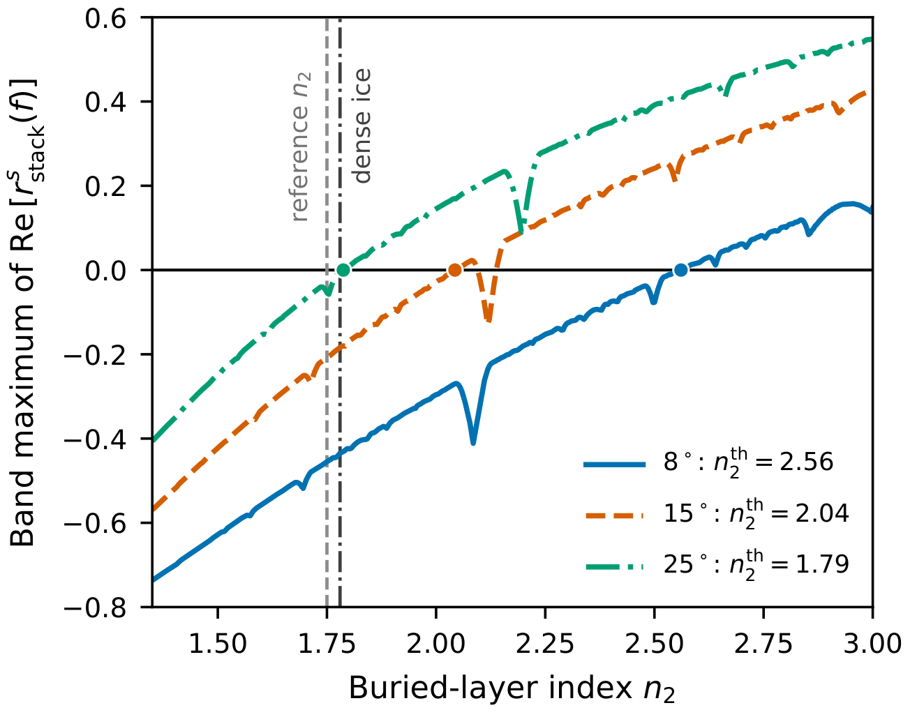
图注：Polarity-reversal threshold for the reference two-layer stack. The vertical axis shows the band maximum of $\mathrm{Re}\!\left[r_{\rm stack}^{\,s}(f)\right]$ over $150$--$850$~MHz, for the same air/$n_1$/$n_2$/$n_s$ geometry as in Fig.~\(\ref{fig:freq}.\) A positive value means that at least one frequency in the band has the sign needed to cancel and then reverse the ordinary single-boundary inversion. The threshold depends strongly on elevation, with first crossings at $n_2\simeq2.56$, $2.04$, and $1.79$ for $8^\circ$, $15^\circ$, and $25^\circ$, respectively. The realistic firn contrasts tested here remain below threshold at all three elevations. Dense ice, $n\simeq1.78$, lies essentially at the $25^\circ$ crossing. Liquid water and brine lie far above the plotted dielectric range, so the high-index thresholds would indicate a qualitatively different material from firn or dense ice. No measured data are used in this calculation.
对应解读：建议重点查看的图表第4项；关键图表逐图导读“图4：双层阈值扫描图”；详细解读中关于参考 s 偏振双层模型的符号翻转阈值。
入选理由：这张图直接给出埋藏层折射率 n2 与反射系数符号翻转之间的阈值关系，并明确标出 8°、15°、25° 下 n2≈2.56、2.04、1.79 的首次 crossing，是日报中最核心的定量结论之一。它还能让读者直观看到现实 firn 对比度远低于翻转阈值，因此比单纯的示意图或单个波形例子更能支撑“分层 firn 不能解释极性翻转”的论断。
来源与置信度：\(arxiv_source\)；high；\(arxiv_source\) / \(stratified_media_sommerfeld_weyl_arxiv.tex\):figure[5]
Fig04
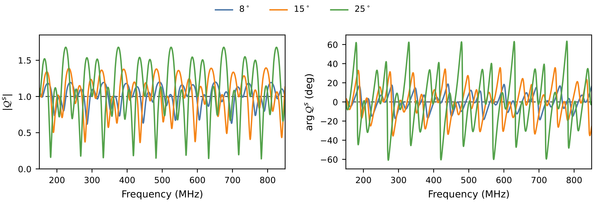
图注：Layering signature of the reference firn stack for the $s$-polarized reflection coefficient at $8^\circ$, $15^\circ$, and $25^\circ$ elevation. Left: amplitude ratio $|\mathcal{Q}|$. Right: additional phase $\arg\mathcal{Q}$ relative to the single-boundary result. The gray dashed horizontal lines mark the no-layer-change references, $|\mathcal{Q}|=1$ and $\arg\mathcal{Q}=0$. The oscillations are Airy multiple-reflection fringes, produced by interference between paths that reflect from different interfaces in the stack. Across $150$--$850$~MHz, $|\mathcal{Q}|$ ranges from $0.14$ to $1.68$, while the largest phase excursion is $63.5^\circ$. The buried layer therefore changes the reflected amplitude and phase but does not invert the polarity. No measured data are used in this calculation.
对应解读：建议重点查看的图表第3项；关键图表逐图导读“图3：分层 firn 的反射系数频率响应”；模型拟合段落中关于频域相位、幅度和未建模振荡残差的讨论。
入选理由：图中展示 150--850 MHz 内 s 偏振分层反射相对于单界面的幅度比和附加相位，并覆盖 8°、15°、25° 三个仰角。它直接回答现实分层是否会跨零点或产生足以翻转时域主峰的相位旋转：幅度和相位会被改变，但不会整体反转极性。该图对理解层状干涉条纹、频谱残差和宽带极性判定最关键。
来源与置信度：\(arxiv_source\)；high；\(arxiv_source\) / \(stratified_media_sommerfeld_weyl_arxiv.tex\):figure[4]
Fig03
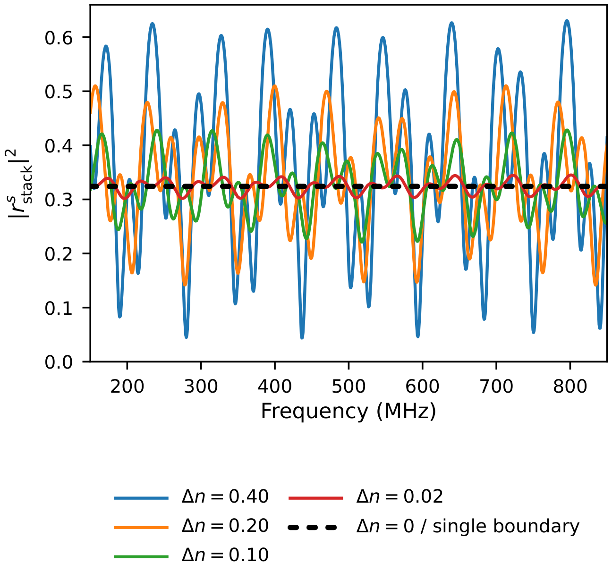
图注：Reduction of the layered calculation to the single-boundary limit at $15^\circ$ elevation. The curves show $|r_{\rm stack}^{\,s}|^2$ for the reference two-layer geometry as the buried-layer contrast $\Delta n$ is reduced. As $\Delta n\to0$, the layering fringes disappear and the result approaches the single-boundary value (dashed). At $\Delta n=0$, the agreement with the validated single-boundary calculation is at machine precision, with a largest fractional deviation of $9.99\times10^{-16}$ across the band. No measured data are used in this calculation.
对应解读：建议重点查看的图表第1项；关键图表逐图导读“图2：单界面退化或基准比较”；详细解读中关于模型在去掉层间折射率对比时退化到单边界球面波结果的验证。
入选理由：这张图是模型正确性的基础基准测试：随着埋藏层折射率对比 Δn→0，分层条纹消失并回到单界面结果；在 Δn=0 时全频带最大相对偏差达到 9.99×10^-16。它直接支撑日报强调的“机器精度退化检验”，可帮助读者区分数值实现误差和真实分层物理效应。
来源与置信度：\(arxiv_source\)；high；\(arxiv_source\) / \(stratified_media_sommerfeld_weyl_arxiv.tex\):figure[3]
Fig07
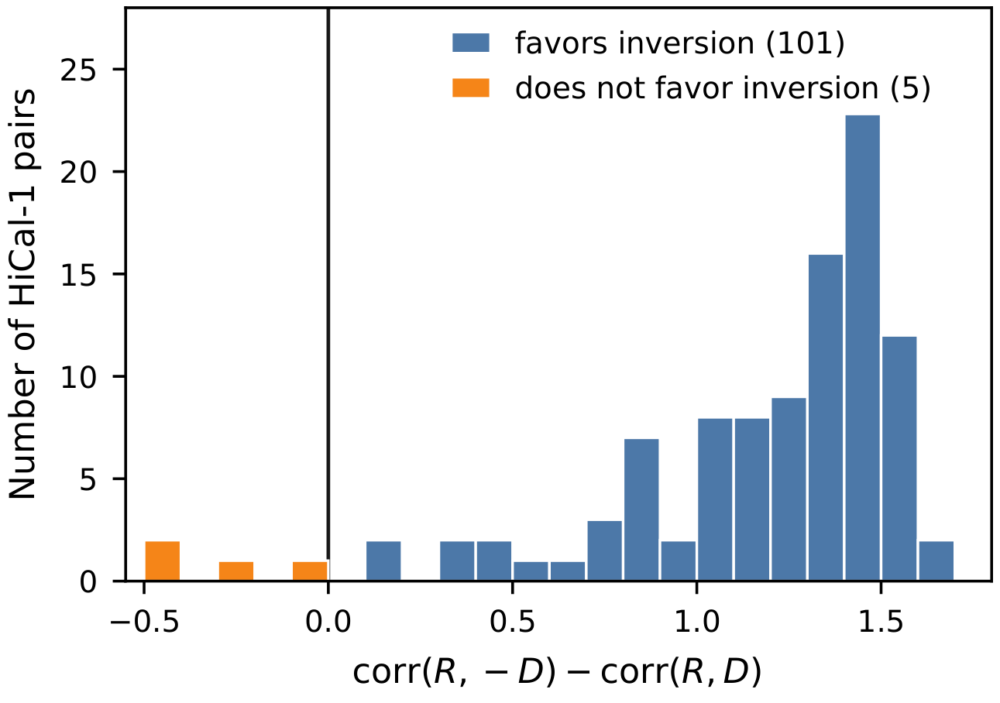
图注：Population-level polarity test across all $106$ matched HiCal-1 direct/reflected pulse pairs, the sample also used in Refs.~\(\cite{DasguptaThesis2020,DasguptaJain2021}.\) For each pair the direct and reflected waveforms are band-limited to $200$--$650$~MHz, aligned at the peak of the cross-correlation envelope, and the signed correlation is read there. Positive values indicate that the reflected pulse is better matched by the inverted direct pulse, $\mathrm{corr}(R,-D)$, than by the direct pulse, $\mathrm{corr}(R,D)$. Blue bars show pairs that favor inversion, while orange bars show the five pairs that do not. The inversion is favored in $101/106$ ($95\%$) of pairs.
对应解读：建议重点查看的图表第6项；关键图表逐图导读“图6：HiCal-1 极性检验图或表”；模型拟合段落中关于用直达脉冲作为源波形参考、检验反射极性的讨论。
入选理由：这张图给出全部 106 对 HiCal-1 直达/反射脉冲的群体统计，而不是单个示例，直接呈现 101/106 对支持预期极性反转、5 对不支持的结果。它最适合支撑日报中关于实测校准样本极性检验、失败事件识别和数据质量诊断的讨论。
来源与置信度：\(arxiv_source\)；high；\(arxiv_source\) / \(stratified_media_sommerfeld_weyl_arxiv.tex\):figure[7]
Fig09
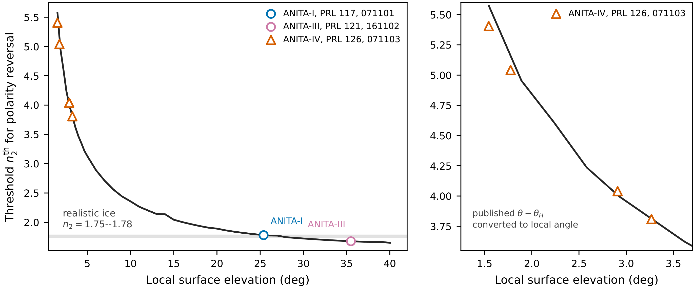
图注：Buried-layer index required for a polarity sign change at the angles of the six ANITA anomalous-polarity events. The black curve is obtained by repeating the reference-stack calculation at each local elevation and finding $n_2^{\rm th}$, the first buried-layer index for which $\max_f \mathrm{Re}\!\left[r_{\rm stack}^{\,s}(f)\right]$ crosses zero over $150$--$850$~MHz. The left panel shows the full local-elevation range. The legend gives the publication in which each event class was reported: ANITA-I PRL~117, 071101~\(\cite{ANITA2016},\) ANITA-III PRL~121, 161102~\(\cite{ANITA2018},\) and ANITA-IV PRL~126, 071103~\(\cite{ANITA2021}.\) The right panel shows the ANITA-IV near-horizon events in more detail. The ANITA-I/III events lie outside this range because their local surface elevations are much larger. The ANITA-IV $\theta-\theta_H$ offsets below the payload radio horizon are converted to local surface elevations using the same spherical geometry as the HiCal benchmark~\(\cite{Prechelt2022}.\) The resulting thresholds are $n_2\simeq3.8$--$5.4$, well above realistic firn and dense-ice indices.
对应解读：详细解读中关于浅层 firn 是否能解释 ANITA anomalous-polarity events 的关键结果；建议重点查看的图表第4项的扩展应用。
入选理由：这张图把双层符号翻转阈值计算推广到六个 ANITA 异常极性事件的实际局地仰角，显示所需 n2≈3.8--5.4，远高于现实 firn 和致密冰。虽然日报的逐图导读主要点名参考双层阈值图，但该图更直接连接论文的高能宇宙线实验动机和 ANITA 事件解释，因此具有较高嵌入价值。
来源与置信度：\(arxiv_source\)；high；\(arxiv_source\) / \(stratified_media_sommerfeld_weyl_arxiv.tex\):figure[9]
Fig01
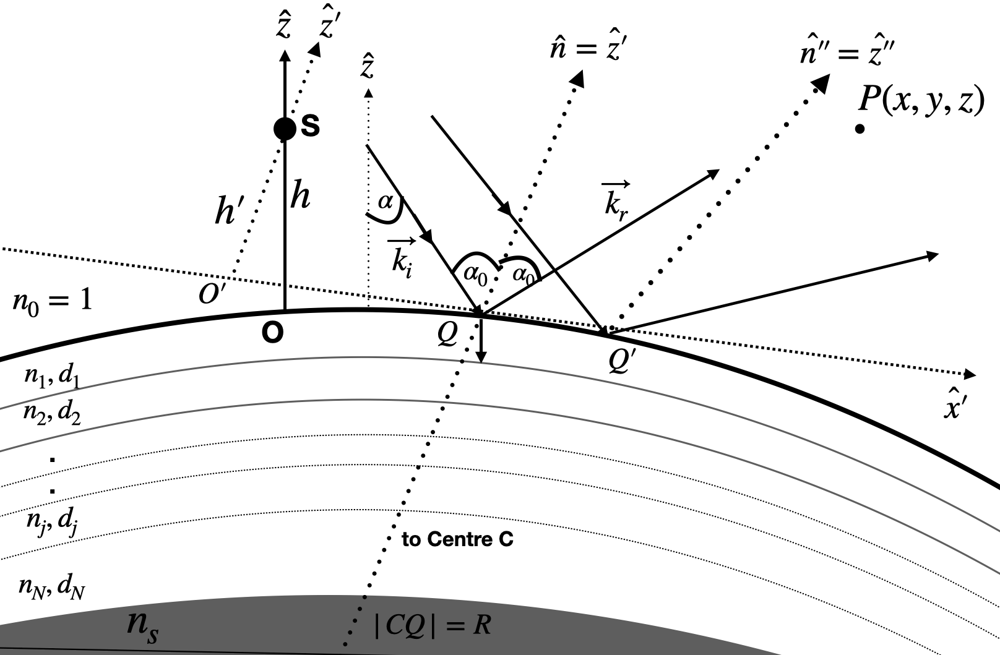
图注：Geometry of the reflection calculation for a spherical boundary, following Fig.~12 of Ref.~\(\cite{Prohira2018}\) with the single air--ice interface replaced by a stratified medium. The spherical surface has center $C$ and radius $R$. A Hertz dipole source is located at $S$, at height $z_0=h$ above the surface point $O$, and the reflected field is evaluated at the observer position $P(x,y,z)$. The spherical wave is expanded by the Sommerfeld--Weyl identity, Eq.~(\ref{eq:weyl}), into plane-wave components represented by their wave-vector directions. In the plane shown, one component has incident wave vector $\vec{k}_i$ at angle $\alpha$ from the downward vertical and intersects the surface at $Q$. The local normal is $\hat{n}=\hat{z}'$, and the local tangent plane defines the incidence angle $\alpha_0$ of Eq.~(\ref{eq:alpha0}). The quantity $h'$ is the perpendicular distance from $S$ to this tangent plane. A different component intersects the surface at $Q'$, where the local normal $\hat{n}''=\hat{z}''$ and tangent plane are different, so its local incidence angle is evaluated separately. Thus the reflected field is described locally by plane waves at each incident point, but not by a single global plane-wave reflection. Beneath the surface are concentric layers, the $j$th with refractive index $n_j$ and thickness $d_j$, above a semi-infinite substrate $n_s$. The transmitted ray into the stack is drawn only at $Q$ for clarity; the same layered response is evaluated at every other incident point, including $Q'$, in the angular integral. Section~\(\ref{sec:formalism}\) treats the single-boundary limit $N=0$, while Sec.~\(\ref{sec:layered}\) treats the general stratified case. The azimuth $\beta$, not shown here, rotates the plane of incidence about the local normal.
对应解读：关键图表逐图导读“图1：几何示意或模型框架图”；详细解读中关于 Sommerfeld--Weyl 球面波分解、局地切平面和分层介质特征矩阵的说明。
入选理由：这张图清楚标出源、接收机、球面边界、局地法向、切平面、不同入射点的局地入射角以及同心分层结构，正好对应日报提醒读者不要把分层误解为单一全球平面波反射的部分。它的科学诊断性不如阈值和频率响应图，但对理解整个正演模型的几何假设很重要。
来源与置信度：\(arxiv_source\)；high；\(arxiv_source\) / \(stratified_media_sommerfeld_weyl_arxiv.tex\):figure[1]
强相关工作
这篇工作与 ANITA 异常极性事件、HiCal 校准、冰面反射建模和 Askaryan 无线电探测文献直接相关。相似工作通常会检索关键词 “ANITA anomalous polarity events radio reflection firn”、 “HiCal ANITA reflected pulses”、 “Sommerfeld Weyl spherical wave reflection layered media”、 “radio detection ultra high energy neutrinos ice reflection”。同一事件/同一类源层面，应把本文放在 ANITA 候选事件解释链中阅读：它约束的是“浅层 firn 传播效应”这一类解释，而不是直接排除所有新物理或背景解释。
基础理论方面，本文连接了经典电磁边界条件、Fresnel 反射、Sommerfeld--Weyl 球面波展开和薄膜/分层介质特征矩阵法。相反或存在张力的观点主要是：某些浅层结构、冰面复杂性或传播系统误差是否足以解释异常极性。本文的结果倾向于保守结论，即现实 firn 对比不足以产生所需极性翻转；但它也承认分层会影响幅度，因此事件级分析仍需纳入这类系统误差。
同一事件 / 同类源线索：
- https://arxiv.org/abs/2608.15989
- https://arxiv.org/search/?query=ANITA+anomalous+polarity+events&searchtype=all
- https://arxiv.org/search/?query=HiCal+ANITA+reflected+pulses&searchtype=all
相似工作：
- https://arxiv.org/search/?query=ANITA+radio+reflection+firn&searchtype=all
- https://arxiv.org/search/?query=HiCal+ANITA+calibration+radio+reflection&searchtype=all
基础理论 / 方法工作：
- https://en.wikipedia.org/wiki/Fresnel_equations
- https://en.wikipedia.org/wiki/Transfer-matrix_method_(optics)
相反观点 / 张力线索：
4. A Population View of the Cosmic-Ray Knee: The Role of Variance in Supernova Maximum Rigidities
- 来源：arXiv / astro-ph.HE
- 链接：https://arxiv.org/abs/2608.15892v1
- 作者：Carmelo Evoli
- 评分：novelty 8/10，importance 8/10，relevance 9/10，final 9.35/10
- 推荐理由：提出宇宙线膝区可由SNR最大刚度的源际方差形成，并与质子谱拟合和SNR物理联系；直接针对Galactic cosmic-ray knee，相关性和重要性高。
中文题目：从总体分布看宇宙线膝区：超新星最大刚度离散度的作用
做了什么：这篇论文讨论银河宇宙线质子谱在膝区附近为什么不是一个尖锐折断，而是一个宽而连续弯曲的结构。作者把每个超新星遗迹源的单个谱截止看作很陡，但允许不同源的最大刚度 \(R_{\max}\) 或最大能量 \(E_{\max}\) 有分布；总体平均后，观测谱等于传播后的幂律谱乘以“还有多少源能加速到该能量”的生存函数。对数正态的 \(E_{\max}\) 分布自然给出平滑膝区，而带幂律尾的分布会给出近似常数的膝后变陡。作者进一步把所需的 \(E_{\max}\) 宽度同超新星爆炸能量和环境密度的离散度联系起来，并用两成分对数正态截止模型拟合质子谱，得到 PeV 成分需要 \(\sigma_{\log_{10}E_{\max}}\simeq 0.24\)。这个宽度小于全银河超新星遗迹总体预期的离散度，暗示真正贡献 PeV 膝区的源可能是一个更均一的子类，而不是所有超新星遗迹的简单总和。
为什么重要：宇宙线膝区长期被用来反推银河加速器的极限能力。传统说法常把膝区解释成单类源达到共同最大刚度后的截止，但观测到的谱形很宽，难以由统一且尖锐的 \(R_{\max}\) 直接解释。本文的重要性在于把“膝区的宽度”从单个源的微观截止形状，转移到源族群最大能量的统计分布上；这让膝区成为约束超新星遗迹总体差异、而不只是约束平均加速效率的工具。
理论 / 观测 / 仪器方法价值：理论上，论文给出一个很简洁的总体平均表达：单源 sharp cutoff 加上 \(E_{\max}\) 分布会把谱形改写成幂律乘生存概率。观测上，它提供了用质子谱曲率测量 \(E_{\max}\) 离散度的办法。方法上，它把宇宙线源建模从“典型源”推进到“源族群统计”，也提醒拟合膝区时不能把截止平滑参数直接等同于单源加速物理。
为什么应该关注：如果你关心超新星遗迹是否真能解释银河 PeV 宇宙线，这篇文章值得看，因为它把一个经常被模糊处理的问题量化了：不是“某个遗迹能不能到 PeV”，而是“有多少遗迹能到 PeV、它们的 \(E_{\max}\) 分布有多宽”。结论还指出，若拟合所需宽度比全体超新星遗迹预期更窄，那么 PeVatron 可能不是普通遗迹的全样本，而是由爆炸能量、环境、磁场放大条件更接近的一小群源主导。
展开详细解读：文章讲解、背景、理论、重点章节、图表与相关工作
文章详细讲解
科学问题：银河宇宙线能谱在 \(\sim\mathrm{PeV}\) 附近出现膝区，谱指数从较硬逐渐变软，但这个转折不是仪器分辨率意义上的尖角，而是跨越一段能区的连续弯曲。若每个超新星遗迹都有几乎相同的最大刚度 \(R_{\max}\)，且单源谱在 \(R_{\max}\) 附近迅速截止，那么总体谱通常会过于尖锐。本文要回答的是：是否可以在不假设单源截止很平滑的情况下，仅靠不同超新星遗迹最大能量的离散度，产生观测上宽而平滑的膝区。
作者怎么做：论文从一个理想化但很有诊断力的模型出发。每个源注入或传播后的谱在低于自身 \(E_{\max}\) 时近似为同一幂律，高于 \(E_{\max}\) 时突然耗尽；但 \(E_{\max}\) 在源与源之间服从某种概率分布。对源总体取平均后，能量 \(E\) 处仍有贡献的源比例就是 \(P(E_{\max}>E)\)，即 cutoff 分布的生存函数。因此，总体谱的弯曲不需要来自单源的渐进截止，而可来自源族群的逐渐耗尽。作者分别讨论对数正态分布和带幂律尾分布，并把对数正态宽度同超新星爆炸能量、环境密度等物理量的散布联系起来。
关键结果：对数正态 \(E_{\max}\) 分布会让谱指数随 \(\log E\) 连续变化，给出自然的圆滑膝区；而若 \(E_{\max}\) 分布在高端具有幂律尾，则膝后变陡趋向近似常数。作者用两成分 lognormal cutoff 模型拟合测得的质子谱，其中 PeV 成分要求 \(\sigma_{\log_{10}E_{\max}}\simeq 0.24\)。这个数值意味着 \(E_{\max}\) 的一倍标准差约为因子 \(10^{0.24}\)，即不到 \(2\) 倍的离散度；相比之下，若把全体银河超新星遗迹的爆炸能量、环境密度和演化阶段都纳入，预期的 \(E_{\max}\) 分布往往更宽。
局限和下一步：模型的优点是清楚、可解释，但也因此牺牲了若干复杂性。它没有完整追踪每个遗迹的时间演化逃逸谱、三维空间分布、近邻源随机性、不同核种混合、探测器能标系统误差，以及传播参数在膝区附近可能的能量依赖变化。下一步最自然的是把这种 population survival-function 框架嵌入多核种全局拟合，同时联合空气簇射组成数据、直接探测质子谱、\(\gamma\) 射线 PeVatron 候选体统计和超新星遗迹环境样本，检验“均一 PeV 子群”的物理身份。
关键结果是怎么做出来的
本文最核心的证据链不是发现一个新源，而是证明一种谱形生成机制在数学上和数据拟合上都可行。作者先选择了质子能谱作为主要拟合对象，因为质子膝区相对直接地对应源最大刚度分布；在刚度标度下，核种 \(Z\) 的截止会出现在 \(E\simeq ZR_{\max}\)，但若一开始就拟合全粒子谱，成分退化会掩盖 \(E_{\max}\) 分布本身的作用。样本层面，论文使用的是已发表的质子谱测量点，而不是逐事件空气簇射重建；因此统计量主要来自谱点及其误差，而非原始事件计数。
统计模型的关键是两成分谱：一个较低能成分负责连接亚膝区质子谱，另一个 PeV 成分带有对数正态总体截止。每个成分在未截止时近似为幂律，截止因子由 \(E_{\max}\) 分布的生存函数给出。作者调节归一化、谱指数、特征截止能量和宽度，尤其关注 PeV 成分的 \(\sigma_{\log_{10}E_{\max}}\)。模型比较的物理含义是：若 \(\sigma_{\log_{10}E_{\max}}\) 太小，谱在膝区过尖；若太大，弯曲过宽且会提前压低低能端或抬高高能尾。
显著性或置信度的解读应看拟合残差和允许区间，而不是只看最佳拟合数值。文中给出的 \(\sigma_{\log_{10}E_{\max}}\simeq 0.24\) 是对 PeV 成分曲率的直接量化；读者应检查对应图中数据点相对模型线的系统性偏离，尤其是在膝区前后各约一个 decade 的能量范围内。如果该范围内存在不同实验间能标不一致，那么最佳宽度会部分吸收这些系统差异。
支撑结论的图表应包括三类：第一，理论谱形图，展示不同 \(E_{\max}\) 分布如何改变膝区曲率；第二，超新星遗迹物理量离散度传播到 \(E_{\max}\) 宽度的估算图或表；第三，质子谱两成分拟合图及残差。最关键的稳健性检查是改变 cutoff 分布形式、改变低能成分建模、允许能标整体漂移后，PeV 成分是否仍需要相对窄的 \(\sigma_{\log_{10}E_{\max}}\)。
主要系统误差来自观测和理论两端。观测端包括空气簇射强子相互作用模型、质子与轻核分离、能量刻度、不同实验归一化差异；理论端包括单源谱是否真的 sharp cutoff、源年龄和逃逸时间是否导致额外平滑、传播系数是否在膝区有新结构。本文结论最强的部分是“总体离散度可以自然制造膝区曲率”；相对依赖模型的部分是“所需宽度小于全银河遗迹总体，因此 PeV 源必须是均一子群”。
展开背景、理论、公式、模型、章节和图表导读
背景知识
研究对象是银河宇宙线能谱的膝区，通常指全粒子谱在 \(E\sim 3\,\mathrm{PeV}\) 附近由谱指数约 \(2.7\) 变为约 \(3.0\) 或更软的结构。若按刚度标度，质子膝应在较低能端出现，重核膝按 \(Z\) 倍能量依次出现。超新星遗迹长期被认为是银河宇宙线主源，因为其总机械能预算、激波加速机制和银河宇宙线功率需求大致匹配。
历史问题在于，能量预算匹配不等于能加速到膝区。标准弥散激波加速要求强激波、足够长的加速时间、足够强的磁场放大和合适的逃逸条件，才能让质子达到 \(\mathrm{PeV}\)。许多已观测超新星遗迹的 \(\gamma\) 射线谱并没有显示清楚的 PeV 质子证据，这引出了“普通遗迹能否是 PeVatron”的长期争论。
观测背景也很复杂。直接探测器能精确测量电荷和能量，但受限于面积和曝光，在 \(\mathrm{TeV}\) 到 \(\mathrm{PeV}\) 上端统计有限；空气簇射阵列覆盖高能区，但依赖大气簇射模拟和强子相互作用模型来反推初级能量与质量。膝区的“平滑程度”因此既包含真实天体物理信息，也可能混有能量分辨率、成分分离和实验间能标差异。
为什么现在值得重看？一方面，LHAASO、HAWC、Tibet AS\(\gamma\) 等高能 \(\gamma\) 射线观测正在扩大 PeVatron 候选体样本；另一方面，CALET、DAMPE、ISS-CREAM、NUCLEON 等直接测量在 \(\mathrm{TeV}\) 区间揭示了质子和核种谱的硬化、软化与非单一幂律特征。简单的“单一源类加单一截止”越来越难同时解释所有谱形细节。
该领域常见误区之一是把膝区宽度直接解释为单个源的加速截止宽度。本文强调，即使每个源都是非常尖锐的 cutoff，只要 \(E_{\max}\) 在源族群中有分布，总体谱也会变得平滑。另一个误区是把“超新星遗迹可以解释宇宙线功率”误读为“所有超新星遗迹都应贡献 PeV 质子”；实际上 PeV 加速可能只发生在早期、少数高能爆炸或特殊环境中。
基础理论 / 方法脉络
基础物理图像是弥散激波加速。带电粒子在超新星遗迹激波两侧来回散射，每次跨越激波获得小比例能量增益，经过许多循环形成近似幂律的动量或能量谱。最大能量由加速时间、逃逸尺度、磁场强度、激波速度和年龄共同限制；因此不同遗迹不必有相同的 \(E_{\max}\)。
传播会进一步改变源谱。若源注入谱近似为 \(Q(E)\propto E^{-\alpha}\)，银河扩散逃逸时间近似为 \(\tau_{\rm esc}(E)\propto E^{-\delta}\)，那么本地观测谱常近似为 \(\phi(E)\propto E^{-(\alpha+\delta)}\)。本文的重点不是重新拟合 \(\alpha\) 和 \(\delta\)，而是在这个传播后幂律之上加入源族群最大能量分布造成的 cutoff survival factor。
论文的关键假设可以概括为：单个源在 \(E
对数正态分布很自然，因为最大能量往往是多个正值物理量的乘积幂律组合，例如爆炸能量、环境密度、磁场放大效率和激波速度。若这些量在对数空间近似有散布，则 \(\log E_{\max}\) 也会近似正态。对数正态宽度 \(\sigma_{\log_{10}E_{\max}}\) 直接控制膝区跨越多少 decade。
常见退化包括：\(E_{\max}\) 分布宽度与单源 cutoff 平滑度退化，谱指数与 cutoff 位置退化，轻核污染与质子谱软化退化，能量刻度系统误差与膝区位置退化。本文通过强调 sharp individual cutoff 的极限，把总体方差效应单独抽出来，但真实数据分析中这些退化都需要联合处理。
公式与推导
第一步从传播后单源或同类源的基准谱写起。若忽略 cutoff，观测到的微分通量可近似为
其中 \(A\) 是归一化，\(E_0\) 是参考能量，\(\gamma\simeq \alpha+\delta\) 包含源注入谱指数 \(\alpha\) 和扩散传播贡献 \(\delta\)。这一式子表示本文讨论的膝区曲率是在已传播幂律背景上叠加的效应。
第二步，把单个源的尖锐截止写成阶跃函数。若某个源最大能量为 \(E_{\max}\)，则
其中 \(\Theta\) 是 Heaviside 函数。这个极限故意把单源 cutoff 设得最尖，从而检验总体方差是否足以制造平滑膝区。
第三步，对源族群的 \(E_{\max}\) 分布取平均。若概率密度为 \(p(E_{\max})\)，总体谱为
其中
是生存函数，即仍能加速到能量 \(E\) 以上的源所占比例。这是本文的核心方程。
第四步，若 \(E_{\max}\) 服从对数正态分布，令 \(x=\log_{10}E_{\max}\)、均值为 \(\mu\)、标准差为 \(\sigma\)，则
相应生存函数为
这里 \(\mu\) 决定膝区中心位置，\(\sigma\) 决定弯曲宽度。
第五步，用有效谱指数诊断膝区变陡。定义
当 \(S(E)\) 随能量下降时，第二项使 \(\Gamma_{\rm eff}\) 大于 \(\gamma\)，即谱变软；对数正态的 \(S(E)\) 会让这种变软连续发生。
第六步，若高端 \(E_{\max}\) 分布近似为幂律尾 \(p(E_{\max})\propto E_{\max}^{-1-\eta}\)，则
从而
这解释了为什么幂律尾会导致膝后近似常数的额外变陡 \(\Delta\gamma\simeq \eta\)。
第七步，把最大能量同超新星遗迹物理量联系起来，可写成一般标度
其中 \(\mathcal{E}_{\rm SN}\) 是爆炸能量，\(n\) 是环境密度，\(\xi_B\) 表示磁场放大或相关效率参数，\(a,b,c\) 是模型依赖指数。取对数后方差近似传播为
这一步说明本文如何把拟合得到的 \(\sigma_{\log_{10}E_{\max}}\) 翻译成源物理的均一性要求。
第八步，实际谱点拟合可用近似高斯似然表示为
其中 \(\phi_i\) 和 \(\sigma_i\) 是第 \(i\) 个谱点及误差，\(\boldsymbol{\theta}\) 包括归一化、谱指数、\(\mu\) 和 \(\sigma\)。若考虑能标系统误差，可引入 nuisance 参数 \(\epsilon_E\)，用 \(E_i\to E_i(1+\epsilon_E)\) 检查 \(\sigma\) 的稳健性。
模型拟合 / 应用方法
本文的拟合对象是质子能谱的形状，尤其是膝区附近的连续曲率。模型通常包括至少一个低能背景成分和一个 PeV 成分，每个成分有归一化、谱指数、特征 \(E_{\max}\) 位置和 cutoff 分布宽度。PeV 成分的 \(\sigma_{\log_{10}E_{\max}}\) 是物理解释的焦点，因为它被用来反推 PeV-capable 超新星遗迹子群的均一程度。
似然层面，如果使用发表谱点，常见做法是对通量点采用高斯 \(\chi^2\) 或在对数通量空间拟合。若原始事件计数不可用，就不能严格重建 Poisson likelihood，只能依赖实验给出的统计与系统误差。更严谨的全局拟合应加入实验间能标偏移、归一化偏移和相关系统误差协方差，否则膝区宽度可能被不同数据集间的张力污染。
参数退化很重要。谱指数 \(\gamma\) 变软可以模拟一部分 cutoff 造成的下降；\(E_{\max}\) 均值 \(\mu\) 与宽度 \(\sigma\) 也相关，因为更高的中心能量配合更宽分布可在观测能区产生类似弯曲。若加入第二成分，两个成分的交叉能量和相对归一化会影响膝区前的曲率，从而改变对 \(\sigma_{\log_{10}E_{\max}}\) 的估计。
残差诊断应集中在三处：膝区前是否系统低估或高估，膝区中心是否转折过尖，膝后高能尾是否过硬或过软。如果模型需要在某一实验数据集上很好、但在另一实验同能区系统偏离，那么最佳拟合宽度不应被过度物理解读。读者还应关注拟合是否只报告最佳值，还是给出了置信区间、profile likelihood 或 posterior corner plot。
模型可能失败的情形包括：真实单源 cutoff 本身很平滑且与总体方差不可分；近邻少数源导致非平稳局域谱，不满足连续总体平均；传播在 PeV 附近发生变化，例如扩散系数标度改变；或者质子样本中轻核污染随能量变化。实际应用中，这个框架最适合作为膝区曲率的低维参数化，再与多信使和多核种数据联合，而不是单独作为超新星遗迹 PeVatron 问题的最终判决。
重点章节 / 结果段落怎么读
数据/样本部分应先看作者采用了哪些质子谱数据、覆盖的能量范围、是否混合直接探测和空气簇射结果，以及误差如何处理。这里决定了 \(\sigma_{\log_{10}E_{\max}}\simeq 0.24\) 是由哪些能区和哪些实验真正约束的。
方法部分的核心是 population-averaged cutoff 推导。读者应确认作者如何从单源 sharp cutoff 得到总体谱 \(\phi_0(E)S(E)\)，以及不同 \(E_{\max}\) 分布的生存函数如何改变谱指数。这个部分是全文最可复用的理论结果。
物理连接部分讨论 \(E_{\max}\) 与超新星遗迹参数的标度关系。重点不是某个标度指数的精确值，而是方差传播：爆炸能量、环境密度和磁场相关参数的散布如何映射到 \(\sigma_{\log E_{\max}}\)。读者应特别看作者为何认为爆炸能量离散度是主要来源。
主结果部分是两成分 lognormal-cutoff 拟合。应关注 PeV 成分的最佳宽度、特征能量、谱指数，以及与数据点的残差。这里直接支撑“PeV 成分来自较均一子群”的结论。
讨论和稳健性部分要看作者如何处理替代解释，例如单源 cutoff 平滑、幂律尾分布、全体遗迹总体方差过大、观测系统误差和成分不确定性。若附录中有不同分布或不同数据选择的测试，也应优先阅读。
建议重点查看的图表
-
不同 \(E_{\max}\) 分布产生的总体谱形图：看横轴 \(E\) 或刚度，纵轴通常为 \(E^\gamma\phi(E)\) 或通量；重点比较 sharp universal cutoff、对数正态分布和幂律尾分布的膝区宽度。
-
有效谱指数 \(\Gamma_{\rm eff}(E)\) 或局部斜率图：看对数正态情形下斜率是否连续增加，以及幂律尾情形是否给出近似平台式变陡。
-
\(E_{\max}\) 方差来源图或表：检查爆炸能量 \(\mathcal{E}_{\rm SN}\)、环境密度 \(n\)、磁场放大参数等对 \(\sigma_{\log E_{\max}}\) 的贡献，尤其看是否有协方差假设。
-
质子谱两成分拟合图：看数据点、总模型线、低能成分和 PeV 成分分别如何叠加；重点是膝区前后模型是否系统偏离。
-
拟合残差或 \(\chi^2\) 贡献图：看是否某几个实验或某个能区主导了 \(\sigma_{\log_{10}E_{\max}}\) 的约束。
-
参数置信区间或轮廓似然图：看 \(\sigma_{\log_{10}E_{\max}}\) 与 cutoff 中心能量、谱指数、成分归一化之间的相关性。
-
替代分布比较图：若文中展示 lognormal 与 power-law tail 的比较，应看高能尾是否可区分，以及数据是否真的要求对数正态而非其他平滑函数。
关键图表逐图导读
图 1：建议把它作为理论机制图来读。横轴通常应是能量 \(E\) 或最大能量归一化后的 \(E/E_*\)，纵轴可能是乘幂律补偿后的通量。数据点若不存在，模型线就是重点：统一 sharp cutoff 会显示突兀下降；对数正态 \(E_{\max}\) 分布会显示圆滑弯曲；幂律尾会在高能端形成较稳定的斜率。读图陷阱是不要把总体曲率误认为单个源的 cutoff 形状。
图 2：若展示生存函数 \(S(E)\) 或有效谱指数 \(\Gamma_{\rm eff}(E)\)，横轴应为 \(\log E\)，纵轴为剩余源比例或局部斜率。重点看 \(\sigma\) 增大时膝区如何变宽、峰值变陡如何降低。读图时应区分 \(S(E)\) 的下降速度和最终通量下降速度，因为后者还乘有基准幂律。
图 3：若是超新星遗迹参数到 \(E_{\max}\) 方差的映射图，横轴可能是爆炸能量或环境密度的散布，纵轴是 \(\sigma_{\log E_{\max}}\)。模型线之间的差别代表不同加速标度假设。主要结论应是全体遗迹自然产生的宽度可能大于拟合 PeV 成分需要的 \(0.24\) dex；陷阱是这些线依赖标度指数和参数独立性假设。
图 4：质子谱拟合图最关键。横轴为能量，纵轴为通量或乘 \(E^p\) 补偿后的通量；数据点来自不同实验，模型线分为总谱和两个成分。读者应看 PeV 成分在哪个能区开始主导，低能成分是否被人为压低，以及膝后数据是否真的需要某个高能尾。
图 5：若有残差图或置信区间图，应重点看 \(\sigma_{\log_{10}E_{\max}}\) 的不确定范围。横轴可能为 \(\sigma\)，纵轴为 \(\Delta\chi^2\)，或二维图中另一轴为 cutoff 中心。若 \(\Delta\chi^2\) 曲线很平，说明宽度约束弱；若二维等高线倾斜明显，说明宽度与中心能量或谱指数强退化。
论文原图 / 可嵌入图片
Fig03
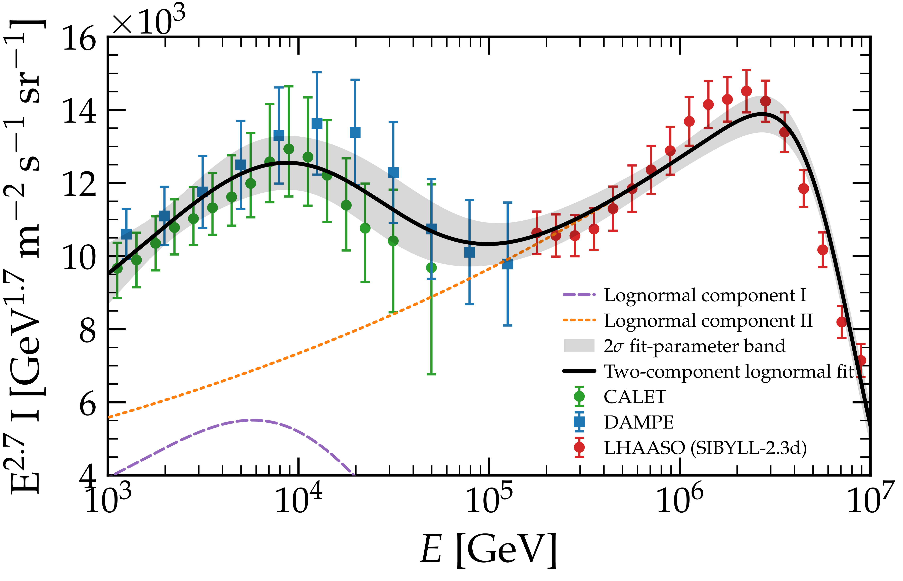
图注：Two-component lognormal-cutoff fit to the measured proton spectrum. The data include low-energy direct measurements from DAMPE~\(\citep{DAMPE:2019gys}\) and CALET~\(\citep{CALET:2019bmh}\) and the LHAASO~\(\citep{LHAASO:2025byy}\) proton spectrum in the knee region, shown after multiplication by $E^{2.7}$. The two source populations are shown separately, while their sum gives the total best-fit spectrum. The shaded band represents the propagated $2\sigma$ uncertainty from the fitted parameters.
对应解读：对应“建议重点查看的图表”第4项“质子谱两成分拟合图”、关键图表逐图导读中的“图4”，以及“模型拟合”段落关于 PeV 成分、低能成分、总模型线和 2σ 不确定带的讨论。
入选理由：这是全文实证结论的核心图，直接展示 DAMPE、CALET 与 LHAASO 质子谱数据、两成分 lognormal-cutoff 模型、总谱以及拟合参数传播得到的 2σ 阴影带。日报重点讨论的 PeV 成分所需 σ_log10Emax≈0.24、膝区曲率是否被模型系统性偏离、低能与 PeV 成分如何交叉，都主要依赖这张图判断。
来源与置信度：\(arxiv_source\)；high；\(arxiv_source\) / main.tex:figure[3]
Fig02
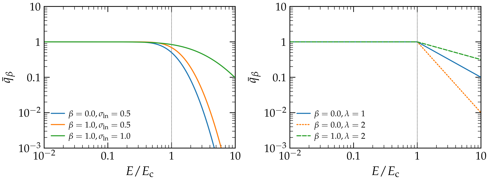
图注：Population-averaged spectra for sources with sharp individual cutoffs and a source weight $W(E_{\max})\propto E_{\max}^{\beta}$, shown in arbitrary normalization as a function of $E/E_{\rm c}$. Left: lognormal distribution of cutoff energies. Right: power-law high-energy tail of the cutoff distribution. The comparison illustrates how a finite-width distribution produces intrinsic curvature, while a power-law tail produces an approximately constant post-knee steepening.
对应解读：对应“建议重点查看的图表”第1、2、7项，以及关键图表逐图导读中的“图1/图2”理论机制解读：不同 \(E_max\) 分布、lognormal 与 power-law tail、总体谱曲率和膝后近似恒定变陡。
入选理由：这张图最直接支撑论文的核心机制：单个源具有 sharp cutoff，但总体谱由 \(E_max\) 分布的生存函数塑形。左右两栏分别比较对数正态 cutoff 分布和幂律高能尾，正好对应日报中关于圆滑膝区、连续曲率、幂律尾导致近似恒定后膝变陡，以及替代分布可区分性的解读。
来源与置信度：\(arxiv_source\)；high；\(arxiv_source\) / main.tex:figure[2]
Fig01
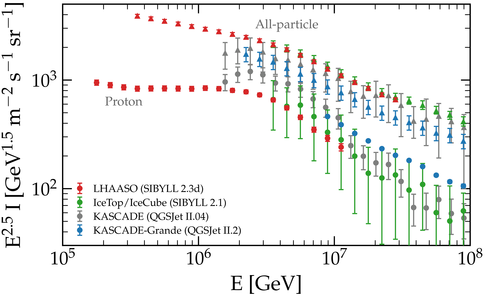
图注：Cosmic-ray spectra in the knee region. The all-particle spectrum and the proton spectrum are shown after multiplication by $E^{2.5}$, comparing recent LHAASO measurements~\(\citep{LHAASO:2024knt,LHAASO:2025byy}\) with earlier determinations from IceTop/IceCube~\(\citep{IceCube:2019hmk},\) KASCADE~\(\citep{Kuznetsov:2023pvo},\) and KASCADE-Grande~\(\citep{Grande:2009dqq},\) as indicated in the legend.
对应解读：对应日报背景部分和“建议重点查看的图表”中关于膝区观测谱形、质子谱与 all-particle 谱对比的上下文说明。
入选理由：这张图不是模型拟合或参数约束图，但提供了膝区观测事实的直接背景：LHAASO、IceTop/IceCube、KASCADE 与 KASCADE-Grande 的 all-particle 和 proton 谱在 \(E^2.5\) 补偿后的形状。它有助于读者理解为什么需要解释宽而平滑的 knee，但相较 Fig03 和 Fig02，对论文主要参数结论的支撑较间接。
来源与置信度：\(arxiv_source\)；high；\(arxiv_source\) / main.tex:figure[1]
强相关工作
这篇工作与宇宙线膝区的传统解释直接相关，包括刚度依赖 cutoff、传播泄漏变化、少数近邻源贡献、以及超新星遗迹达到 PeV 的困难。相似研究常检索关键词包括 “cosmic-ray knee rigidity dependent cutoff supernova remnants”, “population of Galactic cosmic-ray sources maximum rigidity”, “PeVatron supernova remnant maximum energy distribution”, “lognormal cutoff cosmic ray spectrum”。
基础理论方面，它建立在弥散激波加速、银河扩散传播和最大能量 Hillas 条件之上，但其新意在于把 \(E_{\max}\) 当作源族群随机变量。相反或竞争观点包括：膝区主要由传播机制变化造成、由局域源随机性造成、由不同核种叠加造成，或由源类转换造成。检索时可使用 “diffusion change cosmic ray knee”, “nearby source cosmic ray knee”, “KASCADE-Grande composition knee”, “LHAASO cosmic ray knee composition”。
同一事件 / 同类源线索：
相似工作：
基础理论 / 方法工作：
相反观点 / 张力线索：
（未提供）
5. Polarization of GRB standard X-ray afterglow and its detection prospects by eXTP
- 来源：arXiv / astro-ph.HE
- 链接：https://arxiv.org/abs/2608.15503v1
- 作者：Jun-Xi Lin, Zelin Ren, Mi-Xiang Lan, Ming-Yu Ge, Zi-Gao Dai, Xue-Feng Wu, Shuang-Nan Zhang
- 评分：novelty 7/10，importance 7/10，relevance 10/10，final 9.05/10
- 推荐理由：系统评估标准GRB X射线余辉偏振及eXTP/PFA探测前景，包含参数敏感性和蒙特卡洛事件率；GRB和高能仪器预测高度相关，值得阅读。
中文题目：标准伽马暴 X 射线余辉的偏振及其被 eXTP 探测的前景
做了什么：这篇文章模拟了“标准”伽马暴余辉在 \(2\)--\(8\,\mathrm{keV}\) X 射线波段的线偏振演化，并评估 eXTP 卫星上 PFA 偏振聚焦阵列能看到多少这类信号。作者先用 Morris 全局敏感性分析找出影响偏振探测率的关键物理参数，再用带有经验相关性的蒙特卡罗样本生成 \(10^{3}\) 个余辉，并用 Fermi--Swift 样本的 \(10\,\mathrm{keV}\) 通量分布检验模拟是否合理。主要结论是：如果磁场是限制在激波平面内的随机磁场，标准 X 射线余辉的偏振本来就弱，eXTP/PFA 的总体可探测偏振事件率不超过约 \(1.5\%\)；最有希望的时段在喷流破裂附近，因为这时偏振度达到峰值。极端明亮事件如 GRB 221009A 则不同，其偏振度可在 \(10^{3}\)--\(10^{6}\,\mathrm{s}\) 内长期高于最小可探测偏振度。
为什么重要：GRB 余辉偏振是少数能直接约束喷流几何、磁场有序程度和观测视角的诊断量之一。本文的重要性在于它不是只展示几个理想模型光变，而是把余辉物理参数分布、经验相关性、仪器最小可探测偏振度和真实 Swift/Fermi 通量分布放在一起，给出 eXTP/PFA 对标准余辉偏振的现实探测率。这个结果提醒我们：未来 X 射线偏振仪的 GRB 科学产出很可能由少数亮暴和喷流破裂时段主导，而不是由大量普通余辉平均贡献。
理论 / 观测 / 仪器方法价值：对理论而言，文章把随机激波面磁场模型下的偏振预言转化为可观测事件率，能检验标准外激波图像中磁场构型是否足够解释低偏振。对观测而言，它给出何时启动 eXTP/PFA 跟进最划算：尽量覆盖晚期喷流破裂附近，同时对极亮暴进行长期监测。对仪器和任务规划而言，本文把通量、曝光时间、源计数、背景和最小可探测偏振度联系起来，可用于制定 GRB 触发后偏振观测策略。
为什么应该关注：如果你关心 GRB 喷流是否携带有序磁场、喷流开角如何分布、X 射线余辉中是否存在额外辐射成分，这篇文章给了一个很实际的答案：标准余辉的 X 射线偏振很难，但不是完全没有窗口。它也说明未来偏振观测不应只追求“有没有探测”，还要把非探测转化为对磁场随机性、喷流结构和观测角分布的统计约束。对于准备使用 eXTP、IXPE 类数据的研究者，这是一篇值得作为观测可行性和样本选择基准来读的工作。
展开详细解读：文章讲解、背景、理论、重点章节、图表与相关工作
文章详细讲解
科学问题：GRB 余辉的同步辐射天然可以产生线偏振，但实际偏振度取决于磁场结构、喷流几何和观测视角。若磁场在激波面内是随机的，局部同步辐射虽可高度偏振，但整个可见区域的不同偏振方向会相互抵消，导致总偏振度偏低。本文关心的不是单个理想化余辉能否偏振，而是“标准 X 射线余辉群体”在 eXTP/PFA 这样的未来偏振仪上有多大概率被探测到。
作者怎么做：文章先进行 Morris 全局敏感性分析，识别哪些输入参数最影响 X 射线偏振探测前景。随后作者为主要参数指定有观测动机的概率分布，尤其将各向同性等效能量 \(E_{\mathrm{iso}}\)、喷流半开角 \(\theta_{\mathrm{j}}\) 和初始洛伦兹因子 \(\Gamma_{0}\) 用 Gaussian copula 联合抽样，以同时复现 Ghirlanda 关系和 Liang 关系。这一步很关键，因为若独立抽样这些量，会破坏 GRB 样本中已知的能量--开角--洛伦兹因子相关性，从而错误估计喷流破裂时间和通量分布。
关键结果：作者生成 \(10^{3}\) 个标准余辉，并把模拟的 \(10\,\mathrm{keV}\) 通量分布与筛选后的 Fermi--Swift 样本比较。在 \(10^{3}\,\mathrm{s}\) 和 \(10^{4}\,\mathrm{s}\) 两个时刻，K--S 检验给出 \(p=0.29\) 和 \(p=0.18\)，说明模拟样本没有明显偏离观测通量分布。在此基础上，用 eXTP/PFA 的最小可探测偏振度 \(\mathrm{MDP}\) 判断可探测性，得到标准余辉总体偏振事件率 \(\lesssim 1.5\%\)。偏振探测的最佳窗口不是最早、最亮的阶段，而通常接近喷流破裂时刻，因为几何不对称性增强使偏振度上升。
局限和下一步：本文的结论依赖“激波平面随机磁场”的标准假设，因此给出的低事件率不能直接代表所有 GRB 余辉。如果喷流中保留大尺度有序磁场，或 X 射线余辉含有能量注入、反向激波、晚期内禀活动、结构化喷流等成分，偏振演化可能明显不同。下一步值得做的是把结构化喷流、不同磁场相干长度、真实调度约束和多波段联合偏振加入群体模拟，并把非探测也纳入层级贝叶斯推断，从而约束 GRB 余辉磁场构型的总体分布。
关键结果是怎么做出来的
本文最核心的证据链从样本生成开始。作者没有只取几个典型参数，而是生成 \(10^{3}\) 个余辉事件，用来表示标准长 GRB X 射线余辉的群体。关键输入包括 \(E_{\mathrm{iso}}\)、\(\theta_{\mathrm{j}}\)、\(\Gamma_{0}\)、环境密度、微物理参数和观测角等。为了避免参数组合不真实，\(E_{\mathrm{iso}}\)、\(\theta_{\mathrm{j}}\) 与 \(\Gamma_{0}\) 通过 Gaussian copula 联合抽样，使模拟样本大体遵循观测上常用的 Ghirlanda 关系和 Liang 关系。
模拟是否可信首先由通量分布检验。作者选取 Fermi--Swift 观测样本作为校准对象，比较模拟余辉与观测余辉在 \(10\,\mathrm{keV}\) 的通量分布。K--S 检验在 \(10^{3}\,\mathrm{s}\) 给出 \(p=0.29\)，在 \(10^{4}\,\mathrm{s}\) 给出 \(p=0.18\)。这不是证明模型唯一正确，而是说明在用于预测偏振可探测性的亮度范围上，模拟群体没有明显与现有 X 射线余辉样本冲突。
偏振探测判据围绕 eXTP/PFA 的 \(\mathrm{MDP}\) 展开。对每个模拟事件，作者计算随时间变化的 X 射线偏振度 \(\Pi(t)\)、偏振角以及 \(2\)--\(8\,\mathrm{keV}\) 源通量，并结合仪器响应、曝光和背景估计 \(\mathrm{MDP}(t)\)。当 \(\Pi(t)>\mathrm{MDP}(t)\) 且源足够亮时，才可视为偏振可探测。由此得到标准余辉总体事件率不超过 \(1.5\%\)，这一定量结果由偏振度分布、通量分布和 \(\mathrm{MDP}\) 时间演化共同支撑。
最重要的物理图像是喷流破裂附近的几何增强。早期可见区域近似轴对称，随机磁场导致偏振矢量在像面上大幅抵消；接近喷流破裂时，\(1/\Gamma\) 可见锥与喷流边界相当，轴对称性被打破，总偏振度上升。因此图表中最值得看的是 \(\Pi(t)\) 与 \(\mathrm{MDP}(t)\) 的交叉、喷流破裂时间附近的峰值，以及可探测事件在 \(E_{\mathrm{iso}}\)、\(\theta_{\mathrm{j}}\)、\(\Gamma_{0}\) 空间中的位置。
系统误差主要来自三类：第一，余辉动力学和辐射模型是否能代表真实事件，尤其是能量注入、密度跃变和结构化喷流；第二，微物理参数分布和经验相关性的外推是否可靠；第三，eXTP/PFA 实际观测中的调度延迟、背景、视场约束和校准误差是否会增加有效 \(\mathrm{MDP}\)。作者通过与 Swift/Fermi 通量分布比较来做基本稳健性检验，但偏振本身缺少大样本观测校准，因此 \(1.5\%\) 应理解为在标准模型假设下的预期量级。
GRB 221009A 类型的极亮事件提供了一个对照。对于这类异常明亮余辉，源计数足够高，使 \(\mathrm{MDP}\) 显著降低；即便偏振度本身不极端，也能在 \(10^{3}\)--\(10^{6}\,\mathrm{s}\) 的宽时间范围内保持可探测。这个结果说明 eXTP/PFA 的 GRB 偏振科学很可能呈现“低常规事件率、高单个亮暴收益”的特征。
展开背景、理论、公式、模型、章节和图表导读
背景知识
GRB 余辉通常被解释为相对论喷流与外部介质相互作用产生的外激波同步辐射。激波加速电子，磁场被放大，电子在磁场中辐射从射电到 X 射线的宽带光谱。标准余辉模型成功解释了许多光变和谱能分布，但磁场到底是微观湍流、激波压缩的随机场，还是喷流从中心引擎带出的较大尺度有序场，仍然是核心问题。
偏振观测之所以重要，是因为总光变和总光谱常常有很强退化。类似的 X 射线衰减指数可以由不同环境密度、电子谱指数、能量注入或喷流结构产生；但偏振度和偏振角对像面不对称性与磁场方向分布更敏感。理论上，随机磁场模型在早期轴对称阶段给出较低净偏振，而有序磁场或强烈非轴对称几何可给出更高偏振。
历史上，GRB 光学余辉偏振已有若干测量，但 X 射线余辉偏振几乎仍是空白。这主要受限于计数率：余辉快速变暗，而 X 射线偏振测量需要足够多的调制事件。IXPE、eXTP 等任务使 X 射线偏振从少数亮稳态源扩展到瞬变源成为可能，但 GRB 跟进还受到触发、指向、曝光和背景的共同限制。
现在重新评估这个问题的原因是双重的。一方面，GRB 221009A 这样的极亮事件显示，个别爆发可在高能波段提供前所未有的光子统计；另一方面，未来任务设计需要定量知道常规 GRB 样本是否值得投入偏振观测时间。只说“GRB 余辉有偏振”不够，必须回答“在真实参数分布和真实仪器灵敏度下能看到多少”。
该领域常见误区之一是把局部同步辐射的高偏振度直接等同于整个余辉的观测偏振度。事实上，对于相对论球冠或轴对称喷流，不同区域的偏振方向会抵消，总偏振度可远低于局部值。另一个误区是只看早期通量最大时段；偏振探测还取决于偏振度本身，而随机场喷流的偏振峰值往往出现在较晚的喷流破裂附近。
基础理论 / 方法脉络
基本物理图像从同步辐射开始。相对论电子在磁场中回旋辐射，若电子能谱为幂律，局部辐射可以有较高线偏振。局部最大偏振度由电子谱指数决定，通常可达几十个百分点。但观测者看到的是相对论喷流可见区域内许多表面元的叠加，总 Stokes 参数需要在等到达时面上积分。
在标准外激波模型中，喷流洛伦兹因子 \(\Gamma\) 随时间下降，观测者在任意时刻主要看到角尺度约 \(1/\Gamma\) 的区域。早期 \(1/\Gamma\ll \theta_{\mathrm{j}}\)，可见区域几乎不感知喷流边缘，像面接近轴对称；晚期 \(1/\Gamma\sim \theta_{\mathrm{j}}\)，喷流边缘进入可见区域，轴对称性被破坏，偏振度可能达到峰值。这也是本文强调喷流破裂附近为最佳观测窗口的原因。
本文采用的核心磁场假设是随机磁场限制在激波平面内。这个假设常用于外激波余辉，因为 Weibel 不稳定性或湍流可在激波后产生小尺度磁场。对单个流体元而言，投影后的磁场分布并非完全各向同性，因此可产生局部偏振；但对整个轴对称图像积分后，偏振强烈抵消。若改用大尺度环向磁场、径向磁场或混合有序场，偏振度和偏振角演化会不同。
观测方法上，eXTP/PFA 通过 X 射线偏振引起的方位角调制来测量线偏振。仪器给出的关键诊断量是最小可探测偏振度 \(\mathrm{MDP}\)，它随源计数、背景计数、调制因子和曝光时间变化。对 GRB 余辉而言，源通量随时间迅速下降，所以早期有高计数但偏振度可能低，晚期偏振度高但计数不足；真正可探测的时间窗由这两者竞争决定。
主要退化关系包括：较高 \(E_{\mathrm{iso}}\) 与较低环境密度或不同微物理参数都可能给出类似 X 射线通量；较小 \(\theta_{\mathrm{j}}\) 会使喷流破裂更早，但同时影响总能量校正；观测角越接近喷流边缘，偏振可能越高，但事件被探测到的概率和通量也会变化。本文用联合抽样和通量分布校验来减轻这些退化造成的群体预测偏差。
公式与推导
第一步是同步辐射的局部偏振。若电子能谱为 \(N(\gamma_{\mathrm{e}})\propto \gamma_{\mathrm{e}}^{-p}\)，在均匀磁场中光薄同步辐射的最大线偏振度为
这里 \(p\) 是电子能谱指数，\(\Pi_{0}\) 是单个均匀磁场辐射区可达到的局部偏振上限。这个式子说明，局部同步辐射本身并不缺偏振，真正降低观测偏振的是几何积分和磁场无序。
第二步是外激波的基本减速尺度。对均匀外介质，爆炸能量近似满足
其中 \(R\) 是激波半径，\(n\) 是外介质数密度，\(m_{\mathrm{p}}\) 是质子质量，\(c\) 是光速，\(\Gamma\) 是冲击波洛伦兹因子。该关系给出 \(\Gamma\) 随扫掠质量增加而下降的物理基础。
第三步把半径和观测时间联系起来。相对论运动下，典型观测时间可写为
其中 \(z\) 是红移。结合上一式可得均匀介质中近似标度
这说明高能量或低密度事件减速更慢，而晚期 \(\Gamma\) 下降会逐渐暴露喷流边缘。
第四步定义喷流破裂条件。当相对论可见角 \(1/\Gamma\) 与喷流半开角 \(\theta_{\mathrm{j}}\) 相当时，光变和偏振都出现几何转折：
在均匀介质近似下，这给出
因此 \(\theta_{\mathrm{j}}\) 对最佳偏振观测时间非常敏感，这也是作者将其作为关键抽样参数的原因。
第五步是总偏振的 Stokes 积分。观测到的总强度和线偏振可表示为
其中 \(d\Omega\) 是像面立体角元，\(\delta\) 是多普勒因子，\(I'_{\nu'}\) 是共动系强度，\(\Pi_{\mathrm{loc}}\) 是局部偏振度，\(\chi\) 是局部偏振角。观测偏振度为
在随机激波面磁场中，\(Q_{\nu}\) 和 \(U_{\nu}\) 的抵消决定了 \(\Pi\) 通常远低于 \(\Pi_{0}\)。
第六步把模型通量转为仪器计数。若源能谱通量为 \(F_{E}(t)\)，仪器有效面积为 \(A_{\mathrm{eff}}(E)\)，曝光时间为 \(T\)，则源计数近似为
这里 \(S\) 是源光子数，能量因子 \(E^{-1}\) 将能量通量转换为光子通量。背景计数 \(B\) 由背景谱、提取区域和曝光共同决定。
第七步是偏振探测阈值。常用 \(99\%\) 置信水平最小可探测偏振度可写为
其中 \(\mu\) 是仪器调制因子，\(S\) 是源计数，\(B\) 是背景计数。若 \(S\gg B\)，则 \(\mathrm{MDP}_{99}\propto (\mu\sqrt{S})^{-1}\)，亮源和长曝光会显著提高偏振可探测性。
第八步是群体事件率诊断。对 \(N_{\mathrm{MC}}\) 个模拟余辉，可定义可探测比例
其中 \(\mathbf{1}\) 是指示函数。本文的主要结论 \(f_{\mathrm{det}}\lesssim 1.5\%\) 正是这类群体判据在标准随机磁场余辉模型和 eXTP/PFA 灵敏度下的结果。
模型拟合 / 应用方法
这类工作的“拟合”分为两层。第一层是让模拟余辉群体与已有观测样本在通量层面相容。本文将 \(10^{3}\) 个蒙特卡罗余辉的 \(10\,\mathrm{keV}\) 通量分布与 Fermi--Swift 筛选样本比较，用 K--S 检验评估两者是否可来自同一母分布。\(p=0.29\) 和 \(p=0.18\) 表明模型在 \(10^{3}\,\mathrm{s}\) 与 \(10^{4}\,\mathrm{s}\) 没有被通量数据明显排斥。
第二层是物理参数分布的构造。\(E_{\mathrm{iso}}\)、\(\theta_{\mathrm{j}}\) 和 \(\Gamma_{0}\) 不是独立乱抽，而是通过 Gaussian copula 施加相关性，以复现 Ghirlanda 关系和 Liang 关系。这相当于在群体模型中加入经验先验：明亮、窄喷流和高洛伦兹因子之间存在统计联系。若忽略这些关系，喷流破裂时间和亮度分布都会被系统性扭曲。
偏振可探测性不是对 \(\Pi\) 单独设阈值，而是对 \(\Pi(t)\) 与 \(\mathrm{MDP}(t)\) 的比较。实际残差诊断应同时看通量残差和偏振阈值残差：一个事件可能通量很亮但偏振度过低，也可能偏振度高但源计数不足。读者在复现实验时应检查 \(F_{X}(t)\)、\(\Pi(t)\)、\(\mathrm{MDP}(t)\) 和 \(t_{\mathrm{j}}\) 的联合分布，而不应只看单变量直方图。
主要参数退化包括 \(E_{\mathrm{iso}}\)--\(n\)--\(\epsilon_{\mathrm{B}}\) 对 X 射线通量的退化，\(\theta_{\mathrm{j}}\)--观测角对偏振峰值时间和幅度的退化，以及 \(p\)--\(\epsilon_{\mathrm{e}}\)--冷却频率位置对 X 射线谱段归属的退化。若 X 射线处在不同谱段，通量时间指数和偏振权重都会改变，从而影响可探测比例。
模型可能失败的地方也很明确。若真实 GRB 余辉普遍是结构化喷流而非顶帽喷流，或者 X 射线余辉含有长期中心引擎活动，那么基于标准外激波的 \(\Pi(t)\) 会偏低或时间结构错误。若激波后磁场有较大尺度有序分量，标准随机场模型会低估偏振率。反过来，若实际调度延迟、背景或校准系统误差比假设更差，则本文可能高估 eXTP/PFA 对普通余辉的事件率。
重点章节 / 结果段落怎么读
数据和样本部分应重点看作者如何定义用于校验的 Fermi--Swift 余辉样本。读者需要检查样本是否偏向亮暴、是否要求有红移或良好 XRT 覆盖、\(10\,\mathrm{keV}\) 通量如何从观测谱外推，以及这些选择是否会影响与模拟群体的 K--S 比较。
参数敏感性分析部分是理解全文的入口。Morris 方法给出哪些输入参数最影响输出，如通量、偏振度或探测率。这里要看作者区分的是对物理偏振 \(\Pi\) 的敏感性，还是对仪器探测判据 \(\Pi/\mathrm{MDP}\) 的敏感性，因为后者还强烈依赖亮度和曝光。
蒙特卡罗建模部分应重点读 Gaussian copula 的使用。它决定 \(E_{\mathrm{iso}}\)、\(\theta_{\mathrm{j}}\) 和 \(\Gamma_{0}\) 的联合分布，直接影响喷流破裂时间和 X 射线亮度。读者应关注作者采用哪些边缘分布、相关系数和经验关系散布。
偏振曲线和探测率结果部分是论文主结论所在。需要看 \(\Pi(t)\)、偏振角、\(F_{X}(t)\) 和 \(\mathrm{MDP}(t)\) 如何随时间演化，以及有多少事件在何时超过 \(\mathrm{MDP}\)。特别要看可探测事件是否集中在高 \(E_{\mathrm{iso}}\)、小 \(\theta_{\mathrm{j}}\) 或特殊观测角区域。
讨论和案例部分应重点看 GRB 221009A。这个案例代表极亮暴对整体科学回报的放大作用。读者要区分“标准余辉总体探测率低”和“极亮个例可完整追踪偏振演化”这两个并不矛盾的结论。
建议重点查看的图表
-
参数敏感性排序图：看 Morris 分析中哪些参数对 \(2\)--\(8\,\mathrm{keV}\) 偏振探测率贡献最大，尤其 \(E_{\mathrm{iso}}\)、\(\theta_{\mathrm{j}}\)、\(\Gamma_{0}\)、环境密度和微物理参数的相对权重。
-
模拟参数分布和相关性图：看 Gaussian copula 是否成功再现 \(E_{\mathrm{iso}}\)--\(\theta_{\mathrm{j}}\)--\(\Gamma_{0}\) 的经验相关性，以及抽样边界是否产生不自然堆积。
-
模拟与 Fermi--Swift 样本的 \(10\,\mathrm{keV}\) 通量分布比较：重点看 \(10^{3}\,\mathrm{s}\) 和 \(10^{4}\,\mathrm{s}\) 两个时刻的累计分布、K--S 距离和尾部亮源是否匹配。
-
典型余辉的 \(\Pi(t)\)、偏振角和 \(\mathrm{MDP}(t)\) 曲线：看偏振峰是否出现在 \(t_{\mathrm{j}}\) 附近，以及 \(\Pi\) 与 \(\mathrm{MDP}\) 是否真的有交叉。
-
群体探测率随时间或曝光的分布图：看可探测事件是否集中在晚期喷流破裂附近，还是由少数早期超亮事件支配。
-
GRB 221009A 案例图：看该极亮事件中 \(\Pi(t)\) 相对 \(\mathrm{MDP}(t)\) 的裕量有多大，是否在 \(10^{3}\)--\(10^{6}\,\mathrm{s}\) 全区间保持可探测。
-
系统误差或稳健性检验表：看改变参数分布、背景、曝光或经验相关性散布后，\(\lesssim 1.5\%\) 的事件率是否稳定。
关键图表逐图导读
图 1：通常应是模型流程或参数敏感性结果。若横轴为 Morris 指标、纵轴为输入参数，读者应看哪些参数同时具有高平均效应和高非线性/交互效应。不要只看最大条形；若某参数交互项大，说明它可能通过与 \(E_{\mathrm{iso}}\)、\(\theta_{\mathrm{j}}\) 或 \(n\) 的组合影响探测率。
图 2：若展示参数联合分布，坐标轴很可能包括 \(E_{\mathrm{iso}}\)、\(\theta_{\mathrm{j}}\)、\(\Gamma_{0}\) 或经验相关量。数据点代表蒙特卡罗抽样事件，模型线代表 Ghirlanda 或 Liang 相关关系。主要看散布是否与观测经验相当，以及低能宽喷流或高能窄喷流端是否被过度抽样。
图 3：通量分布校验图应是本文可信度的关键图之一。横轴可能为 \(10\,\mathrm{keV}\) 通量或其对数，纵轴为累计概率或事件数。观测样本和模拟样本若在主体分布上接近，并且 K--S 检验给出 \(p=0.29\) 与 \(p=0.18\)，说明模拟可用于偏振可探测性预测；但尾部极亮事件数量仍需单独看，因为偏振探测率常被亮端支配。
图 4：典型光变和偏振演化图应同时包含 \(F_{X}(t)\)、\(Π(t)\) 与 \(\mathrm{MDP}(t)\)。横轴通常为观测时间，纵轴可能分成通量和偏振度两栏。读图时要找 \(t_{\mathrm{j}}\) 标记附近 \(\Pi\) 的峰值，以及 \(\Pi\) 是否高于 \(\mathrm{MDP}\)。陷阱是早期通量大不等于偏振可探测，因为早期 \(\Pi\) 可能被几何抵消压低。
图 5：群体探测统计图可能展示 \(\Pi_{\max}\)、\(\mathrm{MDP}_{\min}\)、\(\Pi/\mathrm{MDP}\) 或可探测事件的时间分布。读者应看可探测事件是否只占 \(\lesssim 1.5\%\)，以及这些事件是否在参数空间中高度偏向亮端。如果置信区间或泊松误差很宽，事件率的精确小数位不应过度解读。
图 6：GRB 221009A 案例图应作为极端事件导读。横轴为 \(10^{3}\)--\(10^{6}\,\mathrm{s}\) 时间，纵轴为偏振度或 \(\mathrm{MDP}\)。若 \(\Pi(t)\) 曲线在全程高于 \(\mathrm{MDP}(t)\)，说明 eXTP/PFA 可追踪几乎完整偏振演化。读图陷阱是不要把这个个例推广为普通 GRB 的代表，它说明的是亮暴上限科学收益。
论文原图 / 可嵌入图片
（未提供 verified figure；为避免编造图片链接，本节只在能确认官方图片 URL 或成功提取论文原图时嵌入图片。）
强相关工作
这篇工作与经典 GRB 外激波余辉理论直接相连，特别是 Sari、Piran 与 Narayan 建立的同步辐射谱和光变框架，以及 Rhoads 关于喷流破裂的几何解释。偏振方面，它属于“用偏振打破磁场和几何退化”的路线，与早期光学余辉偏振观测、IXPE 对高能瞬变源的偏振尝试，以及未来 eXTP/PFA 任务可行性研究同类。可检索关键词包括：\(\mathrm{GRB\ afterglow\ polarization}\)、\(\mathrm{shock\ plane\ random\ magnetic\ field}\)、\(\mathrm{X\!-ray\ polarimetry\ GRB}\)、\(\mathrm{eXTP\ PFA\ polarimetry}\)。
与本文有张力或可替代解释的方向主要包括结构化喷流、有序磁场和晚期中心引擎活动。GRB 221009A 的多波段研究显示，极亮事件往往不只是标准样本的简单放大版，可能涉及特殊视角、能量、环境或高能辐射过程。因此，本文的低探测率应被看作标准随机磁场外激波模型下的基线，而不是对所有 X 射线余辉偏振的最终预言。检索 GRB 221009A 时可使用 \(\mathrm{GRB\ 221009A\ afterglow}\)、\(\mathrm{BOAT\ GRB\ polarization}\)、\(\mathrm{LHAASO\ GRB\ 221009A}\) 等关键词。
同一事件 / 同类源线索：
相似工作：
基础理论 / 方法工作：
- https://ui.adsabs.harvard.edu/abs/1998ApJ...497L..17S/abstract
- https://ui.adsabs.harvard.edu/abs/1999ApJ...525..737R/abstract
- https://ui.adsabs.harvard.edu/abs/2004ApJ...616..331G/abstract
相反观点 / 张力线索：
（未提供）
6. Jet Power, Bulk Lorentz Factor, Black Hole Spin, and Magnetic Field of Accretion Disk in Jetted Active Galactic Nuclei: A Large Gamma-Ray Emission Sample
- 来源：arXiv / astro-ph.HE
- 链接：https://arxiv.org/abs/2608.15498v1
- 作者：Dingrong Xiong, Junhui Fan, Feng Yuan, Jun-Xian Wang, Minfeng Gu, Yongquan Xue, Jirong Mao, Liang Chen
- 评分：novelty 7/10，importance 8/10，relevance 9/10，final 9.05/10
- 推荐理由：大型伽马射线喷流AGN样本，给出喷流功率、洛伦兹因子、黑洞自旋和盘磁场等参数目录并讨论喷流-吸积联系；对blazar/GeV伽马射线AGN研究有直接参考价值。
中文题目：喷流活动星系核中的喷流功率、体洛伦兹因子、黑洞自旋与吸积盘磁场：一个大型伽马射线样本
做了什么：这篇文章为一个大型伽马射线喷流活动星系核样本整理并交叉估计了喷流动能功率、辐射功率、辐射效率、体洛伦兹因子、黑洞自旋、吸积盘磁场强度和康普顿优势等物理量。作者比较了不同喷流功率估计方法，发现基于多波段谱能量分布拟合得到的喷流动能功率通常高于由射电腔功率或经验标度关系推得的值。论文的核心结论是：黑洞自旋本身并不能清楚地区分辐射有效与辐射低效的喷流活动星系核，吸积盘磁场强度可能是更敏感的分界量，暂定分界约为 \(10^{3.9}\,\mathrm{G}\)。样本中的喷流功率、体洛伦兹因子、盘光度、爱丁顿比、康普顿优势和黑洞质量之间呈现一组系统相关性，整体支持由快速旋转黑洞和吸积盘磁场共同驱动、加速相对论性喷流的图像。
为什么重要：喷流活动星系核的关键问题不是“有没有黑洞自旋”，而是自旋、磁通量、吸积率和辐射状态如何共同决定喷流的功率与速度。本文重要之处在于把这些量放进同一个大型伽马射线样本中比较，而不是只讨论单个源或单一标度关系。它直接触及布兰德福德–兹纳杰克机制、磁滞盘或强磁通吸积、耀变体序列以及辐射有效/低效吸积态之间的联系。
理论 / 观测 / 仪器方法价值：对理论而言，这篇工作给出了一套可与黑洞能量抽取模型比较的观测参数目录，尤其强调吸积盘磁场强度可能比黑洞自旋更能区分喷流系统的辐射状态。对观测而言，它提醒读者不同喷流功率估计器之间存在显著系统偏差，不能把谱能量分布拟合、射电腔功率和经验标度关系的结果简单混用。对方法而言，它把多波段谱能量分布、伽马射线选源、黑洞质量、盘光度和喷流运动学量整合到同一统计框架中，适合后续做贝叶斯层级建模或选择效应校正。
为什么应该关注：如果你关心活动星系核喷流究竟由什么供能，这篇文章值得看，因为它把“自旋决定一切”的简单说法推向了更可检验的版本：高自旋可能常见，但磁场强度和吸积状态才可能决定喷流表现。如果你使用耀变体样本做喷流功率、洛伦兹因子或康普顿优势的统计研究，这个目录和其中的系统误差讨论也会影响你的样本解释。尤其是文中提出的 \(B\approx10^{3.9}\,\mathrm{G}\) 磁场分界，虽然仍属试探性结果，却为区分辐射有效和低效喷流活动星系核提供了一个可被新样本直接检验的观测指标。
展开详细解读：文章讲解、背景、理论、重点章节、图表与相关工作
文章详细讲解
科学问题：相对论性喷流活动星系核，尤其是伽马射线亮的耀变体，是研究黑洞吸积与喷流耦合的核心实验室。长期以来，人们希望用黑洞质量 \(M_{\rm BH}\)、自旋 \(a_\ast\)、吸积盘光度 \(L_{\rm disk}\)、爱丁顿比 \(\lambda_{\rm Edd}\)、磁场强度 \(B\) 和体洛伦兹因子 \(\Gamma\) 来解释喷流功率 \(P_{\rm jet}\) 的来源。但难点在于这些量大多不是直接观测量，而是从谱能量分布、多波段光度、射电结构、宽线区或经验关系间接推断出来，系统误差很大。本文要回答的是：在一个足够大的伽马射线喷流活动星系核样本中，这些物理量之间是否呈现一致的、可解释的统计关系？黑洞自旋是否真的能区分辐射有效和辐射低效喷流系统？磁场是否是更关键的控制量？
作者怎么做：论文构建了一个大型伽马射线发射喷流活动星系核样本，整理或估计喷流动能功率 \(P_{\rm kin}\)、喷流辐射功率 \(P_{\rm rad}\)、喷流辐射效率 \(\epsilon_{\rm rad}\)、体洛伦兹因子 \(\Gamma\)、黑洞自旋 \(a_\ast\)、吸积盘磁场 \(B\)、康普顿优势 \(q_{\rm C}\) 等量。样本按辐射有效和辐射低效活动星系核区分，前者通常对应有显著光学/紫外吸积盘和宽线区的平谱射电类星体，后者更接近低激发或弱线的 \(\mathrm{BL\ Lac}\) 类型。作者还比较了多种喷流功率估计器，包括基于谱能量分布拟合的喷流功率、基于射电腔功率的估计，以及其他射电光度标度关系。
关键结果：第一，谱能量分布拟合推得的喷流动能功率往往高于射电腔功率或经验标度关系给出的值，这说明喷流功率目录之间存在零点差异和物理时间尺度差异。第二，辐射有效活动星系核中大多数源被推断为高自旋；辐射低效活动星系核中也有相当多源可能高自旋，因此 \(a_\ast\) 不是区分两类系统的好指标。第三，作者提出吸积盘磁场强度更可能起到分界作用，辐射有效与辐射低效群体之间存在一个约 \(B\simeq10^{3.9}\,\mathrm{G}\) 的试探性分界。第四，喷流功率和体洛伦兹因子与黑洞质量在辐射有效样本中显著相关，在辐射低效样本中相关性较弱或只在窄吸积率区间内可见。喷流功率还与盘光度和磁场强度相关，爱丁顿比与康普顿优势同喷流性质之间的联系也符合喷流—吸积耦合图像。
局限和下一步：这些结论依赖多个间接估计链条，特别是 \(a_\ast\) 和 \(B\) 的反演通常需要假设喷流由黑洞旋转能和磁场共同驱动；因此不能把相关性直接理解为无模型的因果证明。伽马射线选源天然偏向多普勒增强强、喷流轴接近视线方向且高能辐射活跃的天体，这会影响 \(\Gamma\)、\(q_{\rm C}\) 和 \(P_{\rm rad}\) 的分布。未来最关键的是用更均匀的多波段样本、甚长基线干涉测量运动学、偏振和法拉第旋转测量、以及时间域喷流功率指标来验证 \(B\simeq10^{3.9}\,\mathrm{G}\) 分界是否稳健，并用层级模型把测量误差、选择效应和内禀散布显式纳入。
关键结果是怎么做出来的
样本选择方面，本文针对伽马射线发射的喷流活动星系核，而不是一般射电活动星系核。这样的选择使样本对相对论性喷流最敏感，因为伽马射线亮度通常受到多普勒增强影响，优先选中视线方向接近喷流轴、体洛伦兹因子 \(\Gamma\) 较大、非热辐射显著的系统。作者把样本进一步分为辐射有效和辐射低效两类，用以比较有强吸积盘/宽线区的源与弱盘或低激发源。具体源数和各子样本规模应在论文样本表与目录表中核对，读者要注意每个物理量并非所有源都有完整测量，因此不同相关性图中的有效样本量可能不同。
最重要的证据链之一是喷流功率估计器比较。作者把由谱能量分布拟合得到的 \(P_{\rm kin}\) 与射电腔功率、低频射电光度标度关系或其他经验关系得到的喷流功率相互对照。结论不是简单的线性一致，而是谱能量分布方法通常给出更高的 \(P_{\rm kin}\)。这可能反映了不同方法追踪的时间尺度不同：谱能量分布拟合更接近当前喷流辐射区的瞬时或准瞬时能量流，射电腔功率更接近喷流长期平均对环境做功。它也可能反映模型假设差异，例如质子载荷、低能电子截断、辐射区大小和多普勒因子的设定。
第二条证据链是 \(a_\ast\) 与辐射状态的比较。作者发现辐射有效活动星系核多数被推断为高自旋，这与经典布兰德福德–兹纳杰克机制预期相符；但辐射低效活动星系核也并非普遍低自旋，很多源同样可具有较高 \(a_\ast\)。因此，若仅用 \(a_\ast\) 作为分类变量，无法有效解释为什么有些喷流系统表现为强盘辐射而有些表现为低辐射效率。支撑这一点的图表应包括 \(a_\ast\) 分布、按辐射状态分组的箱线图或直方图，以及可能的 \(a_\ast\) 与 \(P_{\rm jet}\)、\(\Gamma\) 的相关图。
第三条证据链是磁场分界。作者提出 \(B\approx10^{3.9}\,\mathrm{G}\) 可作为辐射有效和辐射低效样本之间的试探性分界。这里要重点看分布是否真正双峰、还是由样本选择和模型反演造成的连续分布上人为切线。若论文给出相关性显著性，读者应确认采用的是皮尔逊、斯皮尔曼或肯德尔相关检验，是否控制了红移、黑洞质量或光度共同依赖，以及在窄 \(\lambda_{\rm Edd}\) 区间内结果是否仍成立。
第四条证据链涉及喷流功率、体洛伦兹因子、黑洞质量、盘光度和康普顿优势之间的相关性。辐射有效源中 \(P_{\rm jet}\) 和 \(\Gamma\) 与 \(M_{\rm BH}\) 显著相关，辐射低效源中相关性较弱或中等。作者还报告 \(P_{\rm jet}\) 同 \(L_{\rm disk}\) 和 \(B\) 相关，\(\lambda_{\rm Edd}\) 与 \(q_{\rm C}\) 和喷流性质之间的关系支持喷流—吸积连接。真正需要核对的是这些相关性是否由共同距离因子、红移演化或样本截断驱动，因为伽马射线亮源样本很容易把 luminosity-luminosity 相关放大。
稳健性方面，本文的主要系统误差来自物理量反演，而不是单一光度测量误差。\(P_{\rm kin}\) 取决于谱能量分布模型、辐射区粒子组成和最小电子能量；\(\Gamma\) 可能来自视超光速运动或谱能量分布拟合；\(a_\ast\) 和 \(B\) 则更强烈依赖喷流功率公式和磁场几何假设。因此读者应优先检查附录或表格中对不同估计方法的交叉比较、离群源处理、子样本划分标准、以及相关性在去除极端亮源后的变化。
展开背景、理论、公式、模型、章节和图表导读
背景知识
喷流活动星系核是由超大质量黑洞吸积系统产生相对论性准直外流的天体。若喷流轴接近视线方向，非热辐射会被多普勒增强，观测上表现为耀变体，包括平谱射电类星体和 \(\mathrm{BL\ Lac}\) 天体。前者通常有强发射线和明显吸积盘辐射，后者发射线弱、盘辐射不突出，常被联系到辐射低效吸积流。伽马射线观测特别适合研究这些源，因为逆康普顿辐射或强子过程会把喷流中的高能粒子直接暴露出来。
历史上，喷流功率来源主要有两类思想：一类强调吸积盘释放引力能，另一类强调从旋转黑洞中抽取能量。布兰德福德–兹纳杰克机制提出，穿过黑洞视界的有序磁通可以从克尔黑洞的旋转能中抽取电磁功率，其强度大致随 \(a_\ast^2\)、磁通量平方和黑洞质量尺度变化。后来磁滞盘或强磁通吸积图像进一步指出，关键不仅是黑洞转得多快，还要看吸积流能否把足够磁通量拖到黑洞附近。
观测上，黑洞自旋很难直接测量。对活动星系核可使用铁 \(\mathrm{K}\alpha\) 线轮廓、连续谱拟合、盘效率估计或喷流功率反演，但这些方法的系统误差都不小。对耀变体而言，强烈喷流辐射会污染盘和线区信号，使 \(a_\ast\)、\(B\)、\(P_{\rm jet}\) 与 \(\Gamma\) 的估计高度模型依赖。因此，一个大样本统计研究的价值在于寻找群体趋势，而不是宣称单个源的参数已经精确测定。
为什么现在值得重新看？一方面，费米伽马射线望远镜长期巡天已经积累了大量喷流活动星系核，样本规模和多波段覆盖远好于早期研究。另一方面，甚长基线干涉测量、宽线区估计、射电腔功率标定和谱能量分布建模工具逐渐成熟，使得同一源可以拥有多个独立或半独立的喷流功率指标。把这些指标放在一起比较，有助于识别哪些相关性是物理的，哪些只是估计器之间的系统偏差。
该领域常见误区之一是把高喷流功率直接等同于高黑洞自旋。实际上，如果磁通量不足，即使 \(a_\ast\) 很大也未必产生强喷流；如果吸积率和磁场结构合适，中等自旋也可能有可观喷流。另一个误区是把辐射有效和辐射低效看成完全由 \(\lambda_{\rm Edd}\) 一维控制，但耀变体的观测分类还受到视向、多普勒增强、宿主污染和发射线稀释影响。第三个误区是把不同喷流功率估计方法当成同一物理量的无偏测量，忽略它们对应的空间尺度、时间尺度和能量成分不同。
基础理论 / 方法脉络
基本物理图像是：黑洞—吸积盘系统把引力能和可能的旋转能转化为辐射、粒子动能、磁场能和大尺度机械功。若有大尺度有序磁场穿过黑洞附近，旋转黑洞会通过电磁过程把能量和角动量输出到喷流中。喷流在内区被磁压和磁张力加速、准直，随后在耗散区通过同步辐射和逆康普顿散射发出从射电到伽马射线的非热辐射。
本文涉及的核心量包括黑洞质量 \(M_{\rm BH}\)、自旋 \(a_\ast\)、盘光度 \(L_{\rm disk}\)、爱丁顿光度 \(L_{\rm Edd}\)、爱丁顿比 \(\lambda_{\rm Edd}=L_{\rm disk}/L_{\rm Edd}\)、喷流动能功率 \(P_{\rm kin}\)、喷流辐射功率 \(P_{\rm rad}\)、总体喷流功率 \(P_{\rm jet}\)、辐射效率 \(\epsilon_{\rm rad}\)、体洛伦兹因子 \(\Gamma\)、多普勒因子 \(\delta\)、磁场强度 \(B\) 和康普顿优势 \(q_{\rm C}\)。其中 \(q_{\rm C}\) 通常表示高能逆康普顿峰光度与低能同步峰光度的比值，是判断辐射区外部光子场、磁场能量密度和电子冷却的重要指标。
观测方法上，多波段谱能量分布拟合把同步峰、同步自康普顿峰和外部康普顿峰组合起来，反推出电子分布、辐射区大小、磁场、洛伦兹因子和喷流功率。射电腔功率方法则利用喷流吹出的热气体空腔能量和年龄估计长期平均机械功率。两者测量的不是完全相同的时间尺度：前者可受耀发态影响，后者平均了从百万年到千万年量级的反馈历史。本文关于喷流功率估计差异的结论正是建立在这一区别之上。
在布兰德福德–兹纳杰克类图像中，喷流功率与黑洞附近磁通量和自旋有关。若把黑洞附近磁场同吸积盘磁场联系起来，\(B\) 便成为连接吸积状态和喷流输出的关键桥梁。高 \(a_\ast\) 只提供可抽取旋转能，足够强且有序的磁场才提供抽取通道。这正解释了为什么本文发现 \(a_\ast\) 不能很好地区分辐射有效和低效系统，而 \(B\) 的分布差异更明显。
常见退化关系包括 \(\Gamma\) 与观测角 \(\theta\) 的退化、\(B\) 与电子能量密度的退化、\(P_{\rm kin}\) 与喷流质子含量的退化、\(L_{\rm disk}\) 与喷流连续谱污染的退化，以及红移与光度共同依赖造成的虚假相关。对于伽马射线样本，还必须考虑多普勒增强选择效应：高 \(δ\) 源更容易进入样本，导致 \(P_{\rm rad}\)、\(q_{\rm C}\) 和 \(Γ\) 的分布偏向高值。
公式与推导
第一步从爱丁顿标度开始。对电离气体中电子散射主导的球对称极限，辐射力与引力平衡给出
其中 \(G\) 是引力常数，\(m_p\) 是质子质量，\(c\) 是光速，\(\sigma_T\) 是汤姆孙截面。该式定义了黑洞质量 \(M_{\rm BH}\) 对应的特征光度尺度，本文用它构造爱丁顿比。
第二步定义吸积状态指标
这里 \(L_{\rm disk}\) 是吸积盘辐射光度。辐射有效系统通常有较高的 \(\lambda_{\rm Edd}\) 和可观测的盘/宽线辐射，辐射低效系统则可能有较低的 \(\lambda_{\rm Edd}\) 或盘辐射被喷流淹没。
第三步把吸积功率与质量吸积率联系起来：
其中 \(\dot{M}\) 是质量吸积率，\(\eta_{\rm acc}\) 是吸积辐射效率。若 \(\eta_{\rm acc}\) 与黑洞自旋有关，那么由 \(L_{\rm disk}\) 反推 \(\dot{M}\) 会不可避免地带有自旋假设。
第四步写出相对论喷流的辐射增强关系。若喷流以体洛伦兹因子 \(\Gamma\) 运动、视向角为 \(\theta\)，多普勒因子为
其中 \(\beta=v/c\)。观测到的单色或积分辐射通常近似满足
其中 \(L'\) 是喷流共动系光度，指数 \(p\) 取决于几何和谱指数。这说明伽马射线选源会偏向 \(\delta\) 高的源。
第五步定义喷流辐射效率：
这里 \(P_{\rm rad}\) 是辐射形式带走的功率，\(P_{\rm kin}\) 是粒子和磁场等非辐射能流对应的动能功率。该量可用于比较喷流是主要把能量辐射掉，还是主要把能量输送到大尺度环境。
第六步给出布兰德福德–兹纳杰克型喷流功率的标度形式：
其中 \(\Phi_{\rm BH}\) 是穿过黑洞附近的磁通量，\(\Omega_{\rm H}\) 是黑洞视界角速度，\(\kappa\) 是与磁场几何有关的无量纲系数。该式表达了喷流功率对磁通量和黑洞旋转的共同依赖。
第七步把视界角速度写成自旋函数：
其中 \(r_g=GM_{\rm BH}/c^2\)，\(r_{\rm H}\) 是视界半径，\(a_\ast\) 是无量纲自旋。小自旋极限下常有 \(P_{\rm BZ}\propto a_\ast^2\Phi_{\rm BH}^2\)，说明高自旋有利于强喷流但不是唯一条件。
第八步若把磁通量近似写成磁场乘面积，
则喷流功率近似随 \(B^2\)、\(M_{\rm BH}^2\) 和自旋函数变化。本文关注的吸积盘磁场强度 \(B\) 因而成为连接观测喷流功率与黑洞能量抽取机制的关键反演量。
第九步定义康普顿优势：
其中 \(L_{\rm IC}\) 是逆康普顿峰光度，\(L_{\rm syn}\) 是同步峰光度。在简单单区模型中，\(q_{\rm C}\) 近似追踪辐射区光子能量密度与磁能量密度之比，因此能反映外部光子场、磁场和电子冷却环境。
第十步，相关性显著性可用秩相关或似然框架检验。若采用线性关系的高斯残差模型，可写为
其中 \(x_i\) 和 \(y_i\) 可代表 \(\log M_{\rm BH}\)、\(\log P_{\rm jet}\)、\(\log B\) 等变量，\(s\) 是内禀散布。该式说明检验本文相关性时应同时考虑测量误差和内禀散布，而不能只看散点图斜率。
模型拟合 / 应用方法
这类工作最核心的拟合对象是多波段谱能量分布。通常用单区或多区轻子模型拟合同步辐射、同步自康普顿和外部康普顿成分，从而得到辐射区磁场、电子能谱、辐射区尺度、洛伦兹因子、多普勒因子和各能量成分功率。若数据覆盖同时包括射电、红外、光学、紫外、X射线和伽马射线，模型约束会更强；若只有非同时多波段点，源的变异性会显著增加系统误差。
参数估计中最需要警惕的是退化关系。同步峰频率和峰光度可以由 \(B\)、电子特征洛伦兹因子、\(\delta\) 和电子数密度共同调节；逆康普顿峰又依赖外部光子场能量密度和散射区位置。因此同一谱能量分布可能由不同 \(B\) 和 \(\delta\) 组合拟合。若 \(\Gamma\) 不是由甚长基线干涉测量的视超光速运动独立约束，而是从谱能量分布拟合得到，则 \(\Gamma\) 与 \(B\)、电子分布和辐射区半径之间的退化会传递到 \(P_{\rm jet}\)。
喷流功率拟合还高度依赖喷流物质组成。若假设每个辐射电子对应一个冷质子，\(P_{\rm kin}\) 会显著高于电子—正电子对占优的情形。低能电子截断也很关键，因为大量低能电子可能对辐射贡献不大，却对粒子能量密度贡献明显。本文发现谱能量分布拟合给出的 \(P_{\rm kin}\) 高于射电腔估计，可能部分来自这些组成和能量分布假设。
统计相关性拟合方面，应优先使用对数空间关系，例如 \(\log P_{\rm jet}\) 对 \(\log M_{\rm BH}\)、\(\log L_{\rm disk}\)、\(\log B\) 或 \(a_\ast\) 的回归。理想做法是同时加入测量误差、上限、内禀散布和红移选择函数。若只使用普通最小二乘或简单秩相关，结论仍可作为趋势提示，但不宜过度解释为精确定量斜率。特别是两个光度量之间的相关性常受共同距离因子影响，需要偏相关检验或窄红移/窄吸积率子样本验证。
残差诊断应包括：辐射有效和辐射低效源是否具有不同截距；高红移源是否系统偏离；极端康普顿优势源是否主导相关性；高 \(Γ\) 或高 \(P_{\rm jet}\) 离群点是否改变斜率；以及磁场分界 \(B\approx10^{3.9}\,\mathrm{G}\) 是否对分类阈值、样本完整性和功率估计方法敏感。实际应用中，这个目录最适合用于群体统计、模型先验构建和喷流—吸积耦合检验，而不适合把某个单源的 \(a_\ast\) 或 \(B\) 当成高精度测量。
重点章节 / 结果段落怎么读
一、数据与样本部分应首先读。重点确认样本来自哪些伽马射线活动星系核目录，如何区分辐射有效和辐射低效系统，哪些源有完整的黑洞质量、盘光度、谱能量分布、体洛伦兹因子和喷流功率信息。读者需要特别记录每个相关性分析的实际样本量，因为目录总源数往往大于某一参数组合的可用源数。
二、物理参数估计部分是理解全文的关键。这里应看作者如何定义 \(P_{\rm kin}\)、\(P_{\rm rad}\)、\(\epsilon_{\rm rad}\)、\(\Gamma\)、\(a_\ast\)、\(B\) 和 \(q_{\rm C}\)，以及每个量是来自文献汇编、谱能量分布拟合、经验标度关系还是重新计算。尤其要弄清 \(a_\ast\) 和 \(B\) 是否由喷流功率反演得到，因为这会影响后面对 \(P_{\rm jet}\) 与 \(a_\ast\)、\(B\) 相关性的独立性判断。
三、喷流功率估计器比较部分应仔细读。这里的核心不是哪一个估计器“正确”，而是不同估计器系统偏移的大小、散布和物理原因。读者应检查谱能量分布拟合功率与射电腔功率或射电标度功率的对比图，注意斜率、截距、离群点和分组差异。
四、相关性和分组统计结果部分是论文主结论所在。重点看辐射有效与辐射低效样本中 \(P_{\rm jet}\)、\(Γ\)、\(M_{\rm BH}\)、\(L_{\rm disk}\)、\(B\)、\(a_\ast\)、\(\lambda_{\rm Edd}\) 和 \(q_{\rm C}\) 的关系是否一致。特别要读作者如何得出 \(B\approx10^{3.9}\,\mathrm{G}\) 的分界，以及该分界是否有统计检验或只是经验性可视分割。
五、讨论与稳健性部分用于判断结论强弱。读者应看作者如何解释黑洞自旋不能区分辐射状态、磁场可能更关键、以及喷流功率和体洛伦兹因子可能依赖自旋。还要看他们是否讨论多普勒偏置、红移偏置、非同时谱能量分布、源分类不确定性和功率估计器差异。
建议重点查看的图表
-
样本参数分布图：检查 \(M_{\rm BH}\)、\(L_{\rm disk}\)、\(\lambda_{\rm Edd}\)、\(P_{\rm jet}\)、\(\Gamma\)、\(B\) 和 \(a_\ast\) 的直方图或核密度图，重点看辐射有效与低效样本是否真实分离，还是高度重叠。
-
喷流功率估计器对比图：检查谱能量分布拟合的 \(P_{\rm kin}\) 与射电腔功率或经验标度功率的散点图，看是否整体高于一比一线，以及偏差是否随源类型、红移或功率变化。
-
黑洞自旋分布图：检查 \(a_\ast\) 在两类源中的分布，重点看高自旋是否普遍、低自旋尾部是否由少数源控制、误差条或置信区间是否足够大。
-
吸积盘磁场分界图：检查 \(B\) 的分布及 \(B\approx10^{3.9}\,\mathrm{G}\) 的分界线，重点看该阈值两侧的样本纯度、重叠程度和离群源。
-
\(P_{\rm jet}\) 或 \(P_{\rm kin}\) 与 \(L_{\rm disk}\)、\(M_{\rm BH}\)、\(B\) 的相关图：检查斜率、散布、分组拟合线和置信带，尤其注意共同距离因子可能造成的光度—光度相关。
-
\(\Gamma\) 与 \(M_{\rm BH}\)、\(a_\ast\) 或 \(P_{\rm jet}\) 的关系图：看高 \(\Gamma\) 源是否集中在高质量或高自旋端，以及是否由少数极端耀变体驱动。
-
康普顿优势 \(q_{\rm C}\) 与 \(\lambda_{\rm Edd}\) 或喷流性质的图：检查外部康普顿主导源是否主要是辐射有效类星体，是否支持喷流—吸积连接。
-
表格或附录中的相关性检验：重点看相关系数、\(p\) 值、置信区间、子样本大小、是否做偏相关或窄吸积率分箱。
关键图表逐图导读
图 1：通常应是样本或物理参数分布图。横轴可能为 \(\log M_{\rm BH}\)、\(\log L_{\rm disk}\)、\(\log \lambda_{\rm Edd}\)、\(\log P_{\rm jet}\)、\(\Gamma\)、\(a_\ast\) 或 \(\log B\)，纵轴为源数或归一化概率密度。读图时要比较辐射有效和辐射低效样本的分布峰值和重叠区域。陷阱是不要把两个分布峰值不同等同于完全可分，必须看误差、样本量和重叠。
图 2：喷流功率估计器对比图最关键。横轴可为射电腔功率或射电标度功率，纵轴可为谱能量分布拟合得到的 \(P_{\rm kin}\) 或 \(P_{\rm jet}\)。一比一线用于判断系统偏移，拟合线用于判断斜率是否接近线性。若数据点多数位于一比一线上方，就支持谱能量分布拟合功率偏高的结论。读图陷阱是不同估计器追踪的时间尺度不同，因此偏离一比一线不必然表示某一种方法错误。
图 3：黑洞自旋 \(a_\ast\) 的分布或与喷流性质的关系图。横轴可能是 \(a_\ast\)，纵轴可能为源数、\(P_{\rm rad}\)、\(P_{\rm kin}\) 或 \(\Gamma\)。若辐射有效和辐射低效源都集中在高 \(a_\ast\)，就说明自旋不是分类的充分条件。陷阱是 \(a_\ast\) 常常由模型反演，误差和先验会把分布推向高自旋端。
图 4：吸积盘磁场 \(B\) 的分布和分界图。横轴可能为 \(\log B\)，纵轴为源数或另一个喷流量，图中可能画出 \(\log B\approx3.9\) 的竖线。读者应看这条线是否把两类源较好分开，还是只是穿过一个连续云团。若有误差条，应比较误差条宽度与分界间距；若无误差条，应更谨慎地看待阈值。
图 5：\(P_{\rm jet}\) 与 \(L_{\rm disk}\)、\(M_{\rm BH}\) 或 \(B\) 的相关图。横纵轴通常为对数尺度，分组颜色表示辐射有效和低效源，模型线或回归线给出趋势。主要结论是喷流功率与盘光度和磁场强度相关，辐射有效源中与黑洞质量的关系更显著。读图陷阱是两个光度量都随红移选择增强，若没有偏相关或分箱检验，不能直接断言因果关系。
图 6：\(\Gamma\) 与 \(M_{\rm BH}\)、\(P_{\rm jet}\) 或 \(a_\ast\) 的关系图。横轴可能为质量、自旋或功率，纵轴为体洛伦兹因子。若高质量辐射有效源显示更高 \(\Gamma\)，说明喷流加速可能同黑洞尺度和磁化程度有关。陷阱是 \(\Gamma\) 的来源不一，有些来自甚长基线干涉测量，有些来自谱能量分布拟合，混用时会引入方法偏差。
图 7：康普顿优势 \(q_{\rm C}\) 与 \(\lambda_{\rm Edd}\) 或喷流功率的关系图。横轴可能为 \(\log \lambda_{\rm Edd}\)，纵轴为 \(\log q_{\rm C}\) 或 \(\log P_{\rm rad}\)。若高 \(\lambda_{\rm Edd}\) 源有更高 \(q_{\rm C}\)，通常说明外部辐射场更强，符合平谱射电类星体中外部康普顿占优的图像。陷阱是非同时谱能量分布和耀发态会显著改变 \(q_{\rm C}\)。
论文原图 / 可嵌入图片
Fig02
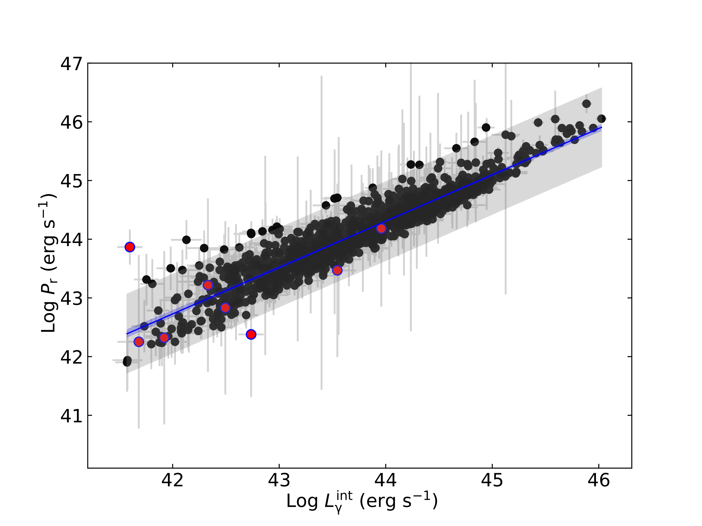
图注：The relationship between jet radiative power and intrinsic gamma-ray luminosity, with black circles representing blazars and red circles indicating radio galaxies. The blue solid line shows the best-fit linear model obtained via ordinary least squares fitting; the blue shaded area corresponds to the 2$\sigma$ confidence band, while the gray region depicts the 2$\sigma$ prediction band. The correlation coefficient for this fit is $r = 0.94$ (20$\sigma$ significance), with a scatter of 0.05 dex.
对应解读：对应“喷流功率估计器对比图”和“模型拟合”中关于喷流辐射功率、伽马射线光度及喷流功率标定关系的讨论。
入选理由：该图直接展示喷流辐射功率与内禀伽马射线光度的强相关关系，并给出最佳拟合线、置信带、预测带、相关系数和散布，是候选图中最能支撑喷流功率如何由观测高能辐射量标定的图。虽然它不是P_kin与射电腔功率的一比一对比，但比其他候选图更接近日报中关于喷流功率估计和统计拟合可靠性的核心解读。
来源与置信度：\(arxiv_source\)；high；\(arxiv_source\) / sample7.tex:figure[2]
Fig01
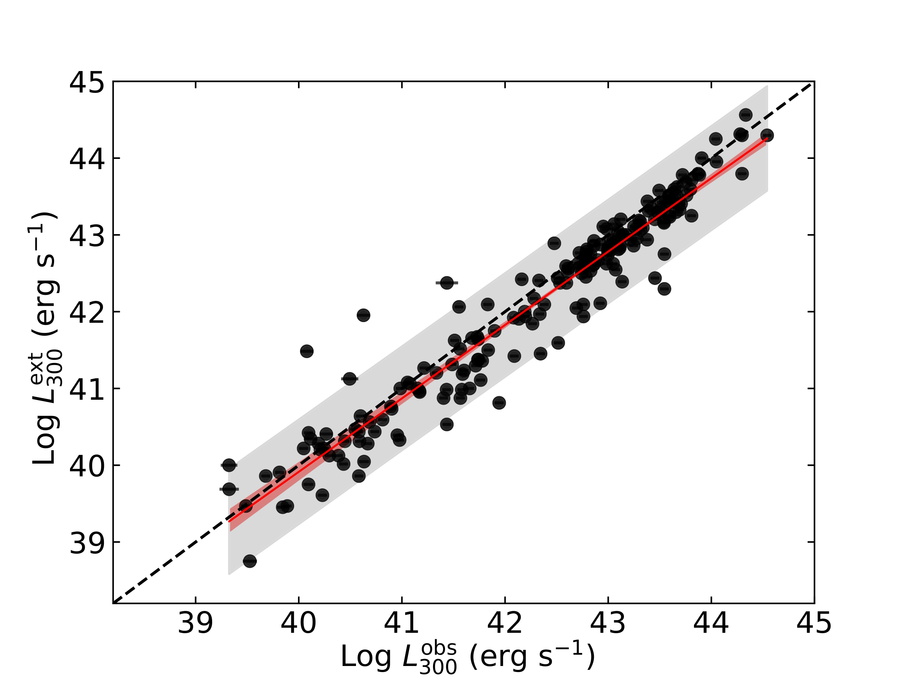
图注：Extended 300 MHz radio luminosity versus observed 300 MHz radio luminosity for beamed blazars. The y‑axis data are from \(\citet{Nemmen2012},\) while the x‑axis values are the observed 151 MHz fluxes extrapolated to 300 MHz. Solid circles denote data points; the dashed line marks equality of extended and observed luminosities. The red solid line represents the best-fit linear model obtained through ordinary least squares fitting; the red shaded area is the 95\% confidence band and the gray area the 95\% prediction band. The correlation coefficient for this fit is $r = 0.96$, which corresponds to a confidence level of 22.1$\sigma$. For several sources the extended 300 MHz radio luminosity appears to exceed the observed luminosity, likely due to extrapolating from 151 MHz with a fixed spectral index and the non‑simultaneity of the extended and observed measurements.
对应解读：对应“喷流功率估计器对比图”以及“模型拟合”中关于射电标度、非同时性、系统偏差和置信区间的讨论。
入选理由：该图比较扩展300 MHz射电光度与观测300 MHz射电光度，含一比一线、普通最小二乘拟合线、95%置信带和预测带，可用于检查射电量作为喷流功率代理量时的系统偏差。它不直接给出P_kin或P_jet，但对理解射电标度关系和估计器零点差异有辅助价值。
来源与置信度：\(arxiv_source\)；high；\(arxiv_source\) / sample7.tex:figure[1]
Fig04
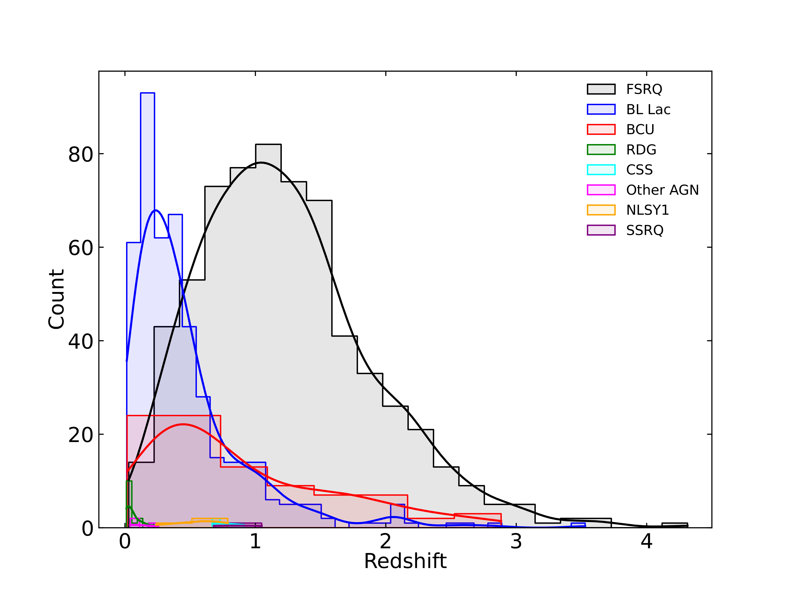
图注：The distributions of redshift for jetted AGNs. The histograms, filled with different colors, represent the redshift distributions for various categories of jetted AGNs. Kernel density estimates are overlaid to smooth these distributions, represented by lines of corresponding colors.
对应解读：对应“样本参数分布图”和“局限和下一步”中关于红移分布、选择效应以及光度—光度相关可能受共同距离因子影响的讨论。
入选理由：该图展示喷流AGN样本的红移直方图和核密度分布，可辅助判断样本选择和红移覆盖范围。它没有展示日报重点要求的M_BH、\(L_disk\)、\(lambda_Edd\)、\(P_jet\)、Gamma、B或a_*等核心物理量，因此科学相关性弱于Fig02和Fig01，但仍可作为评估选择效应的背景图。
来源与置信度：\(arxiv_source\)；high；\(arxiv_source\) / sample7.tex:figure[4]
强相关工作
这篇工作属于同类源的大样本喷流—吸积耦合研究，不对应单一瞬变或单一源。应把它放在三条文献线索中读：第一是费米大型耀变体目录和伽马射线活动星系核统计，检索关键词包括 “Fermi LAT blazar catalog”, “4LAC”, “gamma-ray jetted AGN sample”。第二是喷流功率估计方法，尤其是谱能量分布拟合喷流功率、射电腔功率和低频射电光度标度关系之间的比较，检索关键词包括 “jet power SED fitting”, “cavity power radio galaxies”, “Willott jet power relation”。第三是黑洞自旋和布兰德福德–兹纳杰克机制，检索关键词包括 “Blandford Znajek mechanism”, “magnetically arrested disk”, “black hole spin jet power blazars”。
与已有工作的关系上，本文支持“喷流功率与吸积和磁场共同相关”的主流图像，但对“高自旋即可解释强喷流”的简单版本提出了限制。它的磁场分界结果与磁滞盘思想相容：决定喷流强弱和辐射状态的不是 \(a_\ast\) 单一变量，而是黑洞附近可积累的磁通量和吸积流结构。潜在张力在于不同喷流功率估计器的归一化差异，以及自旋反演的模型依赖。读者若要追踪相反观点，可检索 “spin paradigm radio loudness problem”, “AGN jet power black hole spin correlation weak”, “Doppler bias blazar correlations”。
同一事件 / 同类源线索：
- https://arxiv.org/abs/2608.15498
- https://arxiv.org/pdf/2608.15498
- https://fermi.gsfc.nasa.gov/ssc/data/access/lat/4LACDR3/
相似工作：
基础理论 / 方法工作：
- https://ui.adsabs.harvard.edu/abs/1977MNRAS.179..433B/abstract
- https://ui.adsabs.harvard.edu/abs/1982MNRAS.199..883B/abstract
- https://arxiv.org/abs/1110.4106
相反观点 / 张力线索：
7. A statistical relation of energy injection plateaus in multi-band afterglows of gamma-ray bursts
- 来源：arXiv / astro-ph.HE
- 链接：https://arxiv.org/abs/2608.15918v1
- 作者：Xiao-Yan Li, Tong Liu, Bao-Quan Huang
- 评分：novelty 6/10，importance 7/10，relevance 10/10，final 8.75/10
- 推荐理由：统计47个GRB的同步X射线/光学平台，发现支持能量注入模型的跨波段亮度相关；GRB属于最高优先级方向，虽创新度中等但相关性很高。
中文题目：伽马暴多波段余辉能量注入平台期的统计关系
做了什么：这篇文章检验一个直接但很有用的问题：如果伽马暴余辉中的 X 射线平台和光学平台都来自外激波中的持续能量注入，那么两个波段在平台期的平均各向同性光度应该相关，而且平台结束后的正常衰减段也应表现出相近的标度关系。作者从具有 X 射线和光学同步平台的伽马暴中选出 47 个事件，计算平台期和后续正常衰减期的时间平均光度，发现平台期满足 \(\log L_{\rm X,plat,ave}=m\log L_{\rm opt,plat,ave}+c\)，斜率为 \(m=0.86\pm0.11\)；正常衰减期的斜率为 \(m=1.05\pm0.05\)。这支持平台期和正常衰减期都主要由外激波同步辐射控制，而平台到正常衰减的整体亮度下移可能对应中心引擎能量注入停止。
为什么重要：伽马暴余辉平台期长期存在两类解释：一种是中心引擎继续向外激波注入能量，另一种则包括视角效应、喷流结构、辐射效率变化、反向激波或微物理参数演化等替代机制。单看 X 射线平台很难区分这些模型，因为 X 射线样本大、但容易受到内禀 X 射线成分污染。本文把同步出现的 X 射线和光学平台放在一起做统计相关性检验，相当于要求模型同时解释两个频段的光度标度和平台后衰减段的连续性，因此约束更强。
理论 / 观测 / 仪器方法价值：这项工作的价值主要在方法论：它把平台期问题从单波段光变曲线形态判断推进到多波段光度标度检验。若 X 射线和光学在同一外激波谱段或相邻谱段中由同一电子群产生，那么二者的平均光度相关性、平台期与正常衰减期斜率一致性、以及平台后整体归一化下降，都是可被观测样本直接检验的量。对后续观测而言，这给出一个筛选能量注入候选平台的经验诊断。
为什么应该关注：如果你关心伽马暴中心引擎寿命、磁星与黑洞吸积模型、外激波微物理，或想用平台期关系做宇宙学标准化尝试，这篇文章都值得看。它不声称解决所有平台起源问题，但给出了一条清楚的证据链：多波段同步平台越能保持相同的光度标度，就越难被纯粹单波段或内禀 X 射线成分解释。
展开详细解读：文章讲解、背景、理论、重点章节、图表与相关工作
文章详细讲解
科学问题：伽马暴余辉平台期指早期陡降之后、正常幂律衰减之前的一段相对平坦阶段。自 Swift 发现大量 X 射线平台以来，其物理起源一直有争议。能量注入模型认为中心引擎在 prompt emission 之后仍继续向外激波补充能量，使本应快速衰减的外激波余辉被“托平”。如果这一解释正确，那么平台不应只是 X 射线光变曲线上的经验形态，而应在光学、X 射线等由同一外激波电子群产生的波段中留下可比较的光度关系。
作者怎么做：本文选取 47 个同时具有 X 射线和光学平台的伽马暴，重点不是重新拟合单个暴的复杂物理参数，而是构造一个统计检验。作者分别计算平台期的时间平均各向同性光度 \(L_{\rm X,plat,ave}\) 和 \(L_{\rm opt,plat,ave}\)，并对平台后正常衰减段计算对应的平均光度。随后在对数空间拟合 X 射线平均光度与光学平均光度之间的线性关系，比较平台期和正常衰减期的斜率、截距及整体偏移。
关键结果：平台期得到 \(\log L_{\rm X,plat,ave}=m\log L_{\rm opt,plat,ave}+c\)，斜率 \(m=0.86\pm0.11\)，说明两波段平均光度存在中等强度正相关。正常衰减期的对应斜率为 \(m=1.05\pm0.05\)，更接近线性比例关系。两段斜率在误差范围内相近，符合外激波同步辐射在能量注入结束前后主导的图像。尤其重要的是，平台后数据整体向较低光度移动，作者将其解释为中心引擎能量注入停止后，外激波不再被持续补能。
局限和下一步：样本只有 47 个，且要求 X 射线和光学同时有平台，这会引入明显选择效应：光学跟踪充分、红移已知、消光校正可靠的暴更容易进入样本。平均光度的定义会压缩光变曲线形态信息，也可能掩盖光谱断裂穿越观测波段、宿主星系消光、不同仪器响应、以及内禀 X 射线成分的影响。下一步应结合宽频谱能量分布、时间分辨光谱指数、喷流破缺检验和层级贝叶斯模型，区分真实物理相关与由红移、探测阈值共同造成的表观相关。
关键结果是怎么做出来的
样本选择是本文证据链的第一环。作者没有使用所有 Swift 平台暴，而是要求 X 射线和光学都出现可识别的平台，并且两个平台在时间上可认为是同步或相近的。这一条件很关键，因为能量注入模型预期外激波动力学变化会同时影响多个波段；若只看 X 射线平台，可能混入内激波尾迹、late prompt 成分或吸收校正问题。47 个事件构成本文的统计样本，规模不大，但相对于严格多波段平台样本已经具有一定代表性。
核心可观测量是时间平均各向同性光度，而不是某个单一时刻的光度。这样做的好处是减弱光变曲线局部起伏、采样不均匀和 flare 污染对相关性的影响；代价是会牺牲平台内斜率、结束时间和谱演化信息。平台期和正常衰减期分别计算 \(L_{\rm X,plat,ave}\)、\(L_{\rm opt,plat,ave}\) 以及后续阶段的同类平均光度，然后在 \(\log L_{\rm X}\)-\(\log L_{\rm opt}\) 平面中进行线性拟合。
统计结果的关键数字是平台期斜率 \(m=0.86\pm0.11\) 与正常衰减期斜率 \(m=1.05\pm0.05\)。前者说明 X 射线和光学平台光度随样本变化大体同向变化，但不是完全一比一；后者更接近 \(m=1\)，符合正常外激波衰减阶段两个波段共同受爆发能量、外部密度和微物理参数控制的预期。若论文给出相关系数、散布或显著性，读者应重点看其是否在控制红移共同因子后仍然成立，因为光度—光度相关很容易被距离项共同驱动。
支撑结论的图表应包括平台期 \(\log L_{\rm X,plat,ave}\) 对 \(\log L_{\rm opt,plat,ave}\) 的散点图、正常衰减期的同类散点图，以及两阶段关系的比较图。最重要的读图点不是散点是否“看起来有趋势”，而是拟合线斜率、置信带、内禀散布、异常点位置，以及平台后数据相对平台期是否存在系统性下移。若这种下移在大多数事件中存在，而不是少数高红移或强消光事件造成，就更支持能量注入停止的解释。
主要系统误差来自样本选择、红移、光学消光、X 射线吸收、K 校正、平台起止时间定义和光变曲线分段拟合。稳健性检验应包括剔除极端亮暴、改变平台起止时间、分别处理长暴与特殊暴、采用偏相关分析控制红移、以及比较不同回归方法对斜率的影响。若这些检验后 \(m\) 仍接近 \(1\)，那么本文的能量注入诊断就更可靠；若斜率或截距对少数事件高度敏感，则结论应被视为提示性而非决定性。
展开背景、理论、公式、模型、章节和图表导读
背景知识
伽马暴余辉的标准图像是：相对论喷流与周围介质相互作用，形成外激波，激波加速电子并放大磁场，电子同步辐射产生从射电、光学到 X 射线的长时标余辉。简单绝热外激波模型预言余辉光变曲线近似为幂律衰减。但 Swift 时代的 X 射线观测显示，许多暴在早期存在陡降、平台、正常衰减、喷流破缺等复杂阶段，其中平台期成为挑战标准模型的核心现象之一。
平台期的历史问题在于：它既可能是动力学效应，也可能是辐射成分混合。能量注入模型认为中心引擎持续活动，或较慢的物质壳层追上外激波，把能量逐步注入 blast wave，使外激波能量 \(E\) 随时间增加，从而抵消同步辐射衰减。另一类解释则认为 X 射线平台可能来自内部耗散、磁星风、喷流结构和视角效应，未必与光学外激波同步。
多波段观测之所以关键，是因为外激波模型天然要求同一动力学过程影响所有位于同一同步辐射谱上的波段。若 X 射线平台明显而光学没有平台，或二者平台结束时间不一致，就可能说明不同辐射区或不同谱段控制了光变。相反，若 X 射线与光学同步出现平台，且平均光度满足稳定标度关系，能量注入解释就更有说服力。
现在重新看这个问题有两个原因。第一，经过二十多年 Swift 和地面望远镜积累，已有足够多具有红移、光学监测和 X 射线光变曲线的事件，可以从单个案例转向统计样本。第二，平台期关系还被用于尝试构造伽马暴标准化关系，例如 \(L\)-\(T\) 相关；在这类应用前，必须先弄清平台是否来自统一物理机制。
该领域常见误区包括：把所有平坦 X 射线段都默认视为能量注入；忽视红移共同距离项导致的光度—光度相关；把光学非探测误认为无平台；忽略光谱断裂穿越导致的多波段差异；以及用单一幂律外推跨越多个辐射谱段。本文的优点是明确聚焦于 X 射线与光学同步平台，但这些误区仍是解读其统计关系时必须警惕的背景。
基础理论 / 方法脉络
基础物理图像从外激波开始。伽马暴喷流以洛伦兹因子 \(\Gamma\) 冲入外部介质，扫起质量并把动能转化为内能。激波后电子获得近似幂律能谱，磁场携带一定能量比例，电子同步辐射形成分段幂律谱。对给定观测频率，光变曲线的时间斜率取决于爆发总能量、外部介质密度剖面、电子能谱指数、冷却频率位置和是否有持续能量注入。
能量注入的核心假设是外激波能量不是常数，而是在一段时间内随源静止系时间增加。若 \(E(t)\) 增长，外激波减速会变慢，给定频率的同步辐射通量衰减也会变浅，于是形成平台。当注入停止后，系统回到近似标准外激波衰减，光变曲线进入正常衰减段。因此平台期与正常衰减期若来自同一外激波，只是动力学能量归一化不同，而非辐射机制突然改变。
本文使用的关键量是平台期和正常衰减期的时间平均各向同性光度。各向同性光度需要红移和宇宙学距离，把观测通量转换为源静止系 luminosity。时间平均的做法把一个时间区间内的辐射输出压缩为一个标量，适合做跨样本统计相关，但会隐藏时间斜率、谱指数演化和短时 flare。
观测方法的逻辑是：如果 X 射线和光学属于同一外激波同步辐射谱，二者光度应共同依赖 \(E\)、外部密度 \(n\)、电子能量比例 \(\epsilon_e\)、磁场能量比例 \(\epsilon_B\)、电子指数 \(p\) 和红移修正。不同频率可能位于不同谱段，因此斜率不一定精确为 \(1\)，但若物理起源相同，样本中的 \(\log L_{\rm X}\) 与 \(\log L_{\rm opt}\) 应呈正相关，并且平台期与正常衰减期的标度不应完全不同。
常见退化关系包括：较高 \(E\) 与较低 \(n\) 可以在某些谱段产生相似通量；\(\epsilon_B\) 与冷却频率位置强烈耦合；宿主消光会系统性压低光学光度；X 射线吸收会影响低能段通量；共同的 luminosity distance 会把两个波段的通量相关放大为光度相关。因此读者应把本文相关性视作能量注入模型的支持证据，而不是单独决定性证明。
公式与推导
第一步是从观测通量到源静止系各向同性光度。对观测频率 \(\nu_{\rm obs}\) 处的能流或频谱通量，常用转换可写为
这里 \(D_L(z)\) 是 luminosity distance，\(F_\nu\) 是观测频谱通量，因子 \((1+z)^{-1}\) 来自频率和时间间隔变换。若使用某一能段积分光度，还需要相应的 K 校正。
第二步定义本文使用的时间平均光度。若平台期在源静止系从 \(t_1\) 到 \(t_2\)，则
这里 \({\rm band}\) 可代表 X 射线或光学。这个定义把区间内起伏平均掉，适合比较样本间总体能量输出，但对平台起止时间的定义敏感。
第三步写出外激波能量注入的简化参数化。平台期常可近似为
其中 \(E_0\) 是参考时刻 \(t_0\) 的外激波能量，\(q\) 描述能量增长速率。若 \(q=0\)，就是无持续注入的标准绝热外激波；\(q>0\) 会使光变衰减变浅。
第四步连接到同步辐射标度。在均匀介质、慢冷却且 \(\nu_m<\nu<\nu_c\) 的典型情形下，外激波通量近似满足
这里 \(p\) 是电子能谱指数，\(n\) 是外部数密度，\(\epsilon_e\) 和 \(\epsilon_B\) 分别是电子和磁场能量比例。不同谱段的指数会改变，但共同点是通量依赖同一个动力学能量 \(E\)。
第五步说明平台为何出现。把 \(E(t)\propto t^q\) 代入上式，得到时间指数近似为
当 \(q\) 接近 \(3(p-1)/(p+3)\) 时，\(\alpha_{\rm inj}\) 可接近零，光变曲线呈平台。平台结束后 \(q\to0\)，衰减斜率恢复到标准值。
第六步给出本文统计检验的经验关系：
其中 \(m\) 是斜率，\(c\) 是截距，\(\epsilon\) 代表测量误差和内禀散布。若两波段由同一外激波控制，预期 \(m\) 应为正，并在许多合理条件下接近 \(1\)。
第七步，正常衰减期应有类似关系：
本文得到 \(m_{\rm n}=1.05\pm0.05\)，与平台期 \(m=0.86\pm0.11\) 相近，这正是“平台和正常衰减共享外激波起源”的主要定量论据。
第八步，若考虑回归和显著性，一个常用高斯似然可写为
这里 \(x_i=\log L_{{\rm opt},i}\)，\(y_i=\log L_{{\rm X},i}\)，\(\sigma_{\rm int}\) 是内禀散布。读者可用这个形式理解斜率不确定度、异常点和样本散布如何影响相关性判断。
模型拟合 / 应用方法
本文的拟合对象主要是对数光度平面中的线性关系，而非对每个伽马暴进行完整 broadband afterglow 动力学拟合。平台期拟合 \(\log L_{\rm X,plat,ave}\) 与 \(\log L_{\rm opt,plat,ave}\)，正常衰减期拟合对应的 \(\log L_{\rm X,norm,ave}\) 与 \(\log L_{\rm opt,norm,ave}\)。核心参数是斜率 \(m\)、截距 \(c\)、相关系数和可能的内禀散布。斜率接近 \(1\) 表示两个波段的平均光度近似成比例变化。
实际回归应处理双轴误差，因为 X 射线和光学光度都来自观测通量、红移、K 校正、吸收或消光校正以及光变曲线插值。若只使用普通最小二乘并默认横轴无误差，斜率可能偏置。更稳妥的方法包括正交距离回归、BCES、LINMIX 或层级贝叶斯回归，并显式加入内禀散布 \(\sigma_{\rm int}\)。本文摘要给出斜率误差，读者应在正文中检查作者采用了哪类回归和误差传播。
参数退化方面，最突出的是红移共同因子。因为 \(L_{\rm X}\) 和 \(L_{\rm opt}\) 都含有 \(4\pi D_L^2\)，即使两个观测通量的物理相关较弱，转换为光度后也可能出现增强的相关。因此偏相关分析、红移分箱检验或在通量空间重复拟合很重要。另一个退化是光学宿主消光与真实低光度之间的混淆，若 \(A_V\) 被低估，\(L_{\rm opt}\) 会偏低，从而影响斜率和散布。
残差诊断应重点看三点。第一，残差是否随红移、平台结束时间、光学波段、X 射线谱指数或伽马暴持续时间系统变化；若有，说明单一线性关系可能混合了不同族群。第二，平台期和正常衰减期残差是否相关；若同一事件在两阶段都偏离同一方向，可能是微物理参数或环境差异造成。第三，少数高光度或低光度事件是否主导斜率；对于 47 个样本，离群点影响不可忽视。
模型可能失败的场景包括：X 射线平台由内部引擎辐射主导而光学由外激波主导；光学平台由反向激波或能量分层 ejecta 主导；冷却频率 \(\nu_c\) 在平台期间穿过 X 射线或光学波段；喷流结构和观测视角造成 achromatic-looking plateau；或者不同事件的 \(\epsilon_e\)、\(\epsilon_B\)、\(n\) 分布过宽，淹没简单能量标度。本文结果支持能量注入图像，但最好与时间分辨光谱和全波段拟合联合使用。
重点章节 / 结果段落怎么读
数据和样本部分应首先阅读。关键是 47 个伽马暴如何定义“同时具有 X 射线和光学平台”：平台起止时间来自文献还是重新拟合？是否要求红移？光学是否做了银河系消光、宿主消光和 K 校正？X 射线是否扣除了 flare？这些选择直接决定相关性的物理含义。
光度计算方法部分是第二个重点。读者应检查平台期平均光度和正常衰减期平均光度的定义，是按源静止系时间平均、观测系时间平均，还是在某个代表时刻取值。还要看 X 射线能段和光学频段如何统一，是否使用谱指数把不同滤光片转换到同一静止系频率。
相关性拟合部分是核心。应关注平台期关系 \(\log L_{\rm X,plat,ave}\)-\(\log L_{\rm opt,plat,ave}\) 的斜率 \(m=0.86\pm0.11\)、截距、散布和相关系数；再看正常衰减期斜率 \(m=1.05\pm0.05\)。比较两者时，不只看斜率是否一致，还要看截距是否发生系统偏移。
讨论部分要重点看作者如何把相关性解释为能量注入证据。合理的论证应包括：同一外激波同步辐射可自然产生多波段相关；平台后光度下移对应注入停止；斜率接近 \(1\) 支持共同起源。同时也应承认替代模型和选择效应，避免把相关性等同于因果证明。
若有附录或稳健性检验，应优先查看。尤其是剔除离群点、改变平台定义、控制红移、使用不同回归方法、以及将样本按长暴/短暴或红移分组后的结果。如果这些检验一致，本文结论的可信度会明显提高。
建议重点查看的图表
-
X 射线与光学平台光变曲线示例：看平台是否真的同步，平台结束时间是否一致，是否有 flare 或采样空洞影响平均光度。
-
平台期 \(\log L_{\rm X,plat,ave}\) 对 \(\log L_{\rm opt,plat,ave}\) 散点图：看斜率、置信带、散布、离群点和是否由少数高光度事件驱动。
-
正常衰减期 \(\log L_{\rm X,norm,ave}\) 对 \(\log L_{\rm opt,norm,ave}\) 散点图：看斜率 \(m=1.05\pm0.05\) 是否确实比平台期更紧，是否存在同样的离群事件。
-
平台期与正常衰减期关系的对比图：重点看正常衰减期相对于平台期是否整体向低光度移动，以及这是截距变化还是斜率变化。
-
残差图：若有，应看残差相对于红移、平台结束时间、光学消光、X 射线谱指数是否有系统趋势。
-
样本表：检查每个暴的红移、平台起止时间、平均光度和误差。对小样本统计关系来说，表格中的少数极端值常常决定回归结果。
关键图表逐图导读
图 1：若论文给出多波段光变曲线示例，横轴通常是爆发后时间，最好使用源静止系时间或明确标出观测系时间；纵轴是 X 射线通量或光度、光学通量或星等转换后的通量。读者应看 X 射线和光学平台是否在同一时间段出现，平台结束后的衰减是否近似同步。读图陷阱是光学采样稀疏时，两个点之间的插值可能被误认为平台。
图 2：平台期相关图应以 \(\log L_{\rm opt,plat,ave}\) 为横轴、\(\log L_{\rm X,plat,ave}\) 为纵轴，数据点代表 47 个伽马暴，模型线是线性回归，阴影或虚线可能表示 \(1\sigma\) 或 \(2\sigma\) 置信区间。主要结论是斜率 \(m=0.86\pm0.11\) 的正相关。读图时要注意坐标范围很宽时，视觉相关可能被共同距离项放大。
图 3：正常衰减期相关图的坐标轴与图 2 类似，但使用平台后的平均光度。斜率 \(m=1.05\pm0.05\) 接近 \(1\)，说明在注入停止后两个波段仍保持共同外激波标度。读图陷阱是正常衰减段定义若不一致，例如某些事件已发生喷流破缺而另一些没有，会增加散布或改变斜率。
图 4：若有平台期与正常衰减期叠加图，应比较两组点或两条拟合线的相对位置。本文摘要提到正常衰减期数据存在系统性向下偏移，因此重点看偏移是否近似平行于平台期关系，还是在低光度端和高光度端不同。平行下移更符合能量注入停止后的归一化下降；斜率明显改变则可能暗示辐射谱段或微物理参数演化。
图 5：若有残差或相关系数检验图，横轴可能是红移、平台持续时间、平台结束时间或光学消光，纵轴是 \(\Delta\log L_{\rm X}\) 残差。读者应检查残差是否随机分布。若高红移事件系统性偏正或偏负，说明红移和探测阈值可能影响了相关性。
表 1 或样本表：这类表格虽不是图，但非常重要。应逐项看红移、X 射线平台时间、光学平台时间、平均光度和误差。若若干事件缺少宿主消光校正或光学平台只由少量点支撑，它们应在解读斜率时降低权重。
论文原图 / 可嵌入图片
（未提供 verified figure；为避免编造图片链接，本节只在能确认官方图片 URL 或成功提取论文原图时嵌入图片。）
强相关工作
这篇工作与 Swift 时代的“规范 X 射线余辉光变曲线”研究直接相连。Nousek 等和 Zhang 等在 2006 年系统描述了早期陡降、平台、正常衰减和晚期喷流破缺的结构，并提出持续能量注入是解释平台的主要候选之一。本文相当于把这些早期单波段形态学解释推进到 X 射线—光学同步平台的光度标度检验。检索关键词可用 “Swift X-ray afterglow plateau energy injection”, “GRB optical X-ray plateau correlation”, “external forward shock energy injection”。
另一个相关方向是 Dainotti 关系，即平台结束时 X 射线光度与平台结束时间之间的反相关。Dainotti 关系常被用于讨论中心引擎活动和伽马暴宇宙学标准化，但它主要依赖 X 射线平台。本文关注的是 X 射线与光学平均光度之间的多波段关系，因此可作为判断平台是否 achromatic、是否真的属于外激波能量注入的补充诊断。检索关键词可用 “Dainotti relation GRB plateau”, “GRB plateau luminosity time correlation”, “multiwavelength afterglow plateau”。
也存在相反或更复杂的观点：部分 X 射线平台可能是内部耗散或 late prompt emission，而非标准外激波；部分光学平台可能受反向激波、能量分层 ejecta 或视角效应影响。因此，本文的相关性结果应与光谱演化、closure relation、喷流破缺和 broadband afterglow modeling 放在一起解读。检索关键词可用 “chromatic plateau GRB”, “late prompt emission X-ray plateau”, “structured jet plateau afterglow”。
同一事件 / 同类源线索：
相似工作：
- https://arxiv.org/abs/astro-ph/0508332
- https://arxiv.org/abs/astro-ph/0508321
- https://arxiv.org/abs/0809.1389
基础理论 / 方法工作：
- https://arxiv.org/abs/astro-ph/9712005
- https://arxiv.org/abs/astro-ph/0108402
- https://arxiv.org/abs/astro-ph/0401348
相反观点 / 张力线索：
8. Collisionless Shock Driven by a Supersonic Velocity Shear
- 来源：arXiv / astro-ph.HE
- 链接：https://arxiv.org/abs/2608.16656v1
- 作者：Kazuki Kamiido, Yutaka Ohira
- 评分：novelty 7/10，importance 8/10，relevance 8/10，final 8.70/10
- 推荐理由：PIC模拟显示相对论无碰撞速度剪切可驱动激波并产生粒子加速所需湍动磁场，直接关联高能粒子加速、喷流和宇宙线注入问题，值得关注。
中文题目：超声速速度剪切驱动的无碰撞激波
做了什么：这篇文章用第一性原理粒子-in-cell模拟研究了未磁化电子-正电子等离子体中相对论性速度剪切的长期演化。核心结论是：剪切层并不只是通过Alves不稳定性产生磁场和热压，而是在这些压力反推等离子体后进一步形成无碰撞激波。这个过程可能同时解决剪切加速中的两个老问题：低能粒子如何被预加速注入，以及维持剪切加速所需的磁湍动从哪里来。
为什么重要：相对论性喷流、脉冲星风、伽马暴外流和活动星系核喷流中普遍存在速度剪切，但剪切加速常被卡在注入问题和散射磁场来源问题上。本文提出剪切层自身可以先通过动理学不稳定性把有序动能转化为热压和磁场，再由压力梯度驱动激波，从而给剪切加速提供种子粒子和湍流环境。这把“剪切层结构演化”和“非热粒子加速”两个问题接在一起。
理论 / 观测 / 仪器方法价值：对理论而言，文章强调速度剪切不是一个固定背景，而是会被动理学不稳定性、压力反馈和激波共同重塑的自洽系统。对数值方法而言，它展示了长期PIC模拟在追踪剪切层从线性不稳定性到非线性激波形成中的价值。对高能天体物理而言，它给出了一条无需预设外加磁湍流的粒子加速路径，可用于重新审视喷流边界层、相对论性风和未磁化碰撞等离子体的辐射模型。
为什么应该关注：如果你关心宇宙线、喷流边界层、相对论性等离子体或PIC模拟，这篇文章值得看，因为它把一个常被当作边界条件的速度剪切变成了会自发产生磁场、热压、激波和潜在加速区的动力学系统。它提示我们，在解释喷流边缘增亮、非热谱和高能粒子注入时，不能只问已有激波或已有湍流如何加速粒子，也要问剪切本身能否先制造这些条件。
展开详细解读：文章讲解、背景、理论、重点章节、图表与相关工作
文章详细讲解
科学问题：相对论性速度剪切广泛存在于高能天体环境，例如喷流与外部介质的边界、脉冲星风不同流速区、以及爆发外流内部的横向速度结构。经典剪切加速需要粒子反复跨越速度梯度并被磁湍流散射，但它面临两个直接问题：粒子必须先有足够大的回旋半径或散射长度才能有效感受到剪切；同时，未磁化或弱磁化等离子体中并不自动有足够强的磁湍流。本文研究的问题正是：一个超声速、相对论性、未磁化的电子-正电子速度剪切，能否通过自身的无碰撞动理学演化产生激波、磁场和潜在的注入粒子。
作者怎么做：文章采用第一性原理粒子-in-cell模拟，而不是流体近似。PIC方法跟踪电子和正电子的相空间分布，并通过Maxwell方程自洽演化电磁场，因此适合处理无碰撞等离子体中由电流分离、速度分布各向异性和微观不稳定性导致的场生成。研究对象是未磁化电子-正电子等离子体中的相对论性速度剪切，重点放在长期非线性演化：先观察Alves不稳定性如何把剪切动能转化为热能和磁场能，再追踪由热压和磁压推动的等离子体运动是否会发展成无碰撞激波。
关键结果：根据摘要给出的主线，Alves不稳定性在剪切层中抽取有序剪切动能，产生热压和磁场压力。这些压力不是局部耗散后就结束，而会向外推挤等离子体，在超声速条件下形成压缩前沿并最终发展成无碰撞激波。这样的激波原则上可以进行类似Fermi过程的粒子预加速，为后续剪切加速提供注入粒子；同时激波和剪切不稳定性产生的磁场湍动也能提供粒子跨剪切层散射所需的磁扰动。因此，剪切层在这幅图像中既是能量库，也是激波和湍流的发生器。
局限和下一步：这类PIC研究的主要局限通常来自尺度、维度、粒子种类和初始条件。电子-正电子等离子体避免了离子-电子质量比带来的多尺度复杂性，但也不同于许多实际喷流或星际介质中的电子-离子等离子体。未磁化设定突出自发场生成，但真实源中可能存在导向磁场或斜磁场，会改变不稳定性增长率、激波结构和粒子注入效率。下一步需要检查不同剪切Lorentz因子、声速或温度、磁化参数、三维效应、电子-离子组成以及更长时间尺度下的非热谱形成，才能把这种机制定量接入天体辐射模型。
关键结果是怎么做出来的
本文最重要的证据链应从模拟初始条件读起：作者选择的是未磁化电子-正电子等离子体，并设置相对论性速度剪切，使剪切速度相对于局部声速为超声速。这里的样本不是观测事件数，而是一组动理学数值实验；关键可比量包括剪切层宽度、盒子尺度、网格分辨率、每格宏粒子数、边界条件、初始温度、相对漂移速度和总模拟时长。读者应特别检查这些数值选择是否足以覆盖Alves不稳定性的线性增长阶段、非线性饱和阶段以及后续激波传播阶段。
核心诊断应包括能量分解随时间的变化：初始主要能量储存在剪切有序动能中，随后一部分转入粒子热能和电磁场能。若论文声称Alves不稳定性驱动了这一转化，就应看到磁场能量在若干等离子体时间尺度后增长并饱和，同时剪切层附近出现电流丝、磁场片状或涡旋状结构。更关键的是，热压和磁压的增加必须与等离子体的横向膨胀相对应，而不只是局部场增强。
激波形成的判据需要比“密度变高”更严格。读者应看密度、流速、压力和电磁场剖面是否出现共同传播的压缩前沿；在激波参考系中，上游流应超声速或超快磁声速进入，下游应热化并减速。由于这是无碰撞激波，耗散不是由粒子间库仑碰撞提供，而是由电磁湍动和集体场完成，因此相空间图、粒子速度分布函数和场结构比单纯密度图更重要。
显著性在这篇数值论文中不太可能表现为观测论文式的\(\sigma\)检测，而应体现为稳健性和因果链：Alves不稳定性增长是否先于压力增长，压力增长是否先于横向推动，横向推动是否在超声速条件下形成激波。模型比较可以通过不同初始剪切速度、温度或盒子尺寸的对照来完成。如果只有单一主模拟，读者应更谨慎，把它看作机制展示而非参数空间普适证明。
系统误差主要来自数值加热、有限盒子、有限粒子数噪声、二维或准二维几何、边界反射、以及初始剪切层是否过于理想化。稳健性检验应包括能量守恒误差、网格尺度相对于Debye长度和等离子体趋肤深度的分辨率、激波传播速度对分辨率的依赖、以及磁场能谱或粒子能谱对统计噪声的敏感性。支持结论的图表应至少包括时序能量图、二维密度和磁场图、横向剖面、相空间图、以及粒子能谱或非热尾诊断。
展开背景、理论、公式、模型、章节和图表导读
背景知识
速度剪切是等离子体天体物理中的基本结构。只要两个相邻流体层有不同速度，就会有自由能储存在速度梯度中。在流体力学里，剪切最熟悉的表现是Kelvin-Helmholtz不稳定性；在无碰撞等离子体里，速度分布函数、电荷分离和电流结构又会引入更细的动理学通道。相对论性喷流边界、脉冲星风、伽马暴外流和并合事件喷流都可能存在这种横向速度梯度。
历史上，剪切加速被视为一种可能的高能粒子加速机制。粒子如果能在不同速度层之间来回散射，就会从流体速度差中获得能量。这个过程与激波加速有相似之处，都是从大尺度有序运动中提取能量，但剪切加速不要求存在一个明确的激波间断。问题在于，它通常需要粒子已经足够高能，能跨越有效剪切宽度；低能粒子如何进入这个循环，即所谓注入问题，一直没有简单答案。
Alves不稳定性或相关的动理学Kelvin-Helmholtz型不稳定性提供了一个不同入口。在电子-正电子或电子-离子剪切等离子体中，不同流层的粒子穿插会产生电流扰动和磁场扰动，进而从剪切动能中抽取能量。与纯流体不稳定性相比，动理学不稳定性发生在等离子体趋肤深度、回旋尺度或Debye尺度附近，因此必须用PIC这类方法直接处理。
这个问题现在值得重看，是因为PIC模拟已经能从线性增长阶段推进到更长的非线性演化阶段。早期研究常关注磁场生成或剪切层加宽，而本文关注的是压力反馈是否足以驱动新的无碰撞激波。这个转向很重要：如果剪切层会自发产生激波，那么高能源中的激波和剪切不应被看作相互独立的加速场景，而可能是同一动力学演化链条中的不同阶段。
常见误区之一是把“未磁化”等同于“不会有磁场”。在无碰撞等离子体中，即使初始磁场为零，电流不稳定性也能自发产生磁场。另一个误区是把剪切层当作固定背景来计算粒子加速，而忽略粒子加热和磁场压力对剪切层本身的反作用。还有一个误区是把所有压缩结构都称为激波；无碰撞激波必须满足传播、压缩、热化和耗散由集体电磁场完成等条件，需要用相空间和能量诊断共同确认。
基础理论 / 方法脉络
基础物理图像可以从自由能说起。两个相邻等离子体层以不同速度运动时，体系包含有序动能。若没有碰撞，库仑碰撞不能有效耗散这部分能量，但集体电磁不稳定性可以把速度分布的各向异性和漂移能转化为电磁场与粒子随机运动。PIC模拟的价值就在于它不预设闭合的压强张量或电阻率，而是从粒子轨道和Maxwell方程中得到这种转化。
在未磁化电子-正电子等离子体中，电子和正电子质量相同、电荷相反，因此没有电子-离子体系中的大质量比分离。这样做可以突出相对论性剪切和动理学不稳定性的基本行为，同时减少多尺度计算成本。代价是它不包含离子惯性、电子-离子温度分离和离子尺度激波结构，因此向普通重子等离子体外推时要谨慎。
Alves不稳定性可理解为相对论性剪切中的电流和磁场扰动自激增长。剪切两侧粒子穿越界面后，由于速度分布和电荷流不同，会形成电流扰动；电流产生磁场，磁场再通过Lorentz力改变粒子轨道，增强扰动。在线性阶段可用增长率描述，在非线性阶段则表现为磁场饱和、剪切层加热和层宽增大。
激波形成需要超声速或超快磁声速条件。压力扰动如果以低于驱动速度的信号速度传播，就会堆积成压缩前沿。无碰撞激波中，下游热化不是靠二体碰撞，而是靠电磁湍动散射和相空间混合。本文的关键逻辑是：剪切不稳定性先提供压力源，压力源推动等离子体向外运动，若该运动相对于背景为超声速，就形成无碰撞激波。
常见退化和系统误差包括：磁场增强到底来自Alves不稳定性还是数值噪声放大；压缩前沿到底是声波、边界反射还是真正激波；粒子能谱的高能尾到底是物理加速还是有限粒子数统计涨落；二维几何是否人为增强了场结构的相干性。读这类文章时，应把能量守恒、相空间结构、剖面传播速度和参数扫描放在同等重要的位置。
公式与推导
第一步是写出剪切层的有序动能密度。对冷的相对论流，一个数量级表达为
其中\(n\)是实验室系或适当参考系中的数密度，\(m\)是电子或正电子质量，\(c\)是光速，\(\Gamma=(1-v^2/c^2)^{-1/2}\)是流体Lorentz因子。本文讨论的能量转换，本质上就是把这部分剪切有序动能的一部分转入热能和电磁场能。
动理学模拟的基本方程是粒子运动方程与Maxwell方程。单个宏粒子的动量满足
其中\(q\)为粒子电荷，\(\mathbf{p}=\gamma m\mathbf{v}\)为相对论动量，\(\mathbf{E}\)和\(\mathbf{B}\)是自洽电磁场。这条方程说明，任何由剪切诱导的电流扰动一旦产生磁场，都会反过来改变粒子轨道。
场的演化由Maxwell方程闭合，例如
这里\(\mathbf{J}\)是由宏粒子沉积得到的电流。Alves不稳定性可看成剪切导致的\(\mathbf{J}\)扰动和\(\mathbf{B}\)扰动之间的正反馈。
无碰撞等离子体的基本尺度是等离子体频率和趋肤深度：
其中\(e\)是元电荷，\(\gamma\)表示粒子的典型热或漂移Lorentz因子。PIC模拟必须用足够的网格和时间步解析\(\lambda_{\rm s}\)和\(\omega_{\rm p}^{-1}\)，否则微观不稳定性、场增长率和激波厚度都会不可靠。
磁场生成的效率常用磁能占比表示：
其中\(B^2/8\pi\)为磁能密度。若\(\epsilon_B\)随时间上升并在剪切层附近达到非零饱和值，就说明剪切动能被有效转化为磁场能；但它还必须与热压和流体剖面的变化一起解释，不能单独作为激波证据。
压力驱动可由动量守恒的流体极限来理解：
其中(\
ho)是惯性质量密度，\(u_i\)是流速分量，\(P\)是粒子压强，\(T^{\rm EM}_{ij}\)是电磁应力张量。本文的物理链条对应于\(P\)和\(T^{\rm EM}_{ij}\)在剪切层增长后，对周围等离子体施加横向压力梯度。
是否超声速可用Mach数表达：
其中\(v_{\rm push}\)是压力推动前沿的速度，\(c_{\rm s}\)是上游介质中的声速。若\(\mathcal{M}>1\)，压缩扰动不能以声速向前平滑传播，容易堆积成激波；在磁化情形应把\(c_{\rm s}\)替换为快磁声速，但本文初始未磁化时声速判据更直接。
一维激波跃迁的质量和动量守恒可写成
其中下标\(1\)和\(2\)分别代表上游和下游，\(u\)是激波参考系中的四速度，\(w\)是焓密度，\(P\)是压强。若模拟剖面显示上游到下游满足压缩、减速和热化趋势，就支持无碰撞激波解释。
粒子加速的最小诊断是能谱是否出现非热尾，可用
近似描述，其中\(p\)是谱指数，\(\gamma_{\rm cut}\)是截止Lorentz因子。若激波确实提供剪切加速的注入粒子，应看到粒子分布从近热分布发展出高能尾，且高能粒子空间上与激波或剪切湍动区相关。
最后，数值稳健性可用能量守恒误差衡量：
其中\(E_{\rm part}\)是粒子总能量，\(E_{\rm field}\)是电磁场能量。若\(|\Delta_E|\)小于物理能量转换量，关于剪切动能转化、磁场生成和激波形成的结论才更可信。
模型拟合 / 应用方法
这篇文章主要是数值机制研究，而不是传统意义上的观测拟合。可“拟合”的对象包括Alves不稳定性的线性增长率、磁场能量增长曲线、剪切层宽度随时间的演化、激波前沿位置与传播速度、以及粒子能谱的热成分和非热尾。读者应把这些量当作模型诊断，而不仅是可视化结果。
在线性阶段，常见做法是对电磁能量或某个傅里叶模幅度拟合指数增长。若场幅度\(A(t)\)满足\(A(t)\propto \exp(\Gamma_{\rm inst}t)\)，则增长率\(\Gamma_{\rm inst}\)可以与理论预期或不同模拟参数比较。需要注意的是，PIC噪声会影响早期振幅，非线性饱和会影响晚期斜率，因此拟合区间必须选在线性增长清晰的时间段。
激波传播速度通常可通过追踪密度峰、压强跃迁或速度跃迁的位置来估计。这里存在诊断退化：不同物理量的前沿位置可能略有偏移，尤其在无碰撞激波中，前驱区、磁湍动区和热化区不一定重合。因此最好同时给出密度、速度、温度和磁场剖面，并检查所得激波速度是否一致。
粒子能谱拟合需要区分热分布、高能尾和有限粒子数噪声。电子-正电子相对论性等离子体的热成分可接近Jüttner分布，而非热尾可用幂律加指数截止近似。谱指数、截止能量和非热能量占比之间有退化：短时间模拟可能只看到瞬时尾部，无法判断是否进入渐近幂律；有限盒子也会限制最高能粒子的回旋半径和散射路径。
系统误差方面，最重要的是数值分辨率、宏粒子数、边界条件和维度。若网格不能解析Debye长度或趋肤深度，数值加热可能伪装成物理热化；若盒子横向太小，激波或湍流相关长度会被边界限制；若采用二维几何，磁重联、湍流级联和粒子扩散可能与三维显著不同。实际应用到喷流或脉冲星风时，还要引入磁化、辐射冷却、电子-离子质量比和大尺度几何，这些都可能改变注入效率。
重点章节 / 结果段落怎么读
数据/模拟设置部分最值得先读。需要确认初始速度剪切如何设置，剪切层是接触间断还是有限宽度过渡，等离子体温度和声速如何定义，是否确实达到超声速条件，以及模拟盒子、网格、时间步和边界条件是否足以容纳长期演化。对于PIC论文，这些细节直接决定后续结论的可信度。
线性不稳定性和早期演化部分应关注Alves不稳定性的证据。读者应看作者是否展示电流、磁场或电磁能量的指数增长，是否说明增长区域局限在剪切层附近，以及是否与已有动理学剪切不稳定性理论相符。这一段决定了“能量从剪切进入场和热压”的第一环是否成立。
非线性演化和压力反馈部分是全文的转折点。这里应查看热压、磁压和密度结构如何随时间变化。若剪切层中产生的压力向外推动等离子体，应有横向速度、压缩区和压力梯度的直接图像或剖面支持。读者需要区分局部加热、声波传播和真正激波形成。
激波识别和粒子加速部分是最重要结果。应重点检查激波前沿的位置随时间、上游/下游剖面、粒子相空间分布和能谱演化。若作者提出激波可解决剪切加速注入问题，应看是否有高能粒子尾、粒子空间分布与激波相关性、以及磁湍动能否使粒子跨剪切散射。
讨论和结论部分应放在最后读，重点看作者如何限定适用范围。特别要注意电子-正电子组成、未磁化条件、二维或三维设置、有限模拟时间和天体尺度外推。若有附录或补充检验，应优先查看分辨率测试、能量守恒和参数扫描。
建议重点查看的图表
-
初始条件与几何示意图：看速度剪切方向、剪切层位置、边界条件和坐标定义，避免误解哪个方向是流向、哪个方向是横向传播。
-
电磁能量和粒子能量随时间曲线：看磁场能、热能和有序动能的转换顺序，特别是磁场增长是否先于压力推动和激波出现。
-
二维密度、磁场或电流图：看剪切层附近是否出现Alves不稳定性结构，以及压缩前沿是否从剪切层向外传播。
-
横向剖面图：看密度、速度、压强、磁场能量密度的跃迁是否共同出现；真正激波应有压缩、减速和热化的一致信号。
-
相空间图：看粒子在位置-动量空间中是否显示反射、散射或下游热化结构，这是无碰撞激波比流体压缩更强的证据。
-
粒子能谱图：看是否从热分布发展出高能尾，高能尾是否随时间增长，以及截止是否受盒子尺度限制。
-
稳健性或参数扫描图：看不同分辨率、盒子大小、剪切速度或温度下，激波形成是否仍然存在，而不是某个数值设置的偶然产物。
关键图表逐图导读
图 1：通常应是模拟设置或初始剖面。横轴可能为空间横向坐标，纵轴为流速、密度或温度；也可能是二维盒子示意。读图时要确认剪切层宽度、速度符号和边界条件，因为这些决定Alves不稳定性的种子扰动和后续激波传播方向。陷阱是把周期边界中的镜像结构误认为独立激波。
图 2：很可能是能量随时间演化。横轴通常为以等离子体频率归一化的时间，纵轴为归一化能量或能量占比。关键趋势应是电磁场能量和热能从剪切动能中增长；如果磁场能量先快速增长再饱和，而热能继续增长，说明系统进入非线性耗散阶段。读图陷阱是只看最终能量占比，不看增长顺序。
图 3：二维磁场、电流或密度快照应展示Alves不稳定性和后续压缩结构。坐标轴通常为空间坐标，颜色表示某个场分量或密度。应检查结构是否从剪切层起源，是否随时间向外推进，以及磁场是否呈湍动而非单一数值条纹。陷阱是颜色条范围变化可能夸大不同时间快照的差异。
图 4：横向剖面是判断激波的核心图。横轴为空间横向坐标，纵轴可能包括密度、流速、温度、压强和磁能密度。若压缩峰、速度跳变和热化区空间上相关，并且前沿位置随时间移动，就支持激波解释。陷阱是单一密度峰也可能来自声波或边界反射，因此必须联合多个物理量。
图 5：相空间图应显示位置与动量或速度的关系。横轴为空间位置，纵轴为某一动量分量，颜色为粒子数密度。无碰撞激波常伴随粒子反射、速度弥散和下游热化；如果只看到平滑加宽而无明显相空间混合，则激波解释较弱。读图时要注意高能粒子的统计噪声。
图 6：粒子能谱或磁场谱用于讨论加速和湍流。横轴可能为粒子Lorentz因子或波数，纵轴为粒子数或谱能量密度。应看是否存在稳定的非热尾、谱指数是否随时间收敛、最高能量是否接近盒子限制。陷阱是短暂的高能尾不一定意味着成熟的Fermi加速。
论文原图 / 可嵌入图片
Fig01
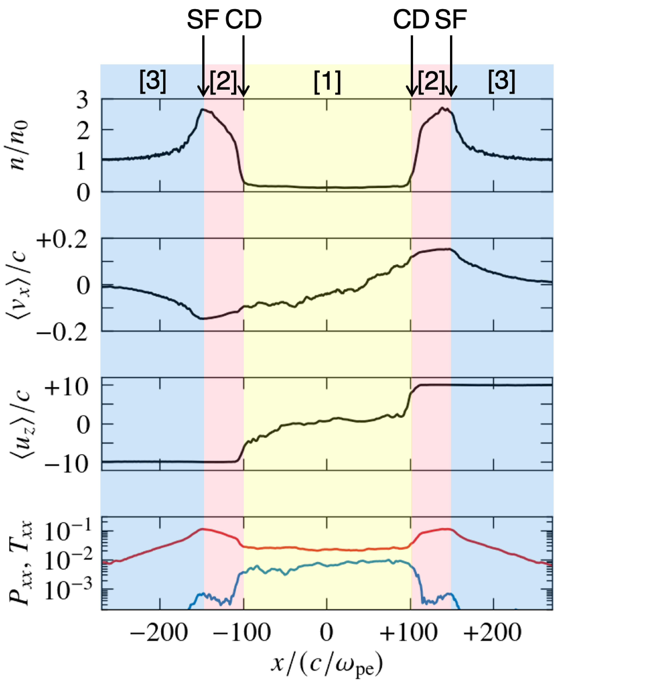
图注：One-dimensional $y$-averaged profile for density (top), $x$-directional three-velocity (second from the top), $z$-directional four-velocity (third from the top), momentum tensor (bottom, red line), and Maxwell stress tensor (bottom, blue line) at $t\ompe = 600$. The regions 1, 2, and 3 indicate the low-density region, the shock downstream, and the shock upstream, respectively. CD and SF represent the contact discontinuity and the shock front, respectively.
对应解读：对应“建议重点查看的图表”第4项横向剖面图，以及“关键图表逐图导读”中关于激波判据和模型诊断里追踪激波前沿位置、密度/速度/压强/磁场跃迁的部分。
入选理由：这是候选图中最直接支撑论文核心结论“形成无碰撞激波”的图。图中给出y平均的一维剖面，包含密度、x向三速度、z向四速度、动量张量和Maxwell应力张量，并明确标注低密度区、激波下游、激波上游、接触间断和激波前沿。它比单纯二维快照更适合判断压缩、减速、热化和电磁应力是否空间上共同出现，是日报详细解读中最应嵌入的主图。
来源与置信度：\(arxiv_source\)；high；\(arxiv_source\) / main.tex:figure[1]
Fig02
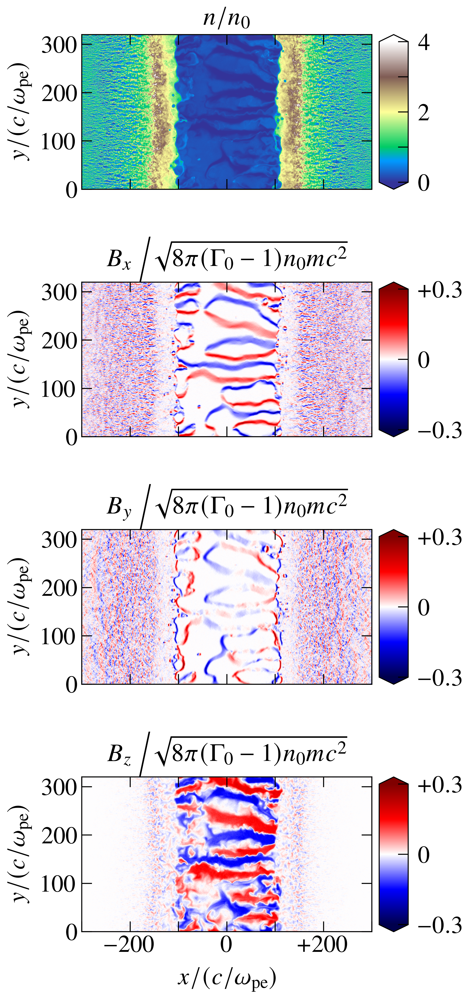
图注：Two-dimensional profile at $t\ompe=600$ for the density (top), and the $x$, $y$, and $z$-components of the magnetic field (second, third, and bottom).
对应解读：对应“建议重点查看的图表”第3项二维密度、磁场图，以及“关键图表逐图导读”中二维磁场/密度快照用于识别Alves不稳定性结构、压缩前沿和磁场湍动的部分。
入选理由：该图在tωpe=600给出二维密度以及三个磁场分量，是理解剪切层非线性演化空间形态的关键证据。它能展示压缩结构是否从剪切区域向外发展、磁场是否呈现多分量湍动，而不仅是一维平均后的结果。与Fig01互补，Fig02提供全局形态，Fig01提供定量剖面判据。
来源与置信度：\(arxiv_source\)；high；\(arxiv_source\) / main.tex:figure[2]
Fig05
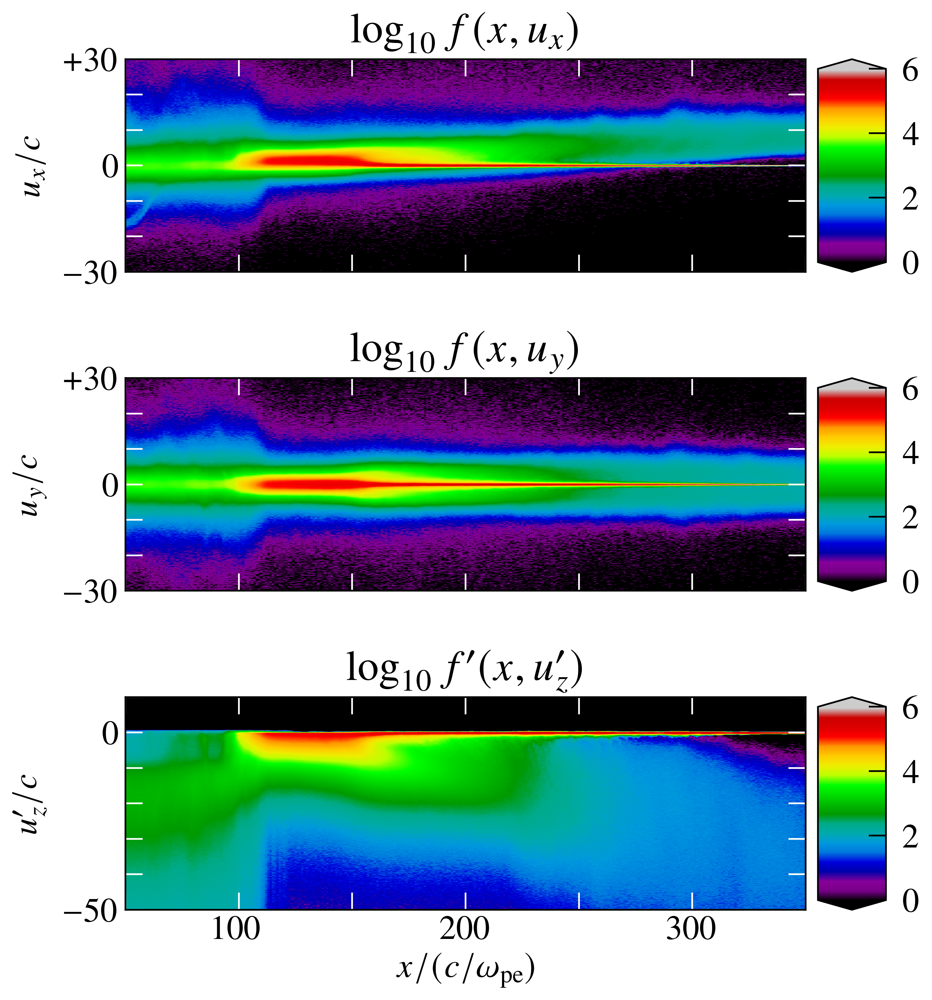
图注：Phase space in the upstream rest frame at $t\ompe=600$.
对应解读：对应“建议重点查看的图表”第5项相空间图，以及“关键图表逐图导读”中利用位置-动量空间判断粒子反射、散射、速度弥散和下游热化的部分。
入选理由：相空间图是区分普通流体压缩和无碰撞动理学激波的重要诊断。候选图中只有Fig05直接给出上游静止系下的相空间信息，可用于检查粒子是否出现反射、混合或热化结构，因此对解释‘collisionless shock’比单看密度或磁场图更有判别力。
来源与置信度：\(arxiv_source\)；high；\(arxiv_source\) / main.tex:figure[5]
Fig04
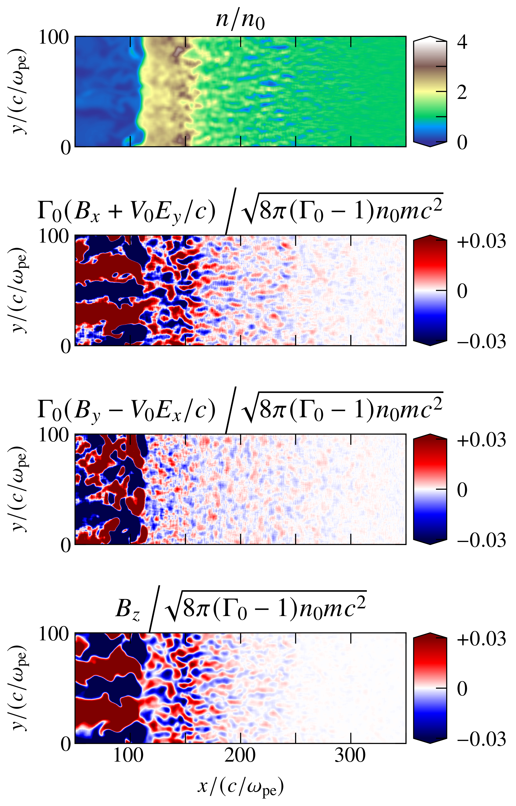
图注：The same as Fig.\(\ref{fig:2D_1},\) but zooming into $50
入选理由：Fig04是Fig02的局部放大，并将磁场变换到上游静止系，专门突出上游结构和激波前沿附近的磁场形态。它适合支撑日报中关于前驱区、磁湍动和无碰撞激波微观结构的解读。其科学价值略低于Fig02和Fig01，因为它是局部放大图，但对说明上游磁场扰动和坐标系效应很有用。
来源与置信度：\(arxiv_source\)；high；\(arxiv_source\) / main.tex:figure[4]
Fig03
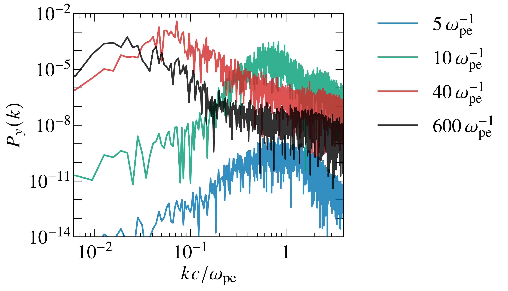
图注：Power spectrum of the $x$-component of the magnetic field at $x/(c/\ompe)=0$ shown for each time.
对应解读：对应“建议重点查看的图表”第6项中关于磁场谱/湍流谱的部分，以及模型拟合段落中把磁场增长和湍流谱作为机制诊断而非单纯可视化结果的讨论。
入选理由：Fig03给出x=0处Bx分量的功率谱随时间变化，可用于判断磁场扰动的尺度分布和湍流发展，是连接Alves不稳定性生成磁场与后续剪切加速所需磁湍流的重要辅助图。不过它不是粒子能谱，也不能单独证明激波形成，因此排序低于剖面、二维结构和相空间图。
来源与置信度：\(arxiv_source\)；high；\(arxiv_source\) / main.tex:figure[3]
强相关工作
这篇工作应放在动理学Kelvin-Helmholtz不稳定性、Alves不稳定性、相对论性剪切加速和无碰撞激波形成的交叉处阅读。同类工作包括未磁化剪切等离子体中自发磁场生成的PIC研究、相对论性喷流边界层的粒子加速模拟、以及电子-正电子无碰撞激波中的Fermi加速研究。建议检索关键词：\(\)Alves instability relativistic shear PIC\(\)、\(\)kinetic Kelvin-Helmholtz instability pair plasma\(\)、\(\)collisionless shock shear flow particle-in-cell\(\)、\(\)relativistic shear acceleration injection problem\(\)。
与传统激波加速论文相比，本文强调激波不是预先给定的外部结构，而是由剪切不稳定性产生的压力反馈驱动出来。与传统剪切加速模型相比，本文的重点不是在给定湍流扩散系数下求粒子谱，而是解释注入粒子和散射磁场如何自洽产生。潜在张力在于：PIC盒子的微观尺度与真实天体喷流的宏观尺度相差巨大，二维或有限时间模拟中看到的注入效率和磁场湍流能否外推，仍需更多参数扫描和三维模拟检验。
同一事件 / 同类源线索：
相似工作：
（未提供）
基础理论 / 方法工作：
（未提供）
相反观点 / 张力线索：
（未提供）
说明
评分由 LLM 给出初评，再由本地阈值策略过滤；IACT、TeV 伽马射线和高能中微子天文学按重点方向处理。